victoria to sitka logbook
transcript
On the passage from Victoria to Sitka we traveled 1,800 NM, the journey lasting from May 1st to August 11th 2024. Rek kept a logbook of our travels, to help us remember the conditions we encountered, our thoughts at the time, etc. Sailing near shore, we think, is more difficult than sailing offshore, there are more obstacles to deal with, like traffic, reefs, currents, and land effects on wind.
Our aim was to get near 58°N, the highest we sailed on this trip was 57°N. We wanted to explore Southeast Alaska and the north coast of British Columbia, to experience anchoring in deeper waters, and to see if we could enjoy sailing in colder, rainier weather.
- Week 1
- Week 2
- Week 3
- Week 4
- Week 5
- Week 6
- Week 7
- Week 8
- Week 9
- Week 10
- Week 11
- Week 12
- Week 13
- Week 14
- Week 15
| Week 1 | |
|---|---|
| May 1st | Victoria to Sidney I awoke to an awful sound, an alarm ringing at 0540. Devine had been waking up at 0600 every second day all year to go to the gym, and so was used to this, but I could not find my feet. The morning was rude, I couldn't persuade my body to leave the bed to face it — it had taken us so long to build up this much warmth! I knew that current waits for no one, and so with eyes still closed, my legs crawled out of the blankets, my body inevitably followed, ragdolling out of bed and into the cold. I awoke to an awful sound, an alarm ringing at 0540. Devine had been waking up at 0600 every second day all year to go to the gym, and so was used to this, but I could not find my feet. The morning was rude, I couldn't persuade my body to leave the bed to face it — it had taken us so long to build up this much warmth! I knew that current waits for no one, and so with eyes still closed, my legs crawled out of the blankets, my body inevitably followed, ragdolling out of bed and into the cold.We got dressed, to preserve what little warmth we had left, then made sure that everything aboard was secured for our sail to Sidney. We're always forgetful when we haven't sailed in a while. In the winter, the boat is still, so still that it becomes part of the land. Pino sways at the dock in heavy winds, but nothing threatens to fall over, the motion is never violent. Now, each item must go back to its assigned spot, lashed down. There is light outside at this hour, it helps, but waking before the birds is not right. As soon as we moved outside, Peter, our dock neighbor and good friend, was there to greet us. Peter, like myself, doesn't share Devine's early hour waking habit, but he knew we were leaving, and made an effort to be there to say goodbye. Even at this early morning hour, Peter looked as dapper as ever, Peter, who goes to the gym in corduroy pants and button down shirts. We hug, he helps us push off. |
| Pino glided away from the dock on calm waters, propelled by Calcifer II. Our departure awoke another neighbor, Gunther, he was outside, and he too waved us off, "where are you going again?" he asked. "Alaska!" we whisper-shouted back as we drifted past — it was early, we didn't want to make more noise than necessary. The little ephemeral floating community we'd found was precious, like birds returning to land to nest every year, we all gather in the fall, and come spring, everyone flies away. Some birds return to the nest, others don't, drawn by the allure of distant lands. A light breeze greeted us at the mouth of the outer Victoria Harbour, we hoisted Pino's wings inside the calm of the breakwater. When out in the Juan de Fuca Strait, the body of water that we must cross to get to Sidney, the wind was not strong enough to push us by itself. Calcifer II continued to provide help. |
|
| Last winter, we built our own gimballed stove, we tried it for the first time underway. I toasted bread in our heavy cast iron pan, then coated one side of the crunched-up exterior with peanut butter. While we ate our breakfast, I boiled water to thin the moka pot coffee — doing this fools us into thinking there is more coffee to drink. I passed the grinder to Devine outside who was steering and holding the tiller with one leg. We had modified our tiller head for this trip, it was now low enough that we could steer like this, freeing our hands for other tasks. We bought this wooden tiller at a scrapyard in Sonoma(California) in 2016, when sailing down the west coast of the United States. The head, which binds the tiller to the rudder stock, forced it at an angle that was abnormally high for steering, but the tiller itself was perfect. We rectified the design this year, but only because a crack had formed in the head which forced us to put together a makeshift replacement, consisting of an aluminum pipe, several heavy bolts and bungees. When the water in the kettle was hot, I switched it for the moka pot and completed our breakfast routine. The boat wasn't heeling enough for this to be a good first test for our stove, but the unit performed well. | |
| Victoria is on the south end of a peninsula to the southeast of Vancouver Island, Sidney is on the northeastern end of this same peninsula, 25 NM away. When we turned around the south end of the peninsula, the wind left us, as it tends to do in this area. The wind only ever bends around the corner when Juan de Fuca is in a bad mood. The calm lured out several small fishing boats. We laughed, seeing the number of gulls at their heels. Each boat had its own little gull fan club. Some gulls were resting on the cabin tops, the rest were in the water, paddling around, waiting for scraps or for space to free up on the boat. We wondered if the people on those boats liked the gulls. Were they friends? Did they give them names? Or were they a terrible nuisance? | |
| The wind returned south of James Island, we rode it into Sidney, arriving at 1100. | |
| May 2nd | Sidney to Montague The alarm rang at 0600, we snoozed until 0640, then left at 0800 to catch the current north to our next anchorage. Bing, bang, boom. After pushing off the dock, we pulled onto another to fill 4x20 L bins with diesel — our main fuel tank only holds 62 L, keeping annexes aboard is necessary for long coastal trips. We hoped the wind would be a frequent companion on our trek north. The alarm rang at 0600, we snoozed until 0640, then left at 0800 to catch the current north to our next anchorage. Bing, bang, boom. After pushing off the dock, we pulled onto another to fill 4x20 L bins with diesel — our main fuel tank only holds 62 L, keeping annexes aboard is necessary for long coastal trips. We hoped the wind would be a frequent companion on our trek north. |
The wind was blowing out of the northeast, but we only felt it once past Portland Island. It was coming out of where we needed to go, but as strange as it sounds to those unacquainted with the physics of sailing, a sailboat can work with this. We tightened the sheets and sailed into the wind, tacking as required. Devine read through a thick book documenting Southeast Alaska anchorages, while I, at the tiller, counted cormorants in the water. We saw a group of 30 near Portland Island, with a few gulls amongst them. The gulls were outnumbered, out of place, surrounded by cormorant heads — both were easy to distinguish from afar, because cormorants sink, while gulls float. We played dodge-the-ferries, while tacking northward, until the breeze became too weak to sail with. Calcifer II carried us the rest of the way to Montague Harbour. We arrived at 1300. Tacking had added 3 extra nautical miles to our trip. Sailing into the wind is not the quickest way forward, we can't be in a hurry, but timing matters when sailing in waters governed by strong currents. The current reverses many times per day, when it turns against us, progress is slow, and depending on the strength of the current it can stop our vessel outright. If the wind isn't with us, with a current running, progress is a beautiful dream. Our motor can carry us through some current, but it feels like throwing money into the ocean. In these waters, seeing sailboats motor into the wind, constrained by a short tidal exchange, is common. We played dodge-the-ferries, while tacking northward, until the breeze became too weak to sail with. Calcifer II carried us the rest of the way to Montague Harbour. We arrived at 1300. Tacking had added 3 extra nautical miles to our trip. Sailing into the wind is not the quickest way forward, we can't be in a hurry, but timing matters when sailing in waters governed by strong currents. The current reverses many times per day, when it turns against us, progress is slow, and depending on the strength of the current it can stop our vessel outright. If the wind isn't with us, with a current running, progress is a beautiful dream. Our motor can carry us through some current, but it feels like throwing money into the ocean. In these waters, seeing sailboats motor into the wind, constrained by a short tidal exchange, is common. |
|
We arrived in Montague Harbour, a large anchorage on Galiano Island that can host hundreds of boats, dropping our anchor in 11 m(35 ft). The bay hosts several local boats on moorings, but was otherwise empty. Despite there being large areas free of anchored boats, a large motor boat came into the anchorage, 20 minutes after we had arrived, and dropped their anchor very near ours. Pino is a shiny lure, drawing the attention of bigger fish. Inside the cabin, we picked up a few disobedient items that had rolled out of their berths. Some items had found the floor, "this isn't your room," I said, remembering the classic line said by Tom Hanks to a dog in Turner and Hooch — sometimes I fear that too many of my words are borrowed from films. Inside the cabin, we picked up a few disobedient items that had rolled out of their berths. Some items had found the floor, "this isn't your room," I said, remembering the classic line said by Tom Hanks to a dog in Turner and Hooch — sometimes I fear that too many of my words are borrowed from films.We prepared basmati rice with sauteed sweet potatoes, tofu, and greens, seasoned with soy sauce and mirin, with a side of miso soup. |
|
| That night, we continued reading The Martian by Andy Weir. In the book, Mark Whatney must be self-sufficient, he must ration his food to survive. With our upcoming trip, we don't have to ration, our time away from others won't span 4 years, but we do need to be cautious with both food and water. At sea, Pino must be an island. | |
| May 3rd | Montague The wind was too light to sail, so we waited in Montague for an extra day. Avi sent us a message, asking if we'd like to go see the Recycling Center's new plastic crusher and press. We rowed Teapot to shore and met Avi at the dinghy dock, he gave us a ride to the Recycling Center. |
| The new machines transformed plastic waste into new materials, which locals could use to produce art, for construction, or to make replacement parts at home. Same type plastics were gathered — polypropylene, polystyrene, etc. The shredder reduced the plastic into smaller pieces, and a separate machine, a heated hydraulic press, softened and merged the bits into a solid sheet. The size of the sheet depended on the amount of shredded plastic, and the sheet thickness(adjustable with the press). Mixing different colored plastics resulted in a gorgeous mandala daubed with bright and glaring patterns. Ading a single shredded bottle of yellow mustard created amazing contrast. The sheet of plastic ressembled a painting, born of plastic waste. Previously, Galiano Island was exporting all of its plastic waste to the Vancouver mainland, a lot of it now stays on the island, given a second, and hopefully lasting purpose. The recycling center was across from a building that accepts second hand goods, all from residents of Galiano. The center separates all recyclables so they are better processed — just like in Japan. The rest of British Columbia doesn't discern between different kinds of plastics, it also doesn't recycle glass... which is... insane. |
|
| May 4th | Montague to Secretary Islands 0830 departure from Galiano Island, with the goal of stopping either at a bight between the Secretary Islands, or at Clam Bay, a short 10 NM sail away. We needed an anchorage that offered protection from both the SE and NW — a difficult find in these waters, given the fact that most bays have either a SE or NW orientation. Montague fits that description, but it was too far south, we wanted to be near Porlier Pass to exit at slack current come morning. The Gulf Islands are surrounded by natural barriers, rapids that prudent sailors ought to take at slack tide, during the calm between the reversal of the current. All of the rapids open onto Georgia Strait, a large body of water that separates Vancouver Island from the mainland coast. 0830 departure from Galiano Island, with the goal of stopping either at a bight between the Secretary Islands, or at Clam Bay, a short 10 NM sail away. We needed an anchorage that offered protection from both the SE and NW — a difficult find in these waters, given the fact that most bays have either a SE or NW orientation. Montague fits that description, but it was too far south, we wanted to be near Porlier Pass to exit at slack current come morning. The Gulf Islands are surrounded by natural barriers, rapids that prudent sailors ought to take at slack tide, during the calm between the reversal of the current. All of the rapids open onto Georgia Strait, a large body of water that separates Vancouver Island from the mainland coast.The Secretary Islands anchorage was on the way to Clam Bay, we had never been there, but we would go by to check it out, to see if it was suitable for an overnight stay. |
| We had 5-10 kn on our bow the entire way, but it lessened as we neared our destination. The small bight between the Secretary Islands was open to the north, and we suspected that northwest winds could creep in through Porlier Pass to disturb it, but we decided to chance it. We set our anchor in 6 m (20 ft) of water, in mud. The stronger gusts were curling around the corner, entering the anchorage. The winds later rose to 15-20 kn, but would lessen before dying entirely. It was supposed to turn to the southeast overnight, and to build up come Sunday morning into a strong enough breeze to carry us across the strait. It was likely that we would have endured these same wind conditions in Clam Bay. Clam Bay, a bay tucked between two islands, is full of debris, old crab pots, disused aquaculture gear, it is not our favorite spot. The unnamed bight in the Secretary Islands was a welcome change. |
|
At 1400, the forecast was upgraded to a strong wind warning, with 20-30 kn blowing in the strait — not a fun surprise. The anchorage became more rolly, with the boat yawing with the coming waves. We both felt sea sick. Like before, only the strong gusts penetrated our little bight, but the waves were sneaking around the corner, invading our space. Devine took a nap, working on the computer in these conditions was too difficult. I wanted to nap too, to rid myself of a headache, but I preferred to keep watch.  |
|
| Later, the forecast changed yet again, down to 15-25 kn. The motion at anchor became tolerable, cooking dinner without fear of feeling sea sick would be possible. I cooked some sticky brown rice with a topping of sweet and sour chickpeas with crushed peanuts on top. The wind was howling in the strait, but it wasn't felt as strongly here. The wind left entirely at 1700, allowing us to sleep well. We are always grateful when the wind goes to sleep too. | |
| May 5th | Secretary Islands to Smuggler Cove We awoke to an even quieter quiet. A lonely log drifted past, a bald eagle sat atop a bare tree top, a dog barked, the echo distorted the bark of the dog, making it appear like it belonged to a larger, more ferorious animal. We left our unnamed nook at 0830, motoring towards Porlier Pass to catch it at its quietest. Porlier Pass can run fast at peak current, but like all rapids, when timed right, the waters are smooth. Today, the waters were undisturbed. We passed a log supporting 12 black-headed gulls, we named them: the black-headed gull syndicate. This log was the place to be, this is where shady decisions in the black-headed gull world happened.  A small fishing boat idled in the pass in the shallows, we glided past them, hoping to find a rippled sea in the strait. Ripples were indicative of wind. The forecast had been unreliable, what was supposed to be 10-15 kn out of the southeast, turned into wind that was supposed to die entirely at 1000, not long after our exit from Porlier Pass. Wind was forecast in the north part of Georgia Strait, so we thought we'd go out and find it. We spotted a band of darker water on the horizon, there was wind out there, but we had to push further away from the shore to reach it. We met with the rippled band of water, hoping that it would stay rippled, it did, with many more bands ahead. A small fishing boat idled in the pass in the shallows, we glided past them, hoping to find a rippled sea in the strait. Ripples were indicative of wind. The forecast had been unreliable, what was supposed to be 10-15 kn out of the southeast, turned into wind that was supposed to die entirely at 1000, not long after our exit from Porlier Pass. Wind was forecast in the north part of Georgia Strait, so we thought we'd go out and find it. We spotted a band of darker water on the horizon, there was wind out there, but we had to push further away from the shore to reach it. We met with the rippled band of water, hoping that it would stay rippled, it did, with many more bands ahead. |
| Our plan was to skirt along the length of Galiano Island, if the wind did not manifest we would duck into Gabriola(another island, further north). The wind stayed, so we pushed on. 10-15 kn winds out of the southeast carried us all the way across. The wind did lessen at times, but it always increased again to fill our sails. The day started grey, and stayed grey. Our new rain jackets saw their first rain today. Our former foulweather gear would get wet and stay wet, making any sail in the rain uncomfortable, while our new vinyl bibs and jackets kept us dry. Although, keeping our hands dry and warm at the same time was a problem. |
|
| It was difficult to see the Vancouver mainland with this rain. In the absense of a visual reference, we had to follow our compass. We took turns steering Pino. When we spend long days on the water we have to give the other time to rest, to warm up. Most Alaska-bound sailors favor boats with enclosed cockpits, but Pino's cockpit is always exposed to the weather. The rain, the sun, and the wind always find us. Both of us were dry today, but it was cold, we hadn't layered on enough clothes. | |
| When we arrived at the entrance to Smuggler's Cove it was 1600, both of us were spent, our defenses eroded by the prolonged exposure to the rain and cold. In such conditions, our bodies have to work extra harder to keep us warm, burning more energy. "My tank is low." Just as I'd said this, the rain increased, bringing the morale onboard to a newfound low. We dropped the hook in the middle basin, not bothering to stern-tie to shore. Devine fired up the woodstove while I secured gear in the cockpit and on deck, determined not to have to go back out there once I tasted the warmth of the cabin. We ate a hearty rice noodle soup, it warmed our insides, while the woodstove took care of our outer shells. Our plan for tomorrow was to go to the grocery store in Pender Harbour. In our haste to leave Victoria, we forgot to stock up on a few key ingredients, like olive oil, and balsamic vinegar. The grocery store there, we knew, had excellent baguettes in stock. A singlehanded sailor came into the anchorage at 1900, he decided to stern-tie, even if there was room, even if it was raining buckets.  |
|
| May 6th | Smuggler's Cove to Pender Harbour The wind kept us awake last night. Southeast winds funnel through Smuggler's Cove. Our swing radius was very limited in this bay, when the anchor rode was taut, we were 18 m (60 ft) away from the shore. We assumed a southeast wind would point us toward the outer basin. Swinging that close to shore doesn't ever stop being worrisome. We were awake from 0100 to 0400. After 0400, the wind lessened, our anchor watch was over, we fell asleep. |
| We woke up at 0700. We've experienced big weather while anchored in this bay before, but whenever a detail changes, like anchoring somewhere new in the same bay, it is difficult to have complete trust. Our boat is infinitely valuable to us, sleeping badly is a small price to pay, and we can catch up on sleep later. We could see our own breath because of the cold. We prepared whole wheat pancakes for breakfast, while firing up the woodstove. |
|
| We left Smuggler's Cove at 0930, riding the tide north to Pender Harbour, a short 10 NM hop away. The sun came out during our transit, warming our bodies, a reminder that the world could be warm, that it could have color in it. Some clouds drew shapes on Texada Island, while others, heavy with water, threatened to burst. We spied a large cloud with a skirt of rain, south of us, the wind was helping it along, it too had Pender Harbour in sight. We hoped to arrive before it reached us. | |
| Pino found a spot on the Pender Harbour public dock at 1130. We went to pick up a few items at the grocery store. "Where are you going?" The captain of a Nordic Tug asked us. "North." We said. "Us too!" | |
| May 7th | Pender Harbour to Ballet Bay The plan was to skip north to Ballet Bay on Nelson Island, if the wind cooperated we would try to ride it up to an anchorage further north. We always leave with backup anchorages in mind, some for if the wind is helpful, others for if it isn't. The plan was to skip north to Ballet Bay on Nelson Island, if the wind cooperated we would try to ride it up to an anchorage further north. We always leave with backup anchorages in mind, some for if the wind is helpful, others for if it isn't.We forgot to buy a small axe while in Victoria, we considered looking for one in Pender Harbour but there were no hardware stores within reasonable walking distance — much of British Columbia is car-centric. We hope to find one in Port McNeill, a city near the top of Vancouver Island. We would use the axe to split our own kindling for the woodstove, wood sold in stores is usually not sized for our little 23x23 cm firebox. Mornings are still very cold aboard Pino, we run the woodstove to stay comfortable. |
| We left the dock at 1000. The wind funneled into the Harbour, a sign that there was a lot of weather out there. We put a reef in, beating to weather under a full sail can get really sporty. We inched out of the Harbour by motor, and sailed as soon as we cleared the outermost island and begun a seemingly infinite succession of tacking, with one coast fading away while the other came into focus. On each tack, our eyes found a landmark to aim for across the channel. Every lighthouse, old cannery, cliff face or clear-cut area on a mountain, acted a a marker and a proof of our progress. We had to tack 6 times to line up with the entrance to Ballet Bay, our planned anchorage of the day. |
|
| We saw two other sailboats on the water today. One of them, a catamaran, beat us to our anchorage, while the other sailed on. At times, we were going at 6 kn, a fine speed under a reefed mainsail. The boat was heeling to 20 degrees, a good test for our gimballed stove. We have used it everyday since we left. | |
| Once we arrived into Ballet Bay, we saw that the catamaran had claimed the shallows, but we found a spot nearby in 13 m (45 ft, 16 m / 55 ft at HW). The northwest wind found its way into the bay, but there were no waves at least. We prepared sandwiches with a baguette we picked up in Pender Harbour. I was glad to have waited to arrive to eat, some meals are unpleasant to eat underway. When the wind and the waves are up, I feel like I have to finish the meal in a hurry, I don't get to enjoy it. I want to enjoy my sandwich. I will enjoy my sandwich! |
|
| Week 2 | |
| May 8th | Ballet Bay to Sturt Bay After partaking in another round of delicious sandwiches for lunch, we got ready to hoist the rode and anchor. In 13 m (45 ft) of water, all of the chain rode is out (we have 30 m / 100 ft of chain aboard), with a good length of rope rode hanging in the deeps. Pino does not have a windlass aboard, we haul everything up by hand, or by using a chain hook and leading a line back to a cockpit winch. The chain stopper at the bow locks the chain, permitting us to adjust the chain hook safely. We can't use the same technique for the rope rode, though. Up until now, we did it by hand, but that won't be possible in depths greater than 18 m (60 ft), which we'll likely encounter up north. Our plan was to tie a prusik knot around the rope rode to haul it in (read more about it in no windlass). After partaking in another round of delicious sandwiches for lunch, we got ready to hoist the rode and anchor. In 13 m (45 ft) of water, all of the chain rode is out (we have 30 m / 100 ft of chain aboard), with a good length of rope rode hanging in the deeps. Pino does not have a windlass aboard, we haul everything up by hand, or by using a chain hook and leading a line back to a cockpit winch. The chain stopper at the bow locks the chain, permitting us to adjust the chain hook safely. We can't use the same technique for the rope rode, though. Up until now, we did it by hand, but that won't be possible in depths greater than 18 m (60 ft), which we'll likely encounter up north. Our plan was to tie a prusik knot around the rope rode to haul it in (read more about it in no windlass). |
| This is not the fastest, or easiest method of hauling an anchor rode, but it works. Today, the wind was light, the water not too deep, we hoped it would continue to work well in more difficult conditions. Winches provide excellent mechanical advantage. A determined sailor could lift an anchor by way of a 4:1 pulley system alone, a technique rescuers use, but winches are present on most boats our size. Motor boats too could benefit from having a winch onboard, especially in the event of a windlass failure, or to pull in a stern line in heavy winds. We've seen boats failing to secure their stern lines with wind on the beam because they lacked the strength to pull the line in by hand. | |
| After hauling all of the rode back on deck, we motored out of Ballet Bay to a calm Malaspina Strait. The forecast called for 5-15 kn out of the northwest. Sometimes this means 5, other times 15, but it is usually zero. I spied a dark blue band on the water ahead. "Either that's wind, or a tide line," I said, grabbing the binoculars, "Wind! Lots of it!" We raised Pino's wings, entered the blue band, and sailed, sailed, sailed! Then, shortly after, we reefed, reefed, reefed, because the wind was stronger than 15 kn(we cannot offer precise readings, because our wind meter died a long time ago). As we reefed the main, we accidentally heaved-to, which sent a few loose items rolling in the cabin. | |
| We zigzagged up Malaspina Strait. The wind lessened as we neared Sturt Bay on the northeast end of Texada Island. While moorage on this coast keeps increasing, the dock fees for the modest facilities at the Texada Boating Club continue to be reasonable, but we decided to try anchoring in the bay north of the docks for the first time instead. We later learned that the bottom was fouled with old logging gear. Texada Island's industry, consisting of both logging and mining, has mostly disappeared, but scars remain. Many bays on this coast are fouled with old machinery, we often see rusty cables and gear on land when hiking, posing as roots, half-buried in the soil and ferns. | |
| We had Japanese curry for dinner, using up two whole potatoes that had begun to sprout. These days, we move everytime there is wind, even if it's weak. In the summer, a forecast of 5-15 kn will often mean no wind, but if the same numbers are forecast in the spring, the higher number is often more accurate. So far, we have sailed almost everyday. This was very different from the kind of sailing we'd done in these waters these past 4 years. We usually enjoy staying in the same anchorage for days, or weeks at a time. We will have to slow down once we arrive near open waters, stronger weather may not allow us to sail everyday — I am getting ahead of myself, eyes on tomorrow, Rek, eyes on tomorrow... well, eyes on tonight! I look forward to continuing to read The Martian. Mark Whatney is sprouting potatoes, just like us! | |
| May 9th | Sturt Bay to Galley Bay We woke up at 0600 to another calm morning, a quick look outside revealed that this quiet was contagious, it had spread to the whole of Malaspina Strait. We woke up at 0600 to another calm morning, a quick look outside revealed that this quiet was contagious, it had spread to the whole of Malaspina Strait. |
| Underway, Devine made modifications to our rain jackets, the jackets were new, but the strings used to tighten the hoods down over our heads weren't equipped with stoppers. On our last rainy transit across the Georgia Strait, we both complained about the lack of stoppers on our hoods. When sailing, a tight hood won't catch in the wind, keeping our vision clear to better see floating debris, whales and traffic. Devine harvested two stoppers from our older foul-weather jackets. The jackets each had 2 stoppers on the bottom, but we never used them. The only thing that these stoppers were good for was for getting caught in the cabin table when walking inside. Our table has an extension — bound to the main part of the table by a piano hinge — that we fold down when underway. The stopper on my jacket liked to get caught in the hinge between the two halves. "Everytime!" I'd say aloud, annoyed, reaching back to free it. Never again!  Both of our jackets were awarded hoods with stoppers! Sometimes it feels like the items we buy haven't been well-tested by their makers. Had they thoroughly worn our jackets, they too would have realized that stoppers were necessary. Devine sure enjoys fixing things underway. Both of our jackets were awarded hoods with stoppers! Sometimes it feels like the items we buy haven't been well-tested by their makers. Had they thoroughly worn our jackets, they too would have realized that stoppers were necessary. Devine sure enjoys fixing things underway. |
|
| On this long transit, whenever Devine, who'd been inside fixing things, would peek outside to look at our progress northward and say "Lund!" while gesturing to whatever was out there. Of course, it took Devine 3-4 more tries before Lund finally did materialize. In Pino lore, saying Lund aloud enough times toward the land will eventually turn said land into Lund. Lund is a small port very near to Desolation Sound when leaving Sturt Bay, once you reach it the land of quiet and beautiful anchorages is near. We have never been. |
|
| When arriving in Desolation Sound, a place that does not wear its name well in the summer, beautiful mountains appear. This early in the season, the mountains are covered in snow, adding to the majesty of the scenery. Snow to the peak of a mountain is what a crown is to a human head. We tucked into Galley Bay — a place, like Lund, that used to house a commune, now lined with summer homes. The bay appeared very restricted, hostile, with much of the barnacle-encrusted shore exposed at low tide. We were alone, it would have been shocking to find another boat here at this time of the year, Galley Bay serves as overflow parking when the popular anchorages are busy. We had picked this anchorage because... 1: We'd never been. 2: It was near Refuge Cove, our next stop. 3: It offered reasonable protection from prevailing winds. |
|
| We spotted some surf scoters, with their swollen, bright orange bills, swimming near a dock that afternoon. There were many of them moving together in a tight group. "Another entry for bird bingo," I said, it was the first time we had seen one outside the pages of a book. At high water, the bay took on a friendlier, more welcoming appearance. | |
| May 10th | Galley Bay to Refuge CoveWe shut the companionway screens before dark, but the mosquitoes were out early, they made it inside and waited. They sent their first agent at 0200, while we slept. It eluded us at first, we both got out of bed to find it. Another agent surfaced later, determined to rob us. We terminated 2 more that night, and another 2 come daylight. Each had left their mark on our walls, a red smear, a reminder that they had in part succeeded. |
| The plan today was to head to Refuge Cove, a short distance away, to refill a 20 L bin with diesel. There weren't many convenient fuel stops north of Refuge Cove, we wanted to make sure we had enough for our transit through the many rapids up north. The fuel dock was only active 3 days a week at this time of the year, for 3 hours. | |
| We left Galley Bay at 1030. I hauled up most of the anchor rode by hand, but we used the cockpit winch and chain hook to pull in the remaining 15 m (50 ft). Hauling chain up this way stains the deck, especially if anchoring in mud. After engaging the chain stopper, I had to walk back to the block, which was as far as the chain hook could go on deck, I then unhooked the chain to drag it back, mud and all, into the locker at the bow. Most sailors would find this setup less... than ideal. | |
| We glided over to Refuge Cove, a short 5 NM sail, arriving at noon. The docks were empty, we had lunch while waiting for the dock attendant to arrive and operate the fuel pumps. Around 1300, many small boats started to pile in. "You hurt yourself?" The fuel dock attendant asked me, pointing at the blackout tattoo on my forearm, thinking it was a compression sleeve. "It's a tattoo," I corrected him. His face took on an amused, but bewildered expression. | |
| That evening, the only other vessel on the docks was a large supply barge, carrying a giant propane tank to resupply the marina for the coming season. We watched the entire re-supplying process. The local store was also busy unpacking boxes of food, organizing them on the shelves. Being here out of season and all seeing this was neat, like watching a restaurant kitchen before opening hours. | |
| When heading north, there are several paths to take, but all eventually lead into Johnstone Strait, a 110 km (68 mi) long channel known for its traffic, its fast-flowing waters, and for its daily strong wind warnings. The weather in that strait did not inspire an early visit, it was still blowing 35 kn, we instead chose to take the back route, via the Yuculta and Dent Rapids. We planned to cross the rapids on the 12th of May, until then we had time to waste. Why the 12th? Because the turn to ebb was at a reasonable hour on a neap tide. Neap tides are the lowest tides of the lunar month, occurring in the second and fourth quarters of the moon. At this point in the lunar cycle, the tide's range is at its minimum, making it an ideal time to traverse through fast-flowing rapids. A small tide reduces the speed of the current. | |
| May 11th | Refuge Cove to Frances Bay Our dock neighbors, 5-6 purple martins, woke us up early this morning. The dock owners installed birdhouses on the top of every pilling, the purple martins were enthusiastically occupying them all, no vacancies. Our dock neighbors, 5-6 purple martins, woke us up early this morning. The dock owners installed birdhouses on the top of every pilling, the purple martins were enthusiastically occupying them all, no vacancies. |
| We pushed off the dock at 0800. The wind was already up and slowly creeping in through Refuge Cove. We reefed the main and proceeded to sailing up Lewis Channel. The wind often blows down from this channel, funneling at its narrowest point, making for an exciting time on the water. We sailed, close-hauled, tacking from one side of the channel to the other, until the wind ran out of breath and we pulled into Frances Bay. By then, both of us were snacking on peanuts, tired and hungry. We arrived at 1400, 22 NM later. | |
| Frances Bay was very breezy, it appeared sheltered from weather on a chart, but the wind came speeding down the hills and into the anchorage. This anchorage was not ideal but it was near the Yucultas, there aren't many options for overnighting safely in the area, all are inconvenient for different reasons. One is littered with old logging equipment that can foul your anchor, another is subject to outflow winds from a nearby inlet at night... | |
| Low tide exposed old and abandoned logging equipment along the shoreline. While Devine steered us to the head of the bay, I prepared a trip line for our anchor. Rusty equipment ashore often means rusty equipment in the water, a trip line ensures that we can retrieve the anchor if ever it did get stuck. I tied the line to the crown of the anchor(many anchors have a hole pre-drilled for this, Rocnas have one). The fender squeaked and shifted uncomfortably as I tied the other end of the trip line onto it, as if to say, "you have got to be kidding!" The fender recalled the time we used it and 2 others of its kin to buoy our anchor chain while in French Polynesia. The 3 fenders were submerged, hovering in the depths, preventing the chain from getting caught in coral on the ocean floor. Today, the fender would not be submerged, it would stay on the surface, keeping our trip line afloat. I threw the fender overboard, we watched it drift away, marking the spot where our anchor lay. | |
We found 2 giant ants aboard today. They likely climbed in while we were docked in Refuge Cove. We hoped we wouldn't find more, they better not be the sort that like to chew through wood, Pino is fibreglass, but the interior is all wood. My arms were tired from the relentless tacking, but despite the soreness, I was glad that the wind had come. My arms were tired from the relentless tacking, but despite the soreness, I was glad that the wind had come. |
|
The strong gusts in this anchorage were very anxiety-inducing. Doodling and writing helped to combat this, but that doesn't help when I'm trying to sleep. Anxiety balloons in the dark.
 |
|
| May 12th | Frances Bay to Shoal Bay As expected, we slept very poorly last night. The wind did not let up. The wind rolled down the hills, like an out-of-control train coming to smash up against the shore. As expected, we slept very poorly last night. The wind did not let up. The wind rolled down the hills, like an out-of-control train coming to smash up against the shore.Both of us were awake when the alarm rang at 0500. We took the bed apart, got dressed, and went out to haul in the anchor rode. I don't think I will ever get used to hauling the anchor 5 minutes after waking. Our anchor did not get snagged on anything, we retrieved our fender, the tripline, and moved out of Frances Bay. We raised the main, but the wind decided to stop as soon as we finished hoisting it up. "You kept us awake all night, and now you won't help us out of this anchorage? Thanks for nothing wind!" Pino moved, without the help of the wind, towards Habbott Point at the south end of Stuart Island, where the Yuculta rapids begin. We would have to traverse 3 sets of rapids today, all one after the other. The first on the line is the Yucultas, then Gillard Passage, and finally the Dent rapids (see Yuculta and Dent Rapids for more information). |
| I had entered waypoints on Navionics(a navigation software, that we use along with our chartplotter), to map out the location of all of the eddys that would permit us to make progress through the last of the opposing ebb current in the Yuculta rapids. When northbound, the tactic is to arrive earlier to catch slack tide at the most turbulent point, Dent Rapids, but that means working against some current by riding eddys to get there. We chose to transit on a neap tide to lessen the amount of current we'd have to fight. We rode eddys, the water was disturbed, but not overly so. Once we arrived at Gillard Passage, we had more current to power through, especially at the narrowest point, but it was less than 1 kn. We arrived at Dent Rapids later than we had planned(15-20 minutes later), but we didn't have any trouble. On anything but a neap tide, arriving late would have been costly. For a slow boat, going through all 3 rapids is ambitious, but not impossible provided that the timing is good, that the moon isn't too full and that the sailor is aware of the locations of the eddys in the area. After passing the dreaded Dent rapids, we celebrated with a warm cup of coffee. Passing over a marking on a chart with a whirlpool named "Devil's Hole" was not reassuring, but this dreaded spiral only forms on a large flood current. We read of an attempt by the Spaniards(1792) to transit these rapids. Indigenous villagers had warned them not to run the rapids in their schooners, the Mexicana and the Sutil, they went through and one of the boats got sucked into a whirlpool and was spun three times (read more about the story). |
|
| The wind was up, we slipped on our tuques, scarves and gloves to keep warm, doing our best to finish the hot beverage before the cold got to it. The ride after the Dent rapids was problem free. Cordero Channel, after the rapids, was surrounded by big mountains. At the end of the many long arms branching from the channel, the mountains rose even higher. | |
| We arrived in an anchorage named Shoal Bay, surprised to find many boats on the government dock. We had difficulty squeezing in between two boats — Pino doesn't parallel-park very well. Once Pino's hips got closer to the dock, I threw the end of the boat hook onto the arm of a swimming ladder and pulled us in the rest of the way. Moorage at Shoal Bay dock was cheap, but popular, even in the shoulder season. |
|
| Shoal Bay was idyllic. When the clouds parted late in the evening, the sunlight set the ashen-hued scenery ablaze, painting trees green, carving details in the mountains. The 20-30 kn winds in the strait did not disturb our waters, the lion roared, but not a single blade of grass stirred. | |
| May 13th | Shoal Bay to Forward HarbourWe awoke before our 0600 alarm, a crow had landed in the cockpit. "Wake up!" it cawed, "time to go! Time to go!" We left the dock 20 minutes after waking. This was our life now, we couldn't linger anywhere long enough to see a place in all of its moods. |
| We pushed against some current before Green Point Rapids to be there before slack in order to arrive at yet another set of rapids, Whirpool Rapids, 12 NM away, when it isn't running at peak current. Slack tide falls at the same time for both of these rapids, passing them both in calm waters would not be possible for us. Pino the slow boat wasn't going to bridge 12 NM in less than 2 hours. We passed Green Point Rapids at 0730, with slack at 0754, we had planned on arriving earlier but the opposing current had slowed us down. The rapids opened onto Chancellor Channel, the current there soon turned in our favor, adding to our speed. We were glad for the help, because once past Tucker Point the wind from the strait penetrated the channel, blowing strongly in our faces. By the time we arrived at Whirlpool rapids, it was way past slack tide, there would be some current. "We're still on a neap tide," I said, "it's safe to assume that the current running there will not exceed 3 kn?" When nearing the narrowest point of the channel, looking through binoculars, we saw no dangers so we proceeded through. We started at 4.5 kn, then accelerated to 8.6 kn. "The current maybe did exceed 3 kn after all. 4 kn it seems like," Devine said with a grin, Devine who greatly enjoyed the rush of a sudden and brief increase in speed. We had read that running these rapids at higher current wasn't dangerous, because unlike the Dents, the channel was free of obstructions. |
|
We arrived at Forward Harbour at 1030, anchoring in Douglas Bay in 10 m (35 ft, 12 m / 41 ft at HW). On Navionics, we saw a disturbing review, that we both hoped was a joke, rating the anchorage 4/5 stars despite the fact that a cougar had taken their dog on the beach.  |
|
| Forward Harbour was our last anchorage before entering Johnstone Strait. As I have already mentioned, there are many back channels when heading north, but eventually, all boats, no matter what path they choose to take, end up in the strait. Sunderland Channel, laying ahead of us, was the last back-channel exit when northbound. When heading north through Johnstone Strait, the prevailing wind is from the west(in your face), if a boat rides an ebb current north, then a strong westerly wind blowing against a fast-flowing ebb will generate large waves. Every knot of current is the rough equivalent of 10 kn of wind, a sailboat sailing into a strong headwind in Johnstone Strait with a strong ebb current will face waves that are out of proportion to the conditions. |
|
| The clouds dissipated later in the afternoon, the coming warmth helped revive us. We raised our flip phone up the mast to improve our internet reception. | |
| Every day around 1600, we discussed the next day's transit, we checked the weather, went through our guidebooks, read about the hazards we might encounter, poured over charts, and made backup plans if ever the weather changed or if it didn't allow us to get to where we had planned to go. Tomorrow's wind was ideal for dipping our toes into Johnstone Strait for the first time. Forward Harbour was an okay stop, but the wind curled around the corner, putting all of the boats anchored near Douglas Bay stern to shore for a while. |
|
| May 14th | Forward Harbour to Port Neville As was tradition on board, we got up at 0600. The forecast hadn't changed, we were expecting 15 kn out of the west-northwest. We motored to the entrance to Sunderland Channel, hoping to arrive at the junction leading into Johnstone Strait for 0930, near slack, to avoid some tide rips that form there when the flood tide turned to to ebb. We sailed out on a flood, if there was wind, working against the last of an opposing current in this channel wasn't a big deal. As was tradition on board, we got up at 0600. The forecast hadn't changed, we were expecting 15 kn out of the west-northwest. We motored to the entrance to Sunderland Channel, hoping to arrive at the junction leading into Johnstone Strait for 0930, near slack, to avoid some tide rips that form there when the flood tide turned to to ebb. We sailed out on a flood, if there was wind, working against the last of an opposing current in this channel wasn't a big deal.We flew, flew, flew! The wind was up, blowing out of where we need to go always, but we made good progress. We tacked back and forth, dodging islands, reefs, and orcas. Yes! We saw a pod of orcas with a baby while sailing here! They surfaced near us, we diverted but had plenty of time to take in their features. Everytime they surfaced, we would greet them with an overenthusiastic, "oh wow, oh wow, oh WOW!" Orcas are so beautiful, and the presence of a youngling warmed out hearts. |
| Because we were nervous about today's transit, we didn't have coffee or breakfast. Sometimes the weather changes suddenly, forecasting meaner, more difficult conditions. The ride got more and more sporty as we neared the mouth of the channel. As expected, we had some good wind waves, but our timing for our arrival at Tuna Point was good. We tacked our way forward, the increase in wind allowed us to point higher. We crashed into the larger waves, with spray washing over the bow. | |
| When nearing Port Neville, we encountered more orcas! Again, they stayed close — such lovely creatures. By the time we arrived at the entrance to Port Neville, we had tacked 25 times. I was very, very tired. This 12 NM trip had ballooned into 22 NM. The government dock was empty, the wind pushed us in a bit too aggressively onto it, our fenders let out a loud whine as we crushed them between Pino and the dock. | |
| The dock at Port Neville was old, abandoned, but still standing, it was mossy, some of the pillars were half-eaten. An old rusty refrigerator was lying on the dock, along with some disused fishing and crabbing gear. The mountains in this bay were bare, full of logging scars, robbed. The Port Neville government dock no longer had a wharfinger, and hadn't for a long time, but transient boaters continued to moor here. Anchoring in the bay was possible, but not ideal because of strong currents. This place used to host the longest running post office in British Columbia, the old building was still there, preserved as a historic site. Note: We later learned that the Tlowitsis First Nation would soon take ownership of the Port Neville wharf, and that there would be improvements done to the facility prior to the transfer. |
|
| Devine prepared pasta for lunch, while I started the woodstove. Spending a morning in the wind cooled us right down. After lunch, I sat by the stove, logbook in hand, thinking I would lie down and document the day's events, but the warmth of the stove put me to sleep. I was beat. Devine continued improvements on personal projects, to the sound of my snoring. I awoke to find that two other sailboats had joined us on the decrepit Port Neville dock. | |
| We had poutine a-la-Pino for dinner, steamed potatoes(frying wasn't going to happen) with a homemade gravy on top — our potatoes were getting very old, this was a good way to use them up. I spent time fixing a fuel leak on Calcifer II. I realized that I had stripped the fuel bleeding screw while doing maintenance last spring, which resulted in a constant slow leak when the engine was running. We attempted a temporary fix, using fuel-resistant teflon tape(not ideal, but it's all we had). |
|
| Week 3 | |
| May 15th | Port Neville to Telegraph Cove At 0600 our two dock neighbors were already underway, we left shortly after. Today the wind was 15 kn out of the northwest, but we saw that Weather Canada had a gale warning out for Johnstone Strait tomorrow afternoon (30-40 kn northwest) At 0600 our two dock neighbors were already underway, we left shortly after. Today the wind was 15 kn out of the northwest, but we saw that Weather Canada had a gale warning out for Johnstone Strait tomorrow afternoon (30-40 kn northwest)Port Harvey and Boughey Bay would have been 2 good anchoring options to weather out the passing gale, but because it was still early in the day when we arrived at Havannah Channel(the channel leading to the two anchorages), we decided to push on. The downside of anchoring at either of the aforementioned anchorages was that both were further inland, adding extra miles to get there and to return. Aiming for Boughey Bay required us to sail backward for 4 NM — not a desirable prospect. |
| A cruise ship hurried past us, its wakes transformed the sea around us into ocean waves, and its exhaust trail clung to the air long after it had gone. This was the first of many we would see on this trip. The wind left once we passed Havannah Channel, but the current added 2 kn to our speed. We put our engine to work. Peeking inside Calcifer II's chambers, it appeared that the fuel leak had stopped. Arriving at Port McNeill today would have been nice, but it was too much distance to cover in one day. We settled on stopping in Telegraph Cove, despite the fact that their facilites were designed to specifically accommodate trailerable boats, we were able to secure a spot. When we arrived the tide was very low, making the already very narrow entrance into the port appear even more restricted. Pino's fin keel allowed for quick turns, it was an asset in this particular port because of where our mooring spot was located. Near the entrance, we had to circle around an old piling to get to it — we think there used to be another finger here. The marina was empty, devoid of both boats and humans, business was not booming. |
|
 On arrival, we searched for the marina office to pay for our moorage. The harbour front consisted of colorful stilted buildings, with antique hardware strewn across the walkways and boardwalk as decoration. We wandered into the wrong marina office. Despite it being a very small town, the workers at the desk had no idea where the office for Telegraph Cove Marina & RV Park was. "Really?" we thought, "you don't know the location of the office of the marina neighboring yours? The only other facility that you share this tiny harbor with?" On arrival, we searched for the marina office to pay for our moorage. The harbour front consisted of colorful stilted buildings, with antique hardware strewn across the walkways and boardwalk as decoration. We wandered into the wrong marina office. Despite it being a very small town, the workers at the desk had no idea where the office for Telegraph Cove Marina & RV Park was. "Really?" we thought, "you don't know the location of the office of the marina neighboring yours? The only other facility that you share this tiny harbor with?"We wandered around and eventually found the office ourselves. In the shoulder season the workers don't occupy the office building, we had to call them. The owner arrived in a 4x4, with a labrador friend riding in the back. He told us about some of his favorite places in Southeast Alaska. "I caught so much halibut up there!" he said. He sang the praises of fishing for a short while, we listened intently — we didn't have the heart to tell him we didn't eat fish. |
|
| We went to bed early. We thought of staying here for 2 nights due to the coming weather, but we figured we would have time to get to Port McNeill before the weather turned too sour. We were glad the weather was cooperating, but moving non-stop cost us much of our energy. At least, we would be allowed to sleep-in tomorrow because the current only turned in our favor at 1100. We preferred to do transits in the morning, but we couldn't ignore the strength of the current in these waters. The wind was supposed to blow 20 kn out of the northwest, increasing to 20-30 later in the afternoon. We wanted to stop in Port McNeill to replenish our stores of fresh foods, we were down to a few sprouted potatoes, 1/2 a daikon, a 3/4 head of cabbage, and some garlic cloves. We also wanted to buy some firewood for our stove, because the weather will continue to be wet and cold for a long, long time... |
|
| May 16th | Telegraph Cove to Port McNeill Rain, rain, and more rain, it looked like rain would accompany us to Port McNeill. The forecast hadn't changed. Crows kept landing in our cockpit, we watched them through the quarter berth window. "Hm, the weather is not good!" One of them said. We could hear another walking on the deck. Tick, tick, tick, followed by a sudden and loud "CA-CAW!" — code for, "Not good!" They were trying to warn us to stay where we were, but we had it in mind to leave at 1100 to get to Port McNeill, a short 10 NM sail away. From out spot, we could see that there was wind out there, our bow was facing the opening. Telegraph Cove was a safe place, shielded from the elements. We could observe the chaos from the safety of our little quiet nook, but we chose to leave. |
| We added 2 reefs in the mainsail. We knew it was going to be rough, but 10 NM was nothing. The wind was tame, but got stronger as we approached Cormorant Island(lying between Telegraph Cove and Port McNeill). The passage south of Cormorant Island appeared narrow, difficult to tack through, so we decided to sail around the top. It was very rough up there. The wind increased yet again, we had many waves leaping up on deck, our faces were quickly encrusted with salt and various sea things. Tacking in heavy weather is much more demanding. After tacking, I could never reel in the jib sheet back fast enough, the sail caught the wind too quickly, Devine had to point Pino's bow into the wind longer so I could manage it. |
|
| By the time we sailed past Cormorant Island, the water was covered in white caps. We battled 20-25 kn out of the northwest, on the nose. It was a very harrowing ride, our path encumbered by both still and moving threats, shoals, reefs, the ferry to Sointula and Alert Bay. The ferry had time to pass twice, we had to tack to avoid it. We imagined the passengers aboard, watching our progress, seeing the sea as it was, thinking that we must really love sailing. Meanwhile, both of us wished we had listened to the crows and spent the night in Telegraph Cove, our cosy, calm nook. We had not considered wind against tide when we left the dock today, we're not sure why we didn't. "We are such fools," I thought. Our rain jackets were covered with salt, our faces were stiff, hardened by weather, the ride felt unending, like we'd been at sea for years. We assumed that the ledge north of Port McNeill would shield us from this wind, it didn't. Pino's headsail is on a roller furler, in heavy weather, if we roll in the jib too tight it won't roll all the way, and if we roll it in too loose, or crooked, the wind will find a way in and cause part of the sail to balloon out while partially furled — this last bit happened to us today. While I was in the cabin on the radio trying to secure us a slip, the wind saw an opportunity to sneak into the loose bit of sail. "Oh shit!" I heard Devine say. We were very near the marina docks at the time, a terrible place for that kind of thing to happen. The wind pumped air into the top part of the furled sail, ballooning it out, the strong winds then caused the bulge in the sail to flail violently, shaking the entire rig in a very disconcerting way. At that point unfurling the sail was impossible, the only way out of this mess was to do a full 360-degree turn with the boat to unroll the balloon in the sail, only then could we unfurl the sail again to secure it(this wasn't the first time since has happened to us). The jib was well-secured after that, we made sure of it. All of this happened 10 m (33 ft) away from the dock, it is not fun to have an audience when things go wrong. |
|
| The only available spot in the harbour that day was at the municipal marina, the one most exposed to wind waves, laying outside the protection of the breakwater. The other marina was full up. "Blustery wave pool it is!" we said, as the wind brought us onto the dock. We added our line snubbers to the bow and stern lines to try and cushion the violent motion. The fenders were screaming with every wave, there was white foam everywhere, a storm was brewing in the gap between Pino and G dock. We had come to Port McNeil to re-supply, but also to relax, this wasn't relaxing. When inside the cabin, it felt like being at sea. Being at anchor might have been a better choice, but moving was not possible now, Pino was pinned to the dock by wind and waves. We had made a lot of bad decisions today. After paying our moorage, Devine desperately wanted time off the boat, we went for a walk in town to the grocery store. We bought a baguette, cucumbers and carrots. "Fuck it," I said, "let's buy some pre-made hummus." We never buy pre-made hummus, we always make our own, but today we were tired and hungry. I then saw the price of a small tub of hummus, "we... are making our own hummus!" |
|
| When we arrived back to the chaotic mess that was our home, I went to work quick-cooking some chickpeas, I prefer to soak them overnight, but today we had decided on it late. I parboiled some dry chickpeas for 10 minutes, covered the pot, let them rest for an hour, then cooked them in the pressure cooker. For a moment, I wasn't sure homemade hummus was going to happen, because somehow I had lost the pressure cooker's little rubber vent plug, without it the cooker wouldn't hold its pressure. Luckily, I had kept the old one as a spare! I had replaced both the plug and the seal earlier this year, the seal was too worn to keep, but the plug was fine. We ate our hummus, doing our best to ignore the weather outside. A good baguette helped to soak up our worries. |
|
| May 17th | Port McNeill The boat quit being a bouncy castle sometime in the night. Come morning, the wind and waves having diminished, we moved Pino to a better, unoccupied spot. The harbourmaster had told us that we could move to that slip when the weather abated. Once at our new protected spot, we prepared some pancakes and coffee. Today was a day of rest! The boat quit being a bouncy castle sometime in the night. Come morning, the wind and waves having diminished, we moved Pino to a better, unoccupied spot. The harbourmaster had told us that we could move to that slip when the weather abated. Once at our new protected spot, we prepared some pancakes and coffee. Today was a day of rest! |
| After lunch, having just learned what a burl was, we went to seek out the world's largest burl, displayed nearby in Port McNeill. It was cut off a 552-year old Sitka Spruce. Unfortunately, the burl had lost some of its former majesty, it was now half-charred, laying in the gravel and bound with security tape. Last year, 2 teenagers had set fire to it, the burl wasn't consumed entirely by the flames, but it bore the injuries of that event. Despite the event, the crispy burl continues to draw in tourists. Walking on, we went to the hardware store to pick up a small maul and some fire wood. Up until now, our good friends Rik & Kay had been giving us starter for our stove, since they too had a wood stove and that ours wasn't terribly demanding. Now, it was time for us to chop our own! |
|
 We bought a few logs, found a nice small(but heavy) maul, and went to work splitting the wood on the marina docks. Devine would hit the back of the maul with a hammer to help it along, then break off thin pieces, which I would then cut in half lengthwise with a hacksaw(so it could fit inside our tiny firebox). We knew we couldn't carry enough wood to keep the stove running constantly, but it was useful to warm our space on cold mornings and late evenings. We filled Pino's aft locker with wood, storing the rest in bags in the starboard side cockpit locker. We bought a few logs, found a nice small(but heavy) maul, and went to work splitting the wood on the marina docks. Devine would hit the back of the maul with a hammer to help it along, then break off thin pieces, which I would then cut in half lengthwise with a hacksaw(so it could fit inside our tiny firebox). We knew we couldn't carry enough wood to keep the stove running constantly, but it was useful to warm our space on cold mornings and late evenings. We filled Pino's aft locker with wood, storing the rest in bags in the starboard side cockpit locker.We finished splitting the wood just as the rain started. The rain revealed a leak on one of the starboard side chainplates. When the deck dries out, we will fix the leak. |
|
| We met Viktor and Caroline on their Cheoy Lee sailboat Moonshine today, they told us they wanted to go up as far as Prince Rupert. They planned to cross Queen Charlotte Strait on Monday, we had our eye on that same window. Having one extra day to relax was nice, my entire body hurt. Sailing in big weather left us with bruises, my left side and knee hurt, and because of all the sawing my back now complained too. Devine also had a few aches. "My arms are like jelly," they said, after spending an afternoon splitting wood. Yesterday, Devine handled the rough sail and the jib ordeal very well. They responded quickly, and so effectively that the jib problem was soon solved. At times, I freeze up, waiting for death to come. I can handle difficult situations well most times too, but if my senses are overloaded, I get overwhelmed. I am so glad to have Devine aboard, everyone needs a Devine. |
|
| May 18th | Port McNeill Ahh—to sleep in! What a luxury! Devine resumed work on implementing Paradise in Modal this morning, while I updated the cruising notes on our wiki. There was a lot to say about the places we'd been so far, it is less overwhelming to document if I update it as we go. |
| After lunch, our plan was to top off our fuel. Moving the boat to fill 2 bins seemed silly, so we called North Island Marina to find out if we could walk onto the fuel dock — the fuel dock was behind a locked gate, most people don't walk onto a fuel dock, they bring their boats. The marina was kind enough to give us an access code. I fixed the leak in the chainplate, adding more butyl tape to seal the deck. |
|
| Later that day, we spent time with Viktor and Caroline. We will both cross Queen Charlotte Strait on the 20th, the only calm wind day since May 16th. During our conversation, Devine continued to spread the joys of sprouting legumes, Caroline seemed very enthusiastic about the process. | |
| We prepared sushi rolls for dinner, with avocado, cucumber, carrots and tofu. We don't always eat well in the summer because we lack fresh ingredients, but this year we left Victoria with 15 jars of lacto-fermented vegetables. This summer, we also bought small quantities of beet and kale powder. Fresh beets and kale don't last, but the powders, if kept dry, last a long while. We like to add beet powder to chili, hummus and pasta sauces. Kale powder is bitter, more difficult to mix into meals, but we try to add it as often as possible. | |
| These days, by 2000 we are in bed, not sleeping, but doing whatever we'd be doing normally... but in the bed. May mornings and evenings were still cold, both of us tucked into bed was a great way to keep warm while saving on wood. We heat our bodies first, with clothes and blankets, if that wasn't enough, we fired up the wood stove. At around 2130, I read aloud to Devine, either until they fell asleep, or until my jaw got too sore. |
|
| May 19th | Port McNeill The wind has not stopped roaring ever since we arrived, the afternoon winds were especially ferocious. We didn't have any tasks planned for today, we just wanted to buy more food, fill the water tank, and maybe study anchoring options for tomorrow. This was our 4th day in Port McNeill. We enjoyed our time here, but now we were eager for some quieter weather that would allow us to move on. We'll get up at 0430 tomorrow to catch the last of the ebb out of here, then we'll see how far we can get. We will still have to contend with currents in these waters, we're looking forward to not having to plan around that (a note from the future: oh Rek, you sweet summer child... from that point on the current planning never stopped). Planning around gales wasn't fun either, but that's what we get for sailing in this area in the shoulder season. We have to make progress when the monster's eye isn't fixed on us. |
| This was our last dock day for a long while. We will go to bed early, and hopefully the ocean will treat us well tomorrow. | |
| May 20th | Port McNeill to Millbrook Cove Up at 0430, gone 20 minutes later. It was dark, but the harbor was well-lit. Caroline & Viktor waved us off, they were moments from leaving too. The current would be with us until 0730, we had to make as much progress as possible before it turned to full flood. |
| We left the marina first, but after rounding the Pulteney Point Lighthouse, boats started catching up to us, their cruising speed permitted them to leave a little later, they too were eager to move on the one day that a gale warning wasn't in effect in Queen Charlotte Strait. Our sails were up, but Calcifer II was doing most of the work. A light wind added to our speed, but it was slowly dying off. Moonshine was behind us, they overtook us, and quickly disappeared into the faraway haze. They took the middle route, while we chose to head towards the north shore. We knew the current would turn once we got there, if it hindered our progress too much we would backtrack to Blunden Harbour, if it didn't we would go to Allison Harbour, or Miles Inlet. The wind left us after we passed Port Hardy, we knew this would happen, but Pino and the rabbits pushed on. |
|
| The day was mostly grey, but a visit by a humpback whale illuminated the scenery. They swam alongside us for while, showing us their fluke before diving deep. The current did slow us down, but we were still going at 3 kn which allowed us to put a cross on stopping at Blunden Harbour. We put a cross on many more anchorages, because when we arrived at Allison Harbour we decided to push on. |
|
| Devine is really, really terrible at gauging how far things are. "So, where's Cape Caution?" I would ask, staring ahead at some distant mountains. Devine, who had the chart plotter in view replied, "it's right after that hill there!" No, it was not right after that hill there, it was after many more hills there, and would take 3 hours to reach. "Is that Cape Caution?" Devine glanced at the chart again, "yes!" No, it was not Cape Caution, we couldn't actually see Cape Caution yet, it was in that moment a barely discernible, pale hill, lying 15 NM away. Really, I think Devine does this to give me a sense of progress, saying "it's so close!" when it was 25 NM away. | |
| Arriving at Miles Inlet, we did that thing again when we change our mind and sail further. "It's so calm today, we should go around Cape Caution," Devine suggested. We had planned for stops at 8 different ports, to give ourselves some options should conditions change, all located on different parts of each leg, guaranteeing us a safe harbour no matter what nature threw at us. "Yea, okay! Let's do it!" I said. Conditions around most capes are bad in heavy weather, especially when ocean waves hit shallow waters near shore. This was true for Cape Caution, the waters shoaled to 9-15 m (30-50 ft) near the cape. To make matters worse, Cape Caution was preceeded by another danger: Nakwakto Rapids — one of the fastest and most turbulent rapids in the world. When the channel is at peak ebb with an opposing wind, the contact between the two will generate very large waves in the north part of the strait. Today, there was no wind, the ocean waves were down, Slingby was flooding, a perfect day for rounding the cape, but it meant spending much more time on the water. |
|
We passed near Cape Caution, a fine thing to do when conditions permit it. The sea near the cape was like liquid metal, highly reflective, and smooth. |
|
| Hello ocean swells! The waves were very tame today, but in the absence of wind the long swells caused the boat to roll, which in turn, sparked a feud between my ears and inner ears... in short, I couldn't finish my lunch. We saw our first sea otter! We mistook it for a floating log, with 2 truncated branches, but when the driftwood uncrossed its legs and dove, then we knew. |
|
| We raced a fog bank to Millbrook Cove, Pino crossed the finish line first. We dropped our anchor in 8 m (26 ft) at exactly 1800, having crossed the whole length(55 NM) of Queen Charlotte Strait. Devine went to sleep as soon as we arrived, burritoed into our fluffiest and warmest eggplant-colored blanket. Moonshine was there, we had not expected to find them here, then again, we weren't supposed to go up this far either! We had made a lot of progress today, we were officially past the top end of Vancouver Island! |
|
| Later, we fired up the wood stove to rid our space of dampness. The rain started at 2000, the chainplate leak was now gone. We had pasta with garlic and chili flakes for dinner, while using the last of my laptop's battery to watch Hunt for the Wilderpeople. There was no cell reception here, but we could get the weather via VHF. |
|
| May 21st | Millbrook Cove La grasse matinée ce matin! We got up late, weary from yesterday's long day on the water. The wind was supposed to rise to 20-30 out of the northwest today, that was too much wind to beat into. We were in open waters, we would not make good windward progress in big seas. When heading out of Millbrook Cove tomorrow we will likely have to contend with some proper ocean swells, when coastal sailing, wave height is an important metric when choosing a day to go to sea. |
| By lunch time, the wind was blowing hard into the anchorage, sending us flying with every gust. It has been excessively windy ever since we left Victoria, yesterday was the only calm day. I tried to draw this morning, diving into my conworlds to briefly escape my tempestuous reality. Devine was having fun re-mixing a song. "Our house, in the middle of our... our house, in the middle of our... our ho-" The song repeats the same phrase non-stop, an appropriate theme song for a game like Paradise. |
|
The 20-30 kn forecast increased to 30-35 kn. Millbrook Cove, so calm yesterday, now a mess of wavelets and disheveled trees. Speaking of dishevelment, while browsing through a book about the sea creatures of the Pacific Northwest, Devine found my spirit animal: the disheveled sea mouse, a thing that lives on the ocean floor with unkempt hair. When struggling to solve a problem, I run my hands through my hair, throwing all of the strands in different directions. Welcome to the B.C. north coast, home to a never ending waltz of mean weather systems. Gales come in succession, leaving very little calm or moderate weather in between, because it amuses them to see us sailors cower into our little coves and bays. Gales make a game of trying to dislodge our anchors. The wind can be real mean sometimes, but it is difficult to be mad at wind, wind is our main fuel. You are making it hard for us to love you today, dear wind... Welcome to the B.C. north coast, home to a never ending waltz of mean weather systems. Gales come in succession, leaving very little calm or moderate weather in between, because it amuses them to see us sailors cower into our little coves and bays. Gales make a game of trying to dislodge our anchors. The wind can be real mean sometimes, but it is difficult to be mad at wind, wind is our main fuel. You are making it hard for us to love you today, dear wind... |
|
| Week 4 | |
| May 22nd | Millbrook Cove to Fury Cove The wind abated sometimes during the night, or at least could no longer make it past the treeline enclosing our anchorage. The wind abated sometimes during the night, or at least could no longer make it past the treeline enclosing our anchorage.We woke to the sound of a horn, Caroline and Viktor were leaving. "Weather was crazy yesterday wasn't it?" Caroline shouted, "see you in Prince Rupert!" And, off they went. Their departure gave us the kick in the butt we needed to begin our own day of sailing. |
| The wind was still 15-25 out of the northwest, our goal was to make it to Fury Cove, it ought to have been a short sail. We had a pleasant downwind sail out of Millbrook Cove, but as soon as we rounded the point, it was time to tighten the sheets and to beat to weather. A lot of this coast is reef-strewn, the oceanside appears to have been devoured by termites and the rocks are the crumbs left behind. We spent a lot of time putting distance between us and these "crumbs", pointing into the open Pacific for a short time. "Let's go to Kodiak!" Devine joked, I wasn't amused, 15 NM already felt like an eternity. We don't have as much patience for long sails when sailing near shore, because it demands more out of us, we don't have the option of heaving-to for a whole day if we're exhausted. | |
| We tacked back towards the shore, then back to the ocean, then shore, ocean, shore etc. We tacked yet again, but only managed to sail right back to our starting point. The closer we got to Calvert Island, the less progress we made. Calvert Island was toying with the wind direction, sending us away, as if to say: "Go play elsewhere!" To gain a few miles, and to have a better angle to the wind, we cheated, woke Calcifer II, and made it closer to our anchorage on Penrose Island. We resumed sailing once at the mouth to Fitz Hugh Sound. We were making progress again, but both of us were starving by then, but we'd wait to arrive before preparing food. Neither of us had checked the time, we pulled into Fury Cove at 1600 — yep, we had been tacking for nearly 6 hours. 15 NM, short sail indeed. | |
| Fury Cove was well sheltered, with a white sand beach and a gap in the trees opening onto Fitz Hugh Sound. The sky was blue, it was warm too. I shed my wool shirt, fleece, and base layers. Devine joined me outside on deck, we were like lizards in search of a warm rock, cormorants looking to dry their waterlogged wings. We ate some jap chae, while watching The Martian. We finished reading the book yesterday, and now we wanted to watch the movie to compare. Kristen Wig playing Annie was an excellent casting choice. |
|
| May 23rd | Fury Cove to Codville Lagoon Time to leave paradise. Our cozy window overlooking Fitz Hugh Sound confirmed that the wind had switched to the south. South Winds! Finally! We raised Pino's wings while in the lee of an island, and sailed north with the wind at our backs. After days of beating to weather, sailing downwind was like floating on a cloud. |
We set up the whisker pole for a better downwind angle for the jib. Marvelous. Sailing downwind was magical, like being pushed and pulled at the same time. But the motion is clumsy, Pino bobs from left to right. The only way we've found to describe this awkward motion is to imagine someone playing the tuba(YouTube) over a cartoon. |
|
Our goal was to get to a place called Codville Lagoon, 40 NM away. "Ah, yes, Codville. The cod committee will be waiting," I said to Devine, "we must pay the cod tax." Our fantasy world was populated by greedy and opportunistic animals. "Yes, hello! You must now pay the gull tax!" A pair of black-headed gulls, perched on a piece of driftwood, said to us as we sailed past, but we pretended we hadn't heard. "You must paaay!" They continued to say, disappearing in the distance, folding back into the scenery. |
|
| The rain began, I put on my rain jacket, Devine did not. "You should change," I said. "Nah," Devine replied with a playful smirk. "You're gonna get so wet. That jacket takes forever to dry." Nearer to our destination the rain increased, as did the water content of Devine's jacket. "Well..." Devine began, reading my expression, "too late now!" I sighed, "indeed." |
|
| The wind carried us through the whole length of Fitz Hugh Sound and over to Codville. When turning towards the entrance, Devine pointed at energetic splashing in the distance, two humpback whales were jumping out of the water. "Uh oh," I said, "I think the cod committee is no more." We hugged the southern shore, giving them plenty of splashing room, we had stay near that shore anyway because of a submerged rock. The narrow channel opened onto a large protected basin, surrounded by tall green mountains. The weather won't find us in here, I thought. We went to anchor in the east basin, near a trailhead, dropping the anchor in 11 m (35 ft). | |
| Rain started to fall more heavily, so we took shelter inside the dry cabin. We threw a few logs in our woodstove to dry the space further. This place really was lovely, but because of the heavy, incessant rain, we couldn't really enjoy it. The rain on the windows obscured our view of paradise. Some weather did find us in Codville, blowing in from the entrance. Low tide revealed a few giant boulders nearby, like teeth jutting out of the ocean floor. The wind was attempting to push us into the belly of some mighty sea beast. The night didn't bring any bad surprises, the wind and the boulders left us alone. I fell asleep while writing this entry, pencil in hand. Sleep came, sleep stayed. |
|
| May 24th | Codville Lagoon to Lizzie Bay The forecast for today called for 20-30 kn out of the northwest. Our plan was to move the boat past Bella Bella to better position ourselves for tomorrow's southerly winds. I lifted the anchor by hand today, we only use the chain hook method to avoid injury, if doing it by hand is too difficult. I should have used this method today, I pushed myself a bit too hard, I'm not sure why I did that, after hoisting the anchor it felt like my forearms were going to blow up. |
| Two small boats entered the anchorage as we neared the exit. There was some current in the pass. "Hm," I thought, "strange, the current ought to be with us, not against us, what sort of current witchery is this?!" As we approached the mouth of Lama Passage, we noticed our speed was going down. "Hm!" I said again, feeling like the world's worst detective. "I guess the current in Lama Passage floods east?" We could still go forward, but it was robbing us of 2 kn of speed, costing us more fuel. We later learned that the flood meets from many directions in Fitz Hugh Sound. I deduced the flood direction based on the chart, I ought not to have planned this passage on a guess. Sherlock Holmes would not be impressed. |
|
| Our plan was to go to Discovery Harbour, 20 NM away, but aiming for that now without a helpful current was silly. We pushed through part of Lama Passage, but instead of going north to Bella Bella we turned our bow towards Lizzie Cove. Stopping here instead meant we'll have more distance to cover tomorrow, but at least we'll leave with a helpful current. Only the widest part of Lama Passage had wind, a bitter cold wind, we were frozen solid. Thankfully, we only had to travel 12 NM today. | |
| Lizzie Cove had a tricky entrance, with uncharted reefs obstructing part of the way inside, luckily, others had documented these obstructions. Our chartplotter didn't show some of the rocks, but Navionics users had added them to the charts. The back bay had a few floating buildings occupying the shallower parts of the cove, but there was room to anchor west of them. Once anchored, it took a long time to feel warm again, having a good helping of zaatar pasta helped. | |
| We will sleep early today, we have 55 NM to do tomorrow. The wind will be light in the morning, but we'll use that to motor through Bella Bella to Seaforth Channel, then hopefully, we will meet some south winds near noon to carry us around the bottom of Price Island. Winds were supposed to start at 15 kn from the south at noon, rising to 15-25 in the evening. The next few days have more south winds in store for us too, which ought to help push us up through Laredo Channel, and maybe Principe Channel the next day. | |
| May 25th | Lizzie Bay to Higgins Passage The wind was meant to switch to the south today, we would go out to catch some before the giant in the sky ran out of breath. |
| We motored out of Lizzie Cove, skirting by shoals and other unseen dangers, but at least now we knew where they were. We made our way up Lama Passage, towards Bella Bella, on flat waters — with a helpful current this time. The Bella Bella ferry was still asleep on the dock, we tip-toed past it, hoping it would stay where it was. Bella Bella though was awake, small boats zipped around its harbour, colorful houses lined its shores. For a moment we thought a large boat was coming towards us, but no, it was derelict, it might have been able to move once, but now it was unwanted, waiting for weather and time to wear it down to nothing. |
|
| Pino turned into Seaforth Channel, the water was calm, slick as ice. We spotted 5 targets behind us on AIS, a small motor boat regatta. One boat came near us, opening its window to say, "we're slowing down not to make wakes!" We smiled, "thank you!" Devine shouted back, waving. We don't always wave to people on motor boats because we can't see them through the cabin windows, but sometimes people take the time to open a window, or pop out of the back to wave — a very sweet gesture. The motored vessels felt more alive, carrying people with stories, they weren't just noisy automatons following waypoints. | |
| We saw a lot of wildlife while in this channel. First, a pair of sea otters, lying on their backs, which we once again mistook for logs, but we were able to make out their features better this time. Later, we spotted a very active humpback whale, it was leaping out of the water every 5 minutes. It swam close, we diverted and then at our stern, we saw it erupting out of the water (see a short video we took). | |
| We left a light breeze as soon as we exited Seaforth Channel, as if the wind had been waiting for our arrival to begin. We sailed on a beam reach towards Catala Pass, south of Price Island. It was difficult to see the entrance to this reef-emcumbered pass from afar, this place was weather-beaten, ground down by winter storms. We kept a close eye on our chart, to make sure not to miss a shoal, or a rock, waves dance overtop of them, waving to warn us, "I am here! Go Around!" The wind was tame, but the sea was messy, disturbed by the many obstructions in the water. Cutting through Catala Pass saved us a few sailing miles. | |
| Devine hadn't slept well last night, and took a nap while I steered us up the west coast of Price Island, it appeared to stretch to infinity before Pino's bow, mostly because I never look away long enough for my eyes to discern notable changes in the scenery. We thought of anchoring in Osment, or Parson's, but we instead decided to try Higgins Passage. It was now 1600, and we were both fed up of being in the cold. | |
| Getting into Higgins Passage would require careful piloting. We were becoming more daring when choosing anchorages. The entrance to Higgins, a passage tucked between the north of Price Island and the south of Swindle island, was very tight, with many hidden dangers. The reefs were very near one another, we could see where they were, but we would have preferred passing through areas with fewer dangers. | |
| Once inside, the waters were calm, populated with many islets to explore. Pushing deeper into Higgins Passage, we saw a group of kayakers camping ashore, making a fire. We were cold, we too were eager to get warm. We thought it crazy to find kayakers here at this time of the year, in this kind of weather. | |
| We anchored in 9 m (30 ft). Like on most cold days, Devine went inside to start a fire. We ate gnocchi for dinner, then fell asleep at 2030. 25-35 kn southeast winds woke us up at 0100. Our spot was safe, but the noise made it difficult to sleep again. "You still awake?" I asked Devine at 0400. "Yes." We both sighed. |
|
| May 26th | Higgins Passage to Bone Anchorage We slept in today, to try and recover from yesterday's lack of sleep. We got up at 0800, had breakfast and coffee. We were back to eat oatmeal, after running out of bread for morning toast. The weather outside was terrible, it was raining hard, the wind was still howling. We had planned to leave today, but we couldn't bear the thought of being out there. We were both exhausted, the melancholy landscape made us want to cocoon, but the cocoon idea collapsed when Devine said, "we should go." "Yea, we probably should," I said. |
| The wind was still up, but we only had 10 NM to make until past the top of Swindle Island, and another 10 before Aristazabal Island offered us shelter from the waves. The wind was in the south again tomorrow, and then it would be too light to sail. We knew it would be better to push on today to try and get as many miles in as we could, while the weather was still with us. Squandering these good winds would be silly. So, we layered on all our warm clothes, ready to face a very wet and cold day on the water. Our chosen anchorage was 35 NM away, it was far, but manageable with good winds. Unfortunately, there weren't many good anchoring options in the area, the very good ones were far, the closest ones didn't offer protection from southerly winds or required careful timing on arrival because of rapids. The only safe place that wasn't too far from where we were was Bone Anchorage at the head of Racey Inlet on Princess Royal Island. |
|
| During a break in the rain, we went outside to lift the anchor. I accidentally pulled up a lion's mane jellyfish, I was glad I saw it before bringing it on deck because they can sting. I wear rubber gloves when pulling the chain, but the gloves were now worn, full of holes. I lowered the chain back down again to allow for the jellyfish to return to the water. Once the anchor was up, we hoisted the mainsail, putting in 2 reefs. We knew there was still a lot of weather out there, it was better to play it safe. |
|
| One reason I was hesitant to go to Higgins Passage yesterday, was because I was afraid that leaving the anchorage in big southerly winds would be too dangerous. The exit, as I described earlier, was full of reefs, and it was not very well protected from waves. I was concerned about the size of the waves that we would find out there... I wasn't wrong about the big waves at the exit. Our proximity to shore caused them to swell up to monstrous heights. The reefs did what they do best, continuing to lie in the way — such discourteous reefs. Getting away from the anchorage was dicey, one large wave threw us hard sideways, but we recovered quickly. We thought we had perfected the art of stowing items in big seas, but there was always one or two things that came rolling out to prove us wrong. "Hey, hey! Look at me!" they'd say. "No! Go back to your spot!" They never listen, and proceed to tumbling around the cabin floor, waiting for us to move them. We motor-sailed until we were a bit further from shore, if we only sailed we ran the risk of drifting too far towards the shore. We shut Calcifer II off as soon as we were clear of dangers. |
|
The sea conditions improved once we arrived into Laredo Channel. Devine had been steering into the worse of the waves, and went inside to rest while I took over. Devine got the waves, but I got the rain. Yes, the rain was here, it fell heavy, reminding me of what it was like sailing through squalls while in the South Pacific ocean. The rain clouds brought stronger winds along with them. Luckily, I was prepared for both rain and cold! The rain jackets and bibs we got were PVC, they kept us dry. When our former foulweather jackets got wet, they stayed wet, but our new rainproof gear would dry very fast, so they didn't bring too much humidity inside the cabin. The only issue with those jackets was that they weren't warm, so today, we wore our other foulweather jackets under the waterproof coats — perfection. Going to the head, having to peel off all of those extra layers was an ordeal, but staying warm was important.  |
|
| Devine prepared ramen for lunch. "You want to take turns eating inside?" They asked me, it was still raining hard then. "Nah, just give it to me here. Ramen is wet, it can get more wet." The warm ramen broth helped to warm my cold insides. "Ikikatta!" Yes, back to life! As mentioned before, our hands were always cold, we hadn't solved that problem yet. Any glove we owned got instantly wet as soon as we started to handle ropes, we always had to adjust the jib or main sheet, we could't avoid it. The gloves imbibed all of the water that had been weighing down our lines, a transaction that we would gladly have done away with. |
|
| I handed the tiller to Devine when near the turn for our anchorage. Bone Anchorage, while protected, was 5 NM inland. We had no other options, so we pushed on. The rain had stopped for a while, but came back as we began to motor down Racey Inlet, the wetness stayed with us for the entire way, except now, we had it in the face rather then in the back. Downwind, the rain hit our backs and wasn't bothersome, but now, it was soaking Devine's front. "UGH!" I ugh'ed back in agreement. The rain fell very hard at times. I was partially hidden behind our mini dodger, navigating from there, my spot was a haven in comparison to Devine's exposed location. I offered to take turns. To make matters worse, there as a bit of current against us in the inlet, slowing our progress, prolonging our time in the rain. The time to our destination felt like it stayed at 52 minutes for 3 hours, in reality, it took us a bit over an hour to arrive, but it felt like more in those conditions. When we create waypoints on our chartplotter, we can see the time left to our destination based on our current speed. It is sometimes reassuring to see the time we have left, but today, it was driving us mad. |
|
| We pushed deeper and deeper, the inlet narrowed and narrowed, until we reached Bone Anchorage. Yes! Finally! There were a few rocks to dodge, but it was nothing when compared to what we had to deal with in Higgins Passage. We found the source of the opposing current ahead, a stream of water, we could hear the sound of water rushing. We passed a crab trap float, and could see the pull the water had on it, this is what we were up against. Even at anchor, the current kept our rope rode taut. | |
| Another beautiful quiet place, but no time to enjoy it, because it was raining again, but also because we had to catch more south winds tomorrow. This was unlike the type of sailing we generally did in these waters, where we stayed for weeks at a time in the same anchorage. I prepared coconut curry with some basmati rice for dinner, while Devine warmed up by the fire. We arrived to Bone Anchorage earlier than we thought, the wind helped to push us north fast, but the rain was an unwelcomed companion. The plants in the area were enjoying it, this place was incredibly lush. While the Salish Sea experiences water shortages in the high summer, this place must never experience this kind of thirst. |
|
| We had 1/2 tank of diesel left in our main tank, but it was raining so much that it was hard to find time to fill it. We still had 3x20L Jerry cans left. Tomorrow, we are aiming for Patterson Inlet, we don't think we can get to Petrel Channel in one leap, it's too far, we know our limits, and I think more rain is on the way tomorrow... | |
| May 27th | Bone Anchorage to Patterson Inlet Up at 0600, gone at 0620. We don't have VHF reception in Bone Anchorage, so we are assuming that the weather out there has stayed the same. We bought some minutes for our SAT phone for such times, but we weren't going to get a signal out here, in a place tucked between tall mountains. I tried anyway, but noticed that the app that we use to visualize GRIB files was uninstalled on our hand-me-down ipad, given by my sister(we were the recipients of all of the old devices belonging to our family members) — how did this happen? We didn't do this. We later learned that Apple thinks they are doing us a favor by uninstalling apps — without our consent — that we haven't used in a while, to save on storage space. I really do not like technology making decisions for me. We will only have internet access in Prince Rupert to re-install this app. Fuck you Apple, for removing apps without asking... I had no idea that automatic offloading was a thing, we have since disabled it. |
| We picked up some VHF signal once out of Racey Inlet. Today called for 15-25 kn winds out of the south, ideal weather propel us through Principe Channel. It also seemed that the south winds will stay tomorrow! | |
| The rain these days was incessant, we got a few good downpours already and it was only 1030. We saw other boats on AIS, namely the passenger ship Swell, a boat usually moored with us in Victoria. In the early summer, it takes guests out on long trips. We ran into it in Port McNeill, today it appeared to be heading into Kittimat. | |
| Both Estevan and Principe Channel offered protection from weather and swell, but it was still hellish out there. The squall clouds were enormous, they spewed out tropical-style amounts of rain while accelerating the wind in the area. One particular squall scared me. The wind whistled in the rigging as it approached us from the stern. Lacking a wind meter, we cannot know the exact wind speed, but we could tell it was strong by listening. The following waves were impressive, pushing at our rear, the sky was dark too, making the scene feel all the more ominous. I had an anxiety attack, maybe it was fatigue, but more likely it was the fear of big waves. Ever since one threw me overboard in 2020(see north pacific logbook, Week 2, June 17th 2020) I felt nervous when a high wave approached our boat. If it sounded big but wasn't, it still had the power to frighten me. I wasn't sure if this fear would persist, we hadn't seen proper ocean swells since that time. I might not have reacted this way if I had been tethered to the boat, I wasn't. The tether was what kept me attached the boat that last time. I should have had it on me already. Anyhow, Devine, kind and sweet and infinitely supportive, rushed out to steer as the squall passed. It gave me time to compose myself, the fear was still there, but the shock had subsided. Devine endured another squall later for me. Solid gold Devine. |
|
| We arrived near the mouth of Patterson Inlet around 1600, that last squall propelled us at 8 kn, towards the entrance. Pino steers fine in that, but the motion was unsettling. It took us a while to find a place suitable for lowering the mainsail, the wind was coming at us from too many different directions. The narrowest part of the inlet had no wind, so we doused it there. My hands were frozen when we arrived near the anchorage, they were red and sensitive. Reaching under the folded mainsail to secure it with a sail tie hurt like hell. I slipped my anchoring gloves on, gloves that were torn, salty, cold, wet and reeking of various sea things. I really needed to replace these gloves. I was fine using them in the Salish Sea, but it was struggle in colder waters, as was heaving chain hand-over-hand. Holding metal that had been soaking in cool waters all night wasn't pleasant. |
|
| Speaking of cold hands, arriving in Patterson Inlet, I let down the anchor & chain in 12 m (42 ft HW) of water. Here, the tides were 6 m (20 ft), something we had to consider when choosing a spot. Like all places on this coast, Patterson Inlet was quiet, green and surrounded by mountains and wildlife. We always heard the sound of rushing water, from a fast-flowing river, or waterfall nearby. But as always, the cold and wetness had worn us out. In Quebec, we say "avoir les deux yeux dans l'même trou," to say that we are very tired, it translates to "having two eyes in the same hole." That was the best way to describe how we felt when we arrived. |
|
| We had sailed 55 NM today, a big leap, with many more leaps ahead. Tomorrow's jump will be shorter through. Like Bone Anchorage, this place had no VHF reception. We were now 64 NM away from Prince Rupert, we were getting close! We were also halfway up the length of Haida Gwaii, and island we've been studying on charts for the past 5 years. It always seemed so far, so inaccessible, but now it was right there, we'd never been so close. |
|
| Week 5 | |
| May 28th | Patterson Inlet to Captain Cove The tides determine when we can move. Sometimes, this fact of life is annoying, other times it is appreciated because it forces us to leave later. "Oh no no no, we're not sleeping in because we're lazy, it's the tides!" We had oatmeal and coffee by the fire. The boat was very damp this morning, the thermometer was reading 10°C today. Getting out of bed to face the cold wasn't easy, we wore our lingering bed warmth like armor. |
We had a peaceful night at Patterson Inlet, sleeping to the sound of waterfalls and the occasional pattering of rain. The inlet was calm calm when we left, we even had a bit of sun! The brightness of the day and the still waters created a perfect inverted reflection of the rocks and trees bordering the channel. This inversion gave the impression that the land continued, that we could see its underside, like it was floating in space. Looking around I felt nauseous, ungrounded, the world had stopped making sense, up was down, and our boat was flying. |
|
| We rode a 10-20 kn southwest wind into Petrel Channel, we had expected it to die out, but squalls trailing astern of us propelled us on. The squalls pushed us past our backup anchorage. The channel was so protected that there were no waves, this paired with a favorable current made for very fast sailing. We sailed almost all of the way to Captain Cove, the squalls abandoned us on the last 2 NM. Our sail today had been tranquil, undemanding, we could stop and watch the many waterfalls streaming down the mountains. Binoculars in hand we searched for bears, but saw none. |
|
| We tucked under the two islets in the southwest part of Captain Cove, in 9 m (30 ft). We were once again alone at anchor. Because our day on the water was so calm, we weren't tired when we arrived at 1630. Devine lit the woodstove while I prepared pad thai for dinner. Devine usually made lunch, while I made dinner, this arrangement suited us fine. | |
| The rain kept the buckets on deck full of water, water which I poured into the trough of the deck iron to cool the stove pipe. Unfortunately, we noticed this spring that the ring we made for the deck iron had developed cracks. The cold temperatures we had experienced last winter(-15°C | 59°F one night) caused the water in the wood to freeze and to expand. We'd have to redo the ring next spring. When we make projects we sometimes get the design right the first time, but sometimes we don't. | |
| May 29th | Captain Cove to Prince RupertWe awoke to a blue sky, a rare event! Captain Cove was especially picturesque in this kind of lighting, with low clouds clinging to every hill, mountains in the morning were not the same without them, they would appear underdressed, unfinished — really though, mountains are never finished. |
| Lacking VHF reception, we left the anchorage not knowing what the wind was doing out there. The mountains kept the weather reports to themselves. Luckily, the wind was weak that day, 5-15 kts out of the SE, closer to the 5 than to the 15. | |
We had trouble progressing through Odgen Channel, the current was supposed to flood, but it was fighting us. Our speed was 2.9-3.1 kts. "Did I read the tides wrong?" I hadn't. I later learned that at this time of the year, it was common for snowmelt to flow down this channel, resulting in the current never reversing entirely — maybe that's what it was. We pushed on. Once in Arthur Passage, the current released us, we began to feel its pull, adding to our speed. Entering Arthur Passage meant the return of cell and VHF reception again! We tried to secure a spot at a dock in town, but got no answer from either Cow Bay Marina or the Prince Rupert Yacht Club(PRRYC). Once in Arthur Passage, the current released us, we began to feel its pull, adding to our speed. Entering Arthur Passage meant the return of cell and VHF reception again! We tried to secure a spot at a dock in town, but got no answer from either Cow Bay Marina or the Prince Rupert Yacht Club(PRRYC). |
|
Later, the PRRYC returned our messages and informed us that they had room on their docks. "That's one thing off ours mind!" I said, now, we could focus on getting ourselves into port. We wanted to dock to refill our water tanks, the only anchorage in the area was too far from the main city. When near the entrance, we saw blocks of color ashore, all neatly lined up on the north side of the channel, bending with the land, as far as we could see. The blocks of color were shipping containers, stacked onto trains leading to a container terminal near the city. A ship was at the dock, while gigantic cranes lifted the cargo aboard. "It is crazy to think that humans have built this. We can move incredibly heavy objects around, like ants, but with mechanical appendages." When near the entrance, we saw blocks of color ashore, all neatly lined up on the north side of the channel, bending with the land, as far as we could see. The blocks of color were shipping containers, stacked onto trains leading to a container terminal near the city. A ship was at the dock, while gigantic cranes lifted the cargo aboard. "It is crazy to think that humans have built this. We can move incredibly heavy objects around, like ants, but with mechanical appendages." |
|
| At 1830, as we neared the PRRYC, we saw that the harbormaster was at the dock with two helpers. They pointed to what would be our spot on the dock. We missed it because the current in the harbour was running fast, Devine turned Pino around. When nearing the dock, Devine aligned us parallel with it, then we drifted to our spot, letting the current do the work. 5 minutes after arriving and Devine had already found a place where we could eat a burger(plant-based) and fries. Priorities amirite? On the way to the restaurant, we passed a memorial for a Japanese boat named Zaru Maru, a fishing boat that had washed up ashore in Prince Rupert in 1985. The sailor died, but his boat found the shore. When Zaru Maru was recovered, local artisans decided to restore it and to put it on display as a memorial for mariners lost at sea. The sailor's wife was grateful for both the restoration project and the memorial, saying her husband would be glad that the ship, his pride and joy, was still around. |
|
| May 30th | Prince Rupert We got up at 0730, prepared pancakes to celebrate our arrival to Prince Rupert, and had coffee in the warmth and comfort of our home. We were hooked to shore power for the first time since leaving Victoria, we put our electric room heater and induction plate to work. We got up at 0730, prepared pancakes to celebrate our arrival to Prince Rupert, and had coffee in the warmth and comfort of our home. We were hooked to shore power for the first time since leaving Victoria, we put our electric room heater and induction plate to work.Later that day, a fellow mariner came by and handed us 3 bags full of produce. "We have too much! We're going to Alaska, we're not sure they'll let us take this stuff in." We were going to Alaska too, but took everything, we'll get through what we can. For some obscure reason we inherit a lot of produce from other sailors. |
| After completing some errands in town, we spent the rest of the day relaxing aboard Pino, enjoying our day off from sailing. | |
| May 31st | Prince Rupert We filled 2x20L bins with diesel next door, borrowing the yacht club's wheelbarrow to ferry them to and back. The ramp to get to the gas dock was steep, the wheelbarrow had to wait at the top. We ought to have checked the state of the tide when choosing a time to fill the bins, we had a hard time walking them back up. When paying the bill, the clerk at the desk had us fill a form to confirm that we weren't going to put this fuel into a locomotive engine, "wouldn't dream of it." |
| SY Moonshine arrived in Prince Rupert later that day, they circled around the harbour for a while, trying to find a place where they could dock. They eventually found room in Cow Bay Marina, on their breakwater float, a small fishing boat had moved to allow them to dock — a good thing because they had told us in an email that they had engine issues, they weren't sure if it would start again if they switched it off. Devine went to see them while I filled the water in our tank. It was raining hard, we couldn't leave the companionway door open for too long at the risk of flooding the cabin. Devine returned with Viktor and Caroline, and Luc — a boater, and friend of theirs. We had a nice evening together, Prince Rupert was as north as Moonshine would go this year, and Luc had plans to continue to Southeast Alaska, like us! |
|
| When they left, we began to mediate a peace accord between our Iridium SAT phone and our ancient used Apple devices — they weren't talking yet. We were leaving for Southeast Alaska tomorrow at 0700. A gale was on the way, we were aiming to stay ahead of it. |
|
| June 1st | Prince Rupert to Foggy BayWe left Prince Rupert at 0700, aiming for Foggy Bay. We raised Pino's main in the harbor, then motored towards Metlakatla Pass(Venn Passage), a narrow fairway with many shallows, seaweed, current, and unreliable channel markers. Passages like these are always less intimidating than guide books make them out to be, but the writers are clever to exaggerate the dangers, their warnings in mind, we proceeded cautiously, with one eye on the water and the other on the depth sounder. In the past, tug boats had accidentally dragged some of the channel markers out of place, making it difficult to trust their position. Today, the markers were in alignment with their charted positions on both Navionics and our chartplotter. The current only added to our speed when passing through the narrowest section, the rest was smooth smooth, the only annoyance was the presence of biting midges. We disturbed the quiet with our constant hand clapping. When exiting the pass, once we were clear of all the channel markers, we pointed our bow to the northernmost tip of Dundas Island. |
| The wind was not strong enough to give us a worthwhile push, so we motor-sailed for a while. Later, the wind returned and stayed, permitting us to shut the noise machine, but we had to keep it on once we cleared Dundas Island, there was no wind there and we had long ocean swells to deal with. The way to Cape Fox was long, the stretch to Foggy Bay... even more so. Devine brewed up some tea and coffee(for me) to keep us from nodding off at the helm. Motoring was very, very boring, and unchallenging. The caffeinated beverages did help for a while, but the relentless head-nodding returned, the only reliable remedy was a nap. Once we arrived at the invisible border separating US waters from Canadian waters, we switched our chartplotter card. Friends on the Victoria docks had lent us their chart card for Southeast Alaska. |
|
We thought we would get soaked today, but the storm clouds never approached us, and once halfway across Dixon Entrance the sun dominated the skies. We saw no new wildlife, but the water and shores were always full of gulls, a gull on every rock. Everytime we looked ashore for a glimpse of something alive, something new, there was always just gulls. Gulls abound. We still hadn't seen a bear, maybe the gulls had agreed to act as stand-ins. The gull syndicate was strong on this coast. We turned into the outer waters of Foggy Bay, then slipped into the inner cove, avoiding obstacles in the entrance channel. When inside, we saw that one other boat lay at anchor here, the same one we had seen in Prince Rupert that had given us their produce. We turned into the outer waters of Foggy Bay, then slipped into the inner cove, avoiding obstacles in the entrance channel. When inside, we saw that one other boat lay at anchor here, the same one we had seen in Prince Rupert that had given us their produce.We anchored in 8 m (26 ft), adding extra rode for the additional 3 m(10 ft) of tide we were expecting. Then, we ducked inside to prepare food, we were both starving. |
|
| Since we had no yet cleared customs, Devine raised our Q flag. We had called US customs officials on the phone when leaving Prince Rupert to ask for permission to stop in Foggy Bay for the night before going to Ketchikan. Stopping in Foggy Bay was a good option for slower boats, like ours. The wind was supposed to pick up tonight, and to rise even higher tomorrow morning. A problem for tomorrow. | |
| June 2nd | Foggy Bay to Ketchikan We had zero weather while anchored in Foggy Bay. The 30-40 kn winds in Dixon Entrance did not reach us. We left at 0700, expecting a breeze to help us to Ketchikan, but it was too weak. "Methinks I see the wind!" I would say, spotting ripples in the water ahead, but almost always it was tidelines, "no, I was mistook!" The only wind we encountered was when near the mouths of the many arms lining Revillagigedo Channel, but as soon we cleared one the breeze abandoned us once again. The only boats on the water were small runabouts, fishing boats, or large passenger ships. We assumed that the southeast winds forecast in Clarence Strait meant wind in this channel too, we had fewer miles to travel today, but a day of motoring was a brain killer. There was no elegance in it. We were grateful that Calcifer II was cooperating, infinitely grateful, but it was a chore. |
| The horizon was grey, thick clouds obscured the tops of mountains, the rain fell and fell, there was no break in it. We saw orcas in the water from afar, their long straight black fins were easy to discern against the pale, hazy scenery. | |
| Devine prepared ramen for lunch, I inhaled my portion while steering in the rain. Eating comforting foods helped to make the transit more pleasant. The closer we got to Tongass Narrows, the busier it was. We passed many small tour boats, two of them waited for us to sail past, tourists aboard took photos of us under sail, propelled by good wind blowing out of Carrol Inlet. "Typical that we only ever get the best wind at the end of our trip..." Devine said. We began to see homes on the shore, buried in green foliage — so much green! |
|
| Once in Ketchikan we chose to go to Bar Harbor, the marina furthest from the downtown area. Following the instructions of the harbormaster, we pulled into our assigned slip in the north basin.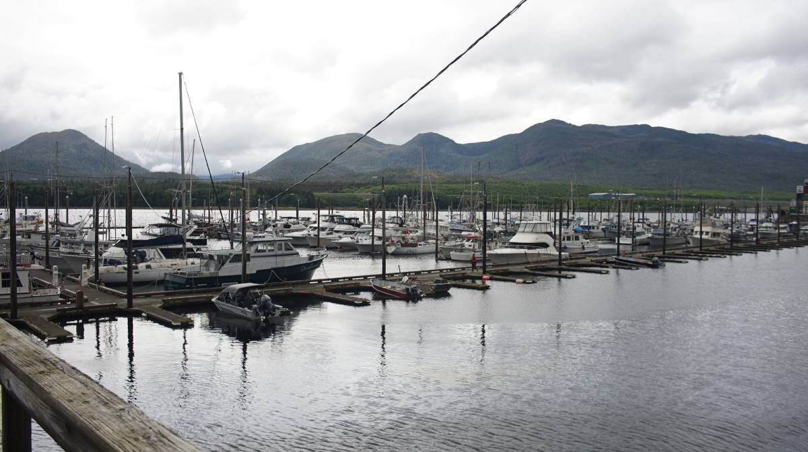On arrival, we had to report our arrival to the CBP by phone, we had purchased a data/voice plan for our dumb phone, we had data, but couldn't make calls. We knew we could report our arrival via an app(Roam), but again, our hardware was at fault, no device we owned could support it. The only way to tell them that we'd arrived was to step off the boat and to find a phone. We walked to the harbormaster's office, explained our situation and made the call. The CBP requested that we walk to their office downtown to finish the check-in process, a 45-minute walk away. The harbormaster was heading home for the day, she graciously offered to drop us off at the Federal building. The federal building was salmon-colored, nested at the heart of downtown Ketchikan. Checking in was painless, the officer did not ask about fruit or vegetables onboard, in fact, they weren't going to come aboard at all. Books we had read warned us that the Ketchikan CBP would always board visitors on arrival, maybe they didn't want to come to the boat because of how late it was. They also didn't care that we didn't use the app, "our phone is too dumb, and our other devices are too old," we said. "I don't like having a computer in my pocket, so good for you!" one of the customs officers said to us.  |
|
| We walked back to the boat, getting a good look at downtown Ketchikan all the while. There were a few neat looking shops, but most of them were there for the tourists. We must have seen 6 diamond shops. Thomas Basin and Casey Moran, two moorage options for transient boaters, lie in the shadow of the cruiseships, 2 were docked when we arrived. Our spot in town was far away, yes, but there were no cruiseships there, only working and cruising boats. We thought about stopping somewhere for drinks, but by then we were both tired and hungry.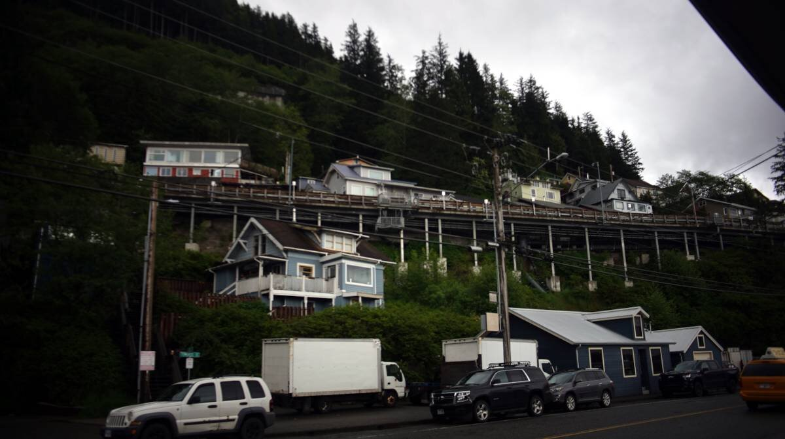The houses bordering the main road were all perched up high on the cliff slide, with very long wooden staircases leading up to them, with other horizontal walkways connecting the houses together. We loved the idea of a shared stairway. | |
| We arrived back on Pino at 1845, had a drink, ate some left-over chili, and exchanged our Q flag for an American courtesy flag. Our stay in this beautiful region had begun, a place where bald eagles were as common as gulls(gull syndicate had competition here). | |
| June 3rd | Ketchikan Today, we wandered through town to explore, but the cruiseship passengers had filled every worthwhile place. We thought of having a drink at a bar recommended by the harbormaster, but it too was over capacity. We returned home by way of the elevated back streets, a better route than the one bordering the busy main road. We shared a Guiness zero on Pino instead. |
| The wind picked up after dinner, blowing at a steady 35 kn. It screamed all night. | |
| Week 6 | |
| June 4th | Ketchikan Another blustery day greets Pino and crew today. We stayed at the dock longer than planned to wait for it to calm down out there. The wind sounded like it was stronger than 35 kn, the boat heeled, pulling on its tethers, and the rain was constant and heavy. We noticed today that water was making its way past the glassed wooden ring on deck for the woodstove. Devine went outside and squirted Life-Calk into all of the visible cracks(it cures even when wet). Unfortunately the Life-Calk we had was a nasty brown color, it appeared as though we had permanent mud stains on deck. |
I braved the heavy rain and strong winds to go to the grocery store. I was wearing my waterproof jacket and boots, but I ought to have worn my waterproof bibs too, the pants I was wearing soaked up all of the rain. 5 minutes out there and it was like wearing clingwrap. When I removed my hood in the store, the wetness still clinging to it cascaded down my shoulders before accumulating into a big puddle at my feet. As I progressed through the aisles, rivers formed at my heels. On the walk back home, my backside, that had so far been spared because of the orientation of the wind, now too got a thorough wettening. My wet look was now complete. On the walk back home, my backside, that had so far been spared because of the orientation of the wind, now too got a thorough wettening. My wet look was now complete. |
|
I was feeling low today, I blamed the wind and relentless heavy rain. It was June 4th, the start of warmer weather in the Salish Sea, but the gloom and cold had not left this part of the world yet. This was the sort of weather common in Victoria in late winter, "we won't have a proper summer this year," I had said to Devine when planning this trip in early winter, we knew then and we know now, but the gloom bug hit us hard all the same. The rain was too heavy, a walk outside would not be pleasant, even with rain gear on. I missed the sun, I missed solar cooking, too. This dip in mood was likely temporary, but the prospect of once again sailing in the rain tomorrow was not exciting. I missed the sun, I missed solar cooking, too. This dip in mood was likely temporary, but the prospect of once again sailing in the rain tomorrow was not exciting.An icon of Ketchikan is the rainbird, the rainbird stoically endures Ketchikan's prodigious rains. |
|
| June 5th | Ketchikan Guess what? We're still in Ketchikan! Yesterday's forecast puzzled me, the wind was still gusting in the upper 30's everywhere, but not in our weather area. "Suspicious," I said, and I was right to be. In the morning, the 20 kt winds had climbed to 25 kts with heavier gusts. It was raining heavily still, too. "Fuck it," we said, "we're staying put." The rainbird's moroseness was infectious. The weather was unstable everywhere, going out didn't seem like the best idea.  |
| We prepared cornpone for lunch, then we braved the rain to visit the hardware store to buy some compressed wood bricks for our woodstove. We purchased a box containing 8 large bricks. These wouldn't fit into the belly of our tiny stove as they were, we would have to split them. When splitting compressed wood bricks, the goal is to split them while simultaneously not allowing them to crumble to pieces. For now, we stashed them in our aft cockpit locker. We'd find a time and place to make cuts later. | |
| The rain continued all day, at around 0200 it fell so hard it woke us up. | |
| June 6th | Ketchikan to Snug Cove Departure day! The wind was 15 kts out of the southeast. There was a bit of current when backing out of our slip, but we were able to keep Pino centred and away from other boats. As we exited the Bar Harbor breakwater, we sailed at a pleasant 4 kts, then as we exited Tongass Narrows we installed the whisker pole to run wing-on-wing. As we passed the outermost island at the north exit, we spotted 2 cruise ships heading towards Ketchikan. Shit. We did our best to move out of their way, but the wind had chosen this terrible moment to abandon us — in truth, we were at fault, we had, by inattention, sailed into a wind shadow. Luckily, the two cruise ships soon turned their bow away from us. |
| As we glided deeper into Clarence Strait, the wind returned. The further we progressed, the more the waves rolling in from Dixon Strait lessened. We aimed to anchor in Snug Cove, a 35 NM sail away from Ketchikan, our cruising speed on this stretch ranged from 6.2-6.5 kts. As soon as we rounded Tolstoi Point, halfway up Prince of Wales Island's east coast, the wind vanished, and so we awoke Calcifer and motored to the entrance to Snug Cove — a place, that we hoped, would live up to its name. |
|
The narrow entrance to Snug Cove was bordered by a few reefs, but the charts appeared correct. We tucked in behind a small island and anchored in 9m (30 ft). We will likely stay here tomorrow, to wait for good wind to propel us northward to Exchange Cove. Calcifer II has performed well lately, the fuel-resistant teflon tape we applied to the threads of the bleed screw have stopped the fuel leak. I refilled the engine head with oil last night. Hopefully, our little engine will continue to do well. Calcifer II has performed well lately, the fuel-resistant teflon tape we applied to the threads of the bleed screw have stopped the fuel leak. I refilled the engine head with oil last night. Hopefully, our little engine will continue to do well. |
|
| We ate Japanese curry for dinner, topped off with some pickled turnips and beets — one of our favorite lacto-fermented vegetable combinations. We had only consumed 2 1L jars of pickled goods so far. | |
| June 7th | Snug Cove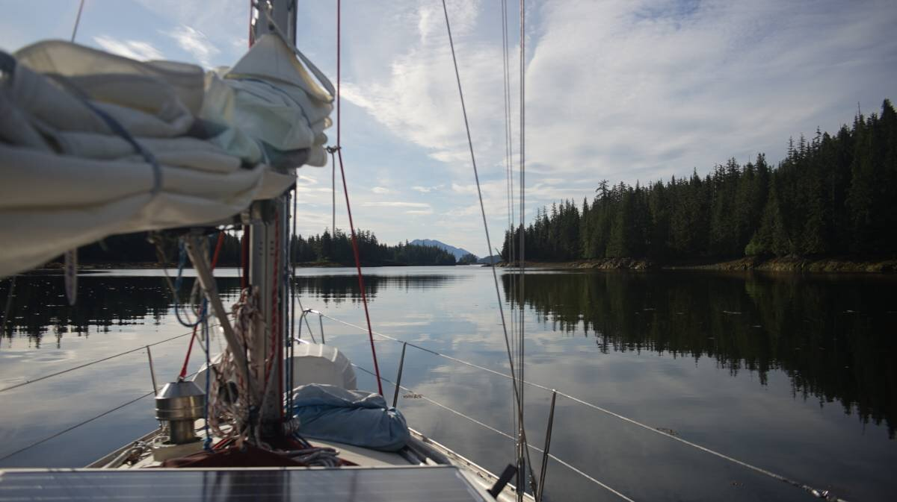A peaceful night at anchor, Pino was snug, and so were we. The wind was down all night. We often think about how much people have to pay to be allowed to just... exist. Money for shelter, for food, to spend time in nature, it never ends. On the water, we can choose to lay the anchor down almost anywhere, and that's it, we are tethered to the ocean floor with no bills to pay. We can stay as long as our supplies last, we can leave whenever, and that's a comforting thought. The well-being of a person ought not to depend on whether or not they have a full wallet, self-worth ought not to be measured by it, either. |
| We were alone in this bay, most of the bays we've stopped at have also been empty. We only had companions in Foggy Bay, Millbrook Cove and Fury Cove... and that was only ever 1 other boat. We shared anchorages with birds, mostly. | |
| I placed my cup of coffee on top of the woodstove to preserve its warmth. We were fine at night when sleeping, but the ambient temperature in the cabin was very cold. I thought that a north wind would bring some sun, but it hasn't. We think we have fixed the leak on deck, but we won't celebrate until after a good rain day confirms it. The deck iron looks awful with all of the caulking, but an ugly thing that doesn't let in water is better than a beautiful thing that does. |
|
| I spent time studying options for our path north, but all of the routes appeared difficult. This part of Southeast Alaska led to a bottleneck with many possible routes north, each route had its particularities. One option required backtracking and heading into Chatham Strait, another meant going through Rocky Pass(a narrow, shallow, badly-charted, reef-encumbered pass with lots of current) and the last meant going through Wrangell Narrows(an area with lots of traffic, current, shallows, etc). We didn't like the idea of back-tracking, and because we feared Rocky Pass was too shallow for our draft we chose Wrangell Narrows, even if it meant having to share the path with larger, faster boats. Cruise Ships were gigantic (nearly 300 m | 1000 ft long). There was really no land vehicle equivalent to a cruise ship. It was intimidating to encounter one on the water. Imagine for one second that you're driving on the road, then a giant thing on wheels suddenly arrives behind you, fast. Because it has the right of way, and that it has limited maneuverability, you have to make sure you're not in its path.  To make matters worse, these intimidating beasts always have very cutesy names, like Sapphire Princess. To make matters worse, these intimidating beasts always have very cutesy names, like Sapphire Princess. |
|
| I cut one compressed wood brick into more digestible bite-sized bits for our woodstove. It took a while, we weren't meant to cut those things. I started by making shallow cuts with a handsaw, sized to the pieces that I wanted, then I used a hammer and chisel to break them off — some pieces required additional convincing. Good thing no one else was anchored with us, it was not a quiet affair.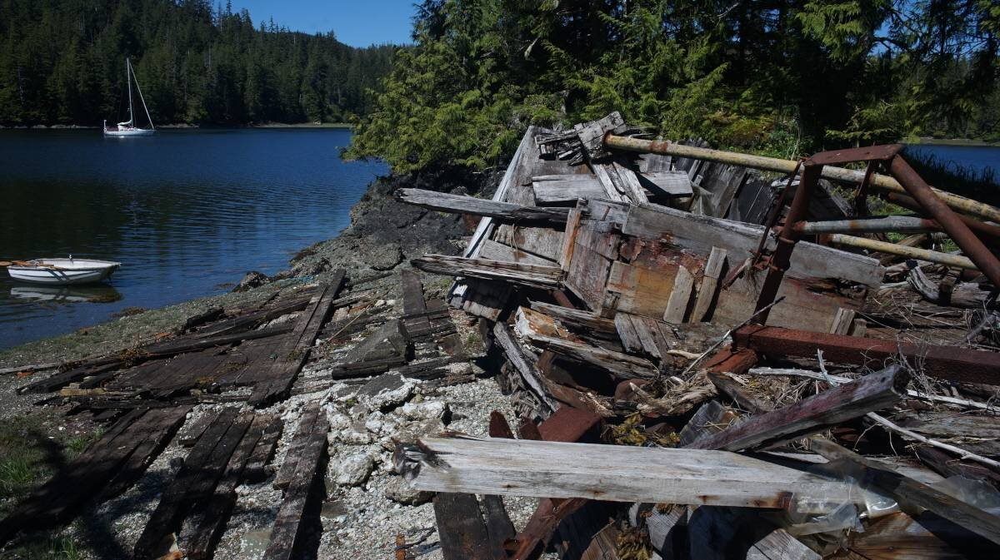After splitting one whole block, I made mac and faux-cheese for lunch. After that, we put the dinghy into the water and Dev went for a row around the bay to explore it. Devine spotted a wreck on the small island occupying the middle of the bay, a very old wooden motor boat, split in two, with rusty innards. Devine sifted through the wreckage, they found an old breaker panel, a hammer, and a bullet casing. The engine was still whole, but it was so red and rusty that it appeared as if it had been battered and deep fried.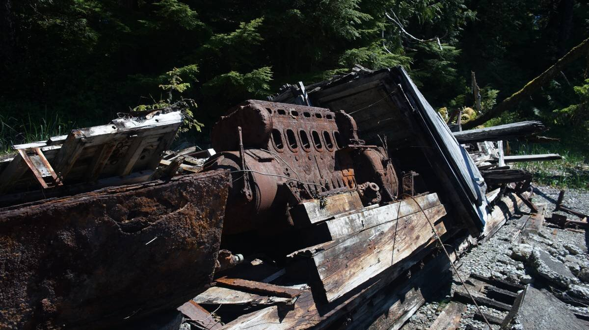 | |
| The sun returned! I solar-cooked some chocolate chip cake. Later, I roasted some sunflower seeds to throw over the pad thai I would make for dinner. I missed solar cooking. I went for a row after dinner. The only wildlife I saw were clams spitting jets of water at low tide. On the way back, I noticed Pino had an algae beard, so I proceeded to trim it off — sorry Pino, no beard for you. A beard costs us speed, your bottom has to be smooth, smooth. We hoisted the dinghy back on deck at 2000, getting Pino back into sailing mode for tomorrow's transit. |
|
| June 7th | Snug Cove to Ratz Harbor to Snug Cove Another beautiful morning. We hoisted the anchor back aboard, and motored out of the anchorage at 0700. We left at low tide, the pass was much narrower, but fine for our draft (we had 5 m | 17 ft under the keel). Unfortunately, once into Clarence Strait, the wind was not there to greet us. The forecast had changed to a variable 10 kt wind, but the report assured us that it would settle back into the southeast in the early afternoon. We raised Pino's main anyway, ready to harness any passing breeze, but Calcifer II had to do most of the work. |
| There was a very strange optical phenomenon happening on the horizon all around us. We couldn't understand what was ahead or astern of us, "are you seeing this?" I said. It was a comfort to know that these strange visualizations weren't due to quirks of our vision. The land was distorted, mountains and trees were stretched and/or compressed together, on occasion some would appear inverted. We later learned that this was a type of mirage called a Fata Morgana. This type of mirage "occurs because rays of light bend when they pass through air layers of different temperatures in a steep thermal inversion where an atmospheric duct has formed."[Source]. |
|
The wind only rose out of the southeast at 1130, we were still 30 NM away from our planned anchorage. It was evident that we would not make it in time before the current switched direction at 1500. We thought that the increase in wind would permit us to make it to our backup anchorage, Coffman Cove, but even that seemed unlikely, so we aimed to stopped in Ratz Harbor.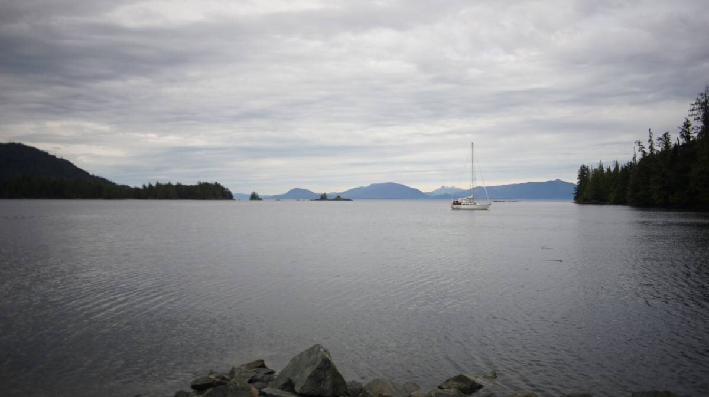The southeast wind carried us all the way inside, we doused Pino's wings and went to anchor in the southern portion of the bay. The anchorage was deeper than we were used to, but we didn't have many options today, the depth would total 19 m (63 ft) at high tide. It was our first time having this much rode out(we put out 64 m | 210 ft). Unfortunately, after setting the anchor, I stepped on and destroyed my favorite pair of sunglasses. The frame cracked, and the left lens popped out and fell overboard, joining our anchor in the depths. I had often boasted about how even after 5 years, I had managed to not lose, or damage this particular pair, but now their time shielding my eyes had ended. So long sunglasses. |
|
| When we arrived, the wind was blowing from the head of the inlet, but the holding seemed good. We had a good view on Clarence Strait from here, it would be useful to gauge the state of the wind out there.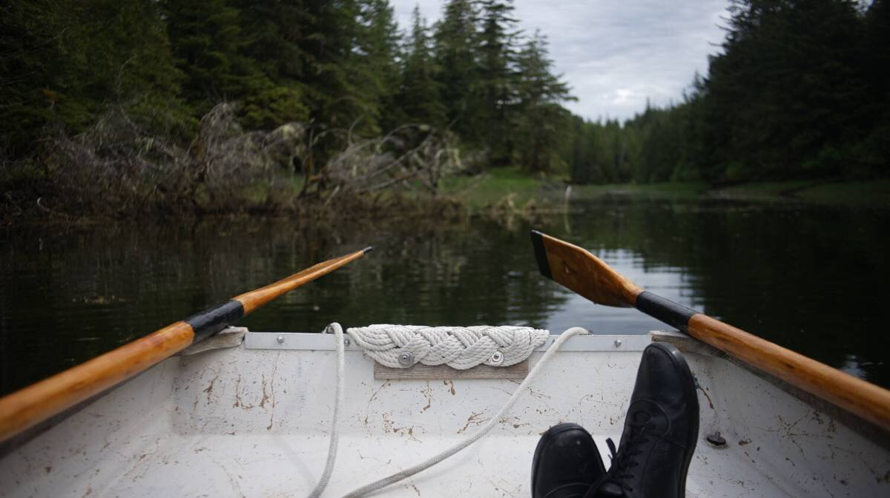Devine hopped into the dinghy and went for a row around the bay. Their return home was always evident, marked by the sound of the dinghy oars cutting through the water. While ashore, Devine found old bullet casings(winchester .243), but was disappointed to find that a road lay nearby.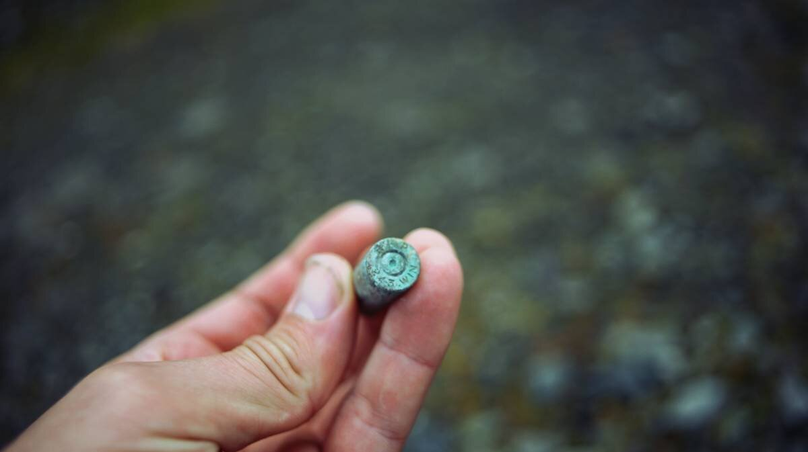 | |
| We worked on our respective projects until we noticed that our position at anchor had changed. The anchor was still buried in the mud where we had dropped it, but we were now facing toward the opening of the bay. We went outside and saw that the wind had switched to the north. We hoisted the dinghy back on deck, as we did this the wind began to increase, putting us stern to shore. The head of the inlet was very narrow, and with 33 m (110 ft_ of rope rode out, Pino was swinging far, very near the shore. We had anchored here because we thought the wind was going to stay in the south, it hadn't. Our anchor was set well, but we were concerned that the weather would increase. We began lifting the anchor, with plans to leave this accursed bay, but our fears were realized because the weather did increase. Retrieving a 15 kg (33 lbs) anchor along with 30 m (100 ft) of chain and 30 m (100 ft) of rope rode, was not easy in conditions like this. Devine had difficulty keeping Pino pointing into the wind, making it harder for me to hoist in the rode. Devine motored ahead to try and ease the tension on the line, but then the line was pointing straight back, we couldn't understand why, and I couldn't do anything. Devine had stopped going forward but the rode was still running along the side of the boat, pointing backwards. After a few moments of hectic experimentation, the line was freed and Pino was swinging at the end of the rode again. Oof. Devine continued to motor forward, only giving little pushes at a time, permitting me to hoist in the rope rode. But when there was about 6 m (20 ft) of rope left to hoist, I had to stop. My arms were on fire. At that point I was hand-lifting a lot of weight. I wrapped the rode around a cleat, then rushed to the cockpit to grab my rope loop to make a prusik knot on the rode. I used the technique described in detail in no windlass to pull up most of the rode. When there was 15 m (50 ft) left to hoist, I did the rest by hand so Devine could focus on steering Pino away from the shore and its sharp rocks. I hoisted the anchor up, secured it, and we got the fuck out there. |
|
| We knew we could anchor in the northern portion of the bay, but we weren't sure if the wind was going to stay in that direction, we didn't want to have to do another emergency anchor rode hauling again... not so soon. Because the wind was coming out of the north, and that the tide was running south, we decided it best to return to Snug Cove, even if it meant losing 15 NM of progress. It was 1600 by then, we'd arrive late in Snug Cove... but at least we knew the anchorage well. It didn't feel good to lose progress, but this was the safest option. My arms were killing me, I had a hard time bending my fingers, they felt stiff, and achy. My right forearm appeared swollen. | |
Unfortunately, we had waves to contend with out there, especially in the area where Ernest Sound meets Clarence Strait. The waves were throwing us around, turning our ride south into a messy and uncomfortable affair. The water was erratic, we were tired, we didn't want this, we didn't need this. We felt trapped, with the world hellbent on making our lives more difficult. We knew this was just nature being nature, the sea was governed by a complex network of unseen hands, it wasn't malice, but we had to direct out anger somewhere. Devine raised the mainsail, I usually do this, but because of the state of my arm we thought it more prudent. Even with the mainsail up, the motion was awful, downright inelegant. "Is this how you boat?" Pino asked. "No," we'd say, "but whatever, just get us to Snug Cove Pino." We had to motor to make progress, the opposing waves reduced our sailing speed too much, then the wind lessened and we needed it all the more. Devine raised the mainsail, I usually do this, but because of the state of my arm we thought it more prudent. Even with the mainsail up, the motion was awful, downright inelegant. "Is this how you boat?" Pino asked. "No," we'd say, "but whatever, just get us to Snug Cove Pino." We had to motor to make progress, the opposing waves reduced our sailing speed too much, then the wind lessened and we needed it all the more.I felt terrible. When sailing in new waters, we usually make a point of never anchoring in exposed locations, especially in deeper waters... but this hadn't been a planned stop. We knew we'd have to break our rules sometime. We got the anchor up, yes, but it was hard, I got hurt and Devine couldn't operate the winch full time to help me raise the anchor while steering the boat. I wish we hadn't experienced this event, but it also taught us that we could get ourselves out of a lee shore in deep waters without a windlass. We didn't enjoy it, it was stressful as fuck, but it was possible. |
|
| Devine made the bed as I steered us near Tolstoi Island. Then, we switched roles, I went to pull the main down while Devine took the helm. We motored towards the entrance to Snug Cove, "back so soon?" it seemed to say. At 1940, we dropped anchor in the same spot we were at this morning. Devine made a lovely fire, we ate ramen, had beer, watched a film and went to bed. Fuck you world, lights out... | |
| June 8th | Snug Cove We got up at 0830 today, we were both very tired. My fingers were still sore, Devine's arms were sore too. Both of us needed a day of rest. |
| Snug Cove was calm as always, the wind never came from a stable direction, Pino has pointed everywhere today, spinning on their anchor, restless, annoyed to be bound to the earth yet again. Our Pino knows though that we only have so much energy to expend in a day, if we spend it all continuing is foolhardy, dangerous. Rest days ensures that Pino sails sooner. | |
| We will take a break from Clarence Strait tomorrow, we think, and head into Ernest Sound to anchor in Frosty Bay. My mind has been cluttered of late, filled with names of future anchorages, their upsides and downsides, all the possible routes we could take, the tides, the current, the wind directions and how they can turn a perfectly calm anchorage into a hellscape. Hopelessly cluttered. Sometimes, just taking another path, one I had not yet considered, removes the clutter instantly, because I haven't had time to hoard information yet. |
|
| We had small periods of sun today. Our lives remain bear-free. We had popcorn in the evening, a good way to end our day of rest. | |
| June 9th | Snug Cove to Frosty Bay The sky was grey today, southeast winds always bring rain. We left at 0900, the tide turned later today, permitting us to sleep in. We left Snug Cove at low tide again, but it was lower than last time, we had 4 m (12 ft) under our keel(there was 5 m | 17 ft last time). The rocks bordering the channel hugged the passing water, reaching for our little vessel. The forecast had called for 10 kts in the morning, increasing to 20 kts in the afternoon, but we had a solid 20 kts. We made our way through the reefs and raised our mainsail in the lee of Tolstoi Island, then, we hopped into Clarence Strait, yet again. The waves were not small, but despite them we made good progress. We crossed over to Ernest Sound in 45 minutes, going at 7 kts the whole way. It wasn't a relaxing ride, but it got us into tamer waters faster. The wind lessened, but did not stop, we were still sailing, aided by a few passing squalls. We ate warm soup for lunch, it helped us endure the growing cold. |
| The wind and rain were in our faces now. The wind was rolling over the hills from Behm Canal, it only lessened once past Eaton Pt. Once past Change Island, we had help from the wind again, not enough for good sailing, but it added 1/2 a knot to our motoring speed. We saw other boats on AIS, but they weren't aiming for the same anchorage. A boat behind us turned into Santa Ana inlet, while we headed to Frosty Bay, alone. We'd read that seals enjoyed laying on the rocks near the entrance to the bay, but we saw none, how sad... we had hoped for a ruckus. We dropped anchor in 18 m (60 ft) of water at high tide(highest tide), making sure to stay far from shore to avoid another Ratz Harbor incident.  |
|
| Devine prepared coconut curry for dinner, a hearty, comforting dish. | |
| Week 7 | |
| June 11th | Frosty Bay The forecast called for a northwest wind, we wondered if the wind would make it in here. For now, the bay was calm, devoid of wind... and seals(still). The forecast called for a northwest wind, we wondered if the wind would make it in here. For now, the bay was calm, devoid of wind... and seals(still).The scenery was lovely, we were tucked between mountains, a mooring ball guarded the shallow end of the bay. We had to anchor in deep waters yet again, the shallower areas were too close to shore. We will spend the day here. |
| The southern part of Southeast Alaska resembles British Columbia, but with more distance between anchorages, and more difficult sailing and navigating. It is less wild than I expected, with marinas tucked into many bays, even in remote places, with cruise ships going through the area all day. They moor in Wrangell, Hoonah, Sitka and Juneau. Restocking is easy, we haven't had to dip into our extra water bins yet, we still have plenty of fresh vegetables with many opportunities to replenish our stores. | |
The wind here appeared to be a bit fickle, it changed direction and strength often during our 2-day stay. The sun came out after lunch, so I went outside to cut up some more kindling. While at the dock in Port McNeill, Devine split 5 logs into smaller lengths for our woodstove, but we always have to cut them down again so that they fit inside the firebox of our stove. The logs were all split, but we had a bag-full of uncut kindling. The days have been cold, so we've been running the woodstove often. Our woodbox in the aft locker was half empty, so I went to work cutting the kindling in half with a hacksaw, while Devine went out for a row around the bay. They went to visit a lonesome cabin which hosts guests in the summer(people can book time in the cabin). Inside was a heater, bear repellant, beds, an outhouse, and other necessities. Devine signed the guestbook; only one other boat had signed it this year. Some of the entries were dated back to the late 90's. They went to visit a lonesome cabin which hosts guests in the summer(people can book time in the cabin). Inside was a heater, bear repellant, beds, an outhouse, and other necessities. Devine signed the guestbook; only one other boat had signed it this year. Some of the entries were dated back to the late 90's. |
|
| June 12th | Frosty Bay to Berg Bay It rained all night, we learned that we had not resolved the leaky deck iron issue. Fuck fuck fuck. We went outside and squirted more Life-Calk into visible crevices, hoping that it would help. The rain dripping inside is wetting the woodstove, it could cause it to rust... It rained all night, we learned that we had not resolved the leaky deck iron issue. Fuck fuck fuck. We went outside and squirted more Life-Calk into visible crevices, hoping that it would help. The rain dripping inside is wetting the woodstove, it could cause it to rust... |
| We bailed rain water out of the dinghy and hoisted it back on deck. We had 2 hours to wait before we could leave because of the tides, the tides... the tides. We have to be patient with the tides. It was cold out today, Berg Bay, our planned anchorage, would probably be colder. "Do you remember the Shire Mr. Frodo?" Devine asked me. There are times when moroseness takes hold, it is not possible to find beauty in the world, even when surrounded by wonders. Anxiety obliterates beauty, it buries joy. Both of us were aching for quiet, warm water. "Eat your lembas bread Mr. Frodo, we've got miles to go yet."  |
|
| At 1100, we pushed off and headed towards Berg Bay, 15 NM away. South winds helped push us to Point Warde, permitting for some lovely wing-on-wing sailing. After the point, the wind became too erratic to sail with, coming from too many different directions. We had to motor past Anan Bay, and then past Blake Island. When in the last stretch south of Berg Bay, we noticed the water had turned a jade color. Some current was fighting us, we attributed this to snowmelt. The change in color happened suddenly. | |
We could see our anchorage ahead, with its small islets guarding the entrance. As we got nearer, beautiful snowy mountains lined the horizon. We saw that one motor boat was already anchored in Berg Bay, at the head of the anchorage. Motor boats often like to cruise in groups, and when they arrive somewhere they take up most of the room. We were glad to find only one other occupant today. A light wind was blowing from the head of the inlet, we anchored behind them in 19 m (65 ft). |
|
| The wind turned later, blowing from the entrance. I hate when the wind switches shortly after we've arrived — Chill Frodo, chill. I mended a few holes in a wool sweater. All of my quality sweaters were fragile, trying to keep up with the deterioration was like trying to shovel while it was snowing. I also fixed my fleece sweater, the zipper had parted from the material. We continue to layer on many clothes when sailing, but less than when we started this trip. We had to shed a few layers when sailing today when the sun made an appearance. |
|
| We are not sure if we're going to stay tomorrow, or not. We'd have to get up at 0530 if we hoped to make it to Wrangell. In the upcoming part of Blake Channel, the flood tide from the south meets with the flood from the north, meaning that we have to leave with the slowing flood in time to catch the other as it switches. | |
| June 13th | Frosty Bay to Wrangell The alarm rang at 0530, we snoozed for 15 minutes, then our bodies slid out of the sheets before our minds had time to realize what had happened. We had decided to leave today after all. On came the clothes, the chartplotter's screen dazed us with its brightness, the depth sounder let out its usual two beeps to let us know that it too was ready to face the day. I walked to the bow, foggy-brained, and began to pull up 64 m(210 ft) of rode. Berg Bay's bottom had not had much time to get acquainted with our anchor. At 33 m (110 ft), I attached a prusik knot, and we proceeded to haul in the rest with the help of a cockpit winch. It was tricky to pull up the anchor by hand in deep waters, when holding all of that weight the pull was monstrous, it was like the seafloor wanted to come up to meet us. |
We left Berg Bay under a clear sunny sky — the sun rises early in this part of the world. We motored towards the narrows, aiming to arrive at slack. It was interesting to be in a place where the current reverses like this, it permits a sort of hack where we cheat time. The flood ought to have ended at 0645, but because of the reversal we could ride a double flood and arrive to Wrangell early(instead of at noon, with a regular flood). We made it to the narrows on time, then the north-going ebb pulled us in and carried us further north. The scenery on the way to Wrangell was very beautiful, we got to see many more snowed-in mountains. Because the skies were clear, we could see their summits, at times the sun reflecting off the snow burned my eyes. We made it to the narrows on time, then the north-going ebb pulled us in and carried us further north. The scenery on the way to Wrangell was very beautiful, we got to see many more snowed-in mountains. Because the skies were clear, we could see their summits, at times the sun reflecting off the snow burned my eyes. |
|
| We saw the color of the water change yet again, as the Stikine River water met with Sumner Strait. We could see the tideline clearly, the difference in color made the divide evident. We crossed into lighter-tinted water again, and began to see boats, many boats! A cruise ship was near the terminal but was not docked, it appeared to be idling on the spot, unmoving. We made sure it wasn't moving because we had to cross its bow to get to the marinas. Tourists watched us from the deck as we moved past, others were boarding shuttles to get to shore and back. | |
| When nearing Etolin Harbour, I looked with binoculars to see if there was room on their transient float. It was full. We turned away and went to check out Heritage Harbour instead. There was plenty of room for us there, and for many more boats .Much of the boats here were rugged, expedition-type boats, made to endure ice, and cold weather. Aside from us and another small fibreglass sailboat, we were surrounded by larger, heavier vessels. Both of us were starving, we planned to make lunch before visiting the harbour master's office in Etolin Harbour to check in. We were meant to report our arrival to the CBP right away, but like in Ketchikan, our phone would not permit it. My plan was to, yet again, ask to use the phone at the harbour master's office. We suddenly heard a knock on the hull, a CBP officer was there, they had likely spotted us on AIS. We explained that we had not yet reported our arrival because of our phone situation, he was cool about it, and even offered to check us in early for our arrival in Petersburg, since apparently he was responsible for the reporting requirements in both cities. We filled our stomachs with corn pone and chipotle peppers before going out. We ought to have looked at the map better, so we took the long route to the harbour master's office. After paying for our moorage, we stopped by the grocery to stock up on fresh foods. The selection was very poor, and the produce on the shelves was pallid, and soft. This produce would provide nutrients to no one ever. |
|
We got lost on the way back home, it extended our walk by a few miles, which was unfortunate because our backpacks were very heavy with supplies. We spent the rest of the day aboard, resting, mending more holes in our clothes and checking messages. Joy to the world! The crotch integrity of my favorite pair of jeans was restored! We watched the 3rd installment of Pirates of the Caribbean, a film, like with the produce from earlier, that is enjoyable, but that does not offer much nourishment. |
|
| June 14th | Wrangell A quiet day in Wrangell. We woke up to another windless day, with full sun. It is almost like being in the Southern Gulf Islands during the summer. I repaired the end of our whisker pole today, the snap mechanism was broken, the spring inside was corroded and the fix I had attempted a few years ago did not last. We have since run the jib sheet line through an attachment point at the end meant for the topping lift halyard, but it was a tight, tight fit. Today, I made a rope loop using a double fisherman's knot and ran it through that same attachment point. The rope loop line is thin, so it doesn't interfere with the halyard snap shackle. When we want to set up the whisker pole, we put a carabiner through the rope loop and snap it onto the jib sheet. A good fix. A quiet day in Wrangell. We woke up to another windless day, with full sun. It is almost like being in the Southern Gulf Islands during the summer. I repaired the end of our whisker pole today, the snap mechanism was broken, the spring inside was corroded and the fix I had attempted a few years ago did not last. We have since run the jib sheet line through an attachment point at the end meant for the topping lift halyard, but it was a tight, tight fit. Today, I made a rope loop using a double fisherman's knot and ran it through that same attachment point. The rope loop line is thin, so it doesn't interfere with the halyard snap shackle. When we want to set up the whisker pole, we put a carabiner through the rope loop and snap it onto the jib sheet. A good fix. |
| We returned to the grocery store to pick up a few extra much-needed items, and to try and dispose of our aluminum cans responsibly. Ah, Southeast Alaskan ports, with oil disposal facilities near every exit, but disposal of cans requires walking for 20 minutes, finding the hidden bin near the grocery store at the far end of the parking lot(had there been any cars, it would have been impossible to see it) — really though, I was glad that oil was disposed of responsibly, not providing those collection sites would result in careless acts. The city was well-equipped for getting repairs done, there was a boatyard, plenty of hardware stores, fabrication shops, etc. Speaking of fabrication, while in a public restroom, Devine & I both fixated on the design of the toilet paper roll holder. The design was simple, strong, and effective. In most public restrooms, the holders are made of cheap plastic, we loved that they had fabricated their own. If someone were to ask us what we think about Wrangell... "LOVE their toilet paper roll holders!" |
|
| Around 1600, we sat in the cockpit and enjoyed watching the eagles hound the fisherman just returning with the day's catch, they would find a perch near them and keep watch, waiting for scraps. One eagle tried to land on the masthead of a sailboat, we cringed a little when we saw its talons bite at the instruments mounted there, trying to find a comfortable foothold. In the end, it grew tired of trying and found a spot on a fishing boat rig. We've had plenty of time lately to observe eagles from up close, they're such beautiful birds, although they seem to rely on local fishermen a lot for food. | |
| Once the sun was lower in the sky, I went to work trimming Pino's algae beard again. On our last haulout, we picked a different type of bottom paint. We regretted it, because it was not as good at discouraging growth. When I finished, Pino wasn't clean shaven, but there weren't as many visible green strands. We leave tomorrow for Deception Point Cove to stage our passage through Wrangell Narrows to get to Petersburg. |
|
| June 15th | Wrangell to Deception Point Cove Up at 0600, gone at 0730. On the way out we stopped at the Etolin Harbour fuel dock to fill 3 x 20 L bins. The waters were calm when we left the dock, we motored over smooth, jade-colored seas until we reached Neal Point on Vank Island, the west wind was curling into the pass between it and Zarembo Island. We raised the mainsail and let Calcifer go back to bed. The forecast today had called for 10 kts out of the west, but we had about 15 instead. We tacked into the wind all the way to Point Alexander, at the southwest end of Mitkof Island. The mixture of American and Russian names, we thought, was very amusing. |
| The sun was with us, we didn't have to wear many layers today, but the wind was still cold. We arrived at Deception Point Cove at 1600, it was a long day on the water. Sailing to weather always means a long day on the water. 21.8 NM ballooned to 40 NM. |
|
| The wind curled around the corner and into the anchorage from the south, but a reef helped to diminish some of the wavelets. This bay was shallow with a mud bottom, we anchored in 3 m (10 ft) of water — how lovely. Space in the bay was restricted by two large logs tethered to the ocean floor, left there for securing log booms. A fishing boat joined us at anchor a few hours later. | |
| June 16th | Deception Point Cove to Petersburg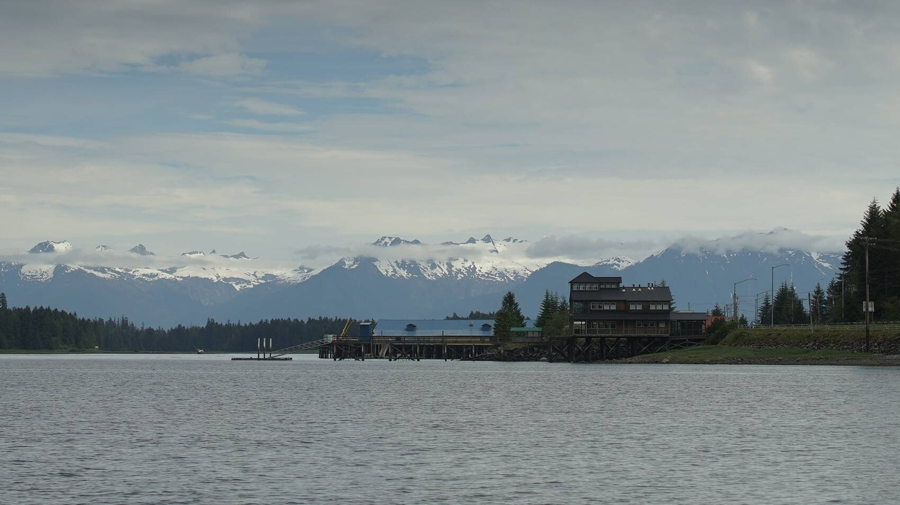We left Deception Point Cove at 0700, the fishing boat was already gone. Lifting the anchor in this kind of depth was very easy! We pulled a chunk of sticky grey mud, as well as some algae. The mud was so sticky that I had to clean it off the fluke so I could secure the anchor properly, the accumulation was keeping the anchor too far forward on the bow. |
A lot of tug boats towing large barges, commercial fishing boats and large passenger ships(like the Alaska ferry) use Wrangell Narrows. Some parts of the narrows were very constricted, and if a large ship was coming through we would have to get out of its way. The goal of the game was to constantly look behind, or ahead, and if a big vessel was coming, it was time to find a place to duck out of the channel to let them by. As soon as we left the anchorage, we saw a tug boat on AIS, a big one, pulling a very big load. We kept an eye on it as we proceeded through the narrows. It caught up to us near Green Rocks, we moved out of the channel and into the bight just east of Christmas Tree Rock to let it pass. We knew that this area was ahead, it wasn't too shallow, it had few rocks, a very good place to idle. It was powering north at 10 kts, pulling a heavy barge carrying containers, and construction vehicles. The tug pulling it was gargantuan. We encountered many more boats in Wrangell Narrows, mostly small run-abouts, or medium-sized cruising or fishing boats. All of these were easy to deal with, as long as we kept to our side of the channel. |
|
| Like Blake Channel, this was the kind of channel where the current meets from the north and south between channel markers 44 and 50(what we refer to as the pinch, one of the narrowest points). To not have to suffer an opposing current, it was a good idea to time the northbound transit on the last of a flood. As the flood(south current) lessens to zero, if the boat is positioned where the north and south currents meet, the north current will start to ebb and carry us north. We knew we had to get to the pinch at 0940, we arrived at 0930. When you know your boat well, timing arrivals with precision is not too difficult, we always give ourselves a bit of extra time to make speed adjustments... because there is always something that happens that slows us down(like letting that tug pass). | |
| Once past Turn Point, as the land drew away, emerged a beautiful snowy mountain range just behind the city of Petersburg. With the port in sight, it was also time to call the harbormaster on the radio to get a slip assignment. It was possible to anchor at various points along the narrows, but we decided to push on. Slips in this harbor were not expensive. Like in Ketchikan, transient boats were assigned to slips that the owners had temporarily vacated. The harbormaster assigned us a spot on the south side of the south finger in North Harbor. We were glad that they had assigned us to the north docks, that way we were closer to the harbour master's office, where the showers are. We were dying for a hot shower, our last one was in Prince Rupert. Because we arrived at the start of a rising flood, some current ran through the channel leading to the docks, and affected our steering. We could feel a slight current pushing us sideways as we went down the row of docks, but it wasn't strong enough, not yet, on large tidal exchanges it would likely be very difficult to get to a slip. |
|
| After signing in, we took a short walk around town to take in our neighborhood of the moment. It was a really lovely place. We didn't get to see much because we had arrived on a sunday, many shops and restaurants were shut, the only business that was open was a small, very wholesome, road-side lemonade stand operated by two enterprising kids, a thing we thought only existed in Archie comics. The town has Norwegian roots, which explains some of the street names, Norway flags, and decorations around town, despite the fact that prior to their arrival, the land was already long occupied by Tlingit people. It was warm and sunny all day, but this may be the last that we see of this kind of weather, the greyness will return tomorrow. |
|
| June 17th | Petersburg to Ruth Island Cove The current today was turning at 1100. We had breakfast, then dug out the Pennyboard to use as a rolling carrier to ferry a 20 L bin of diesel from the gas station and back to the boat. The skateboard could only accommodate 1 bin, but it worked quite well. We tied a bungee around the bin and board to secure it, and used a sail tie to pull the bin along. It was like taking a very toxic pet out for a walk. Everyone that walked past smiled at us — at our ingenuity no doubt(we hope). The current today was turning at 1100. We had breakfast, then dug out the Pennyboard to use as a rolling carrier to ferry a 20 L bin of diesel from the gas station and back to the boat. The skateboard could only accommodate 1 bin, but it worked quite well. We tied a bungee around the bin and board to secure it, and used a sail tie to pull the bin along. It was like taking a very toxic pet out for a walk. Everyone that walked past smiled at us — at our ingenuity no doubt(we hope). |
| We prepared lunch early, because we thought it nicer to eat in port than underway. When we set off, we raised the main while in the channel, but the forecast called for light winds for today, and for tomorrow. Light light light. The Race to Alaska participants were feeling this lack of wind too, it had been the most windless year to date. Many had to forfeit the race, their pedaling devices were not designed for continuous use. Even Dixon Entrance was asleep. We passed 2 tugs boats with heavy loads, and we saw another sailboat on the water for the first time since arriving in Southeast Alaska. The sailboat could motor faster than us, we trailed behind, but could observe their movements on AIS. They too were aiming for the entrance to Thomas Bay. |
|
| Before we reached the Sukoi Islets, we caught a glimpse of our very first glacier, tucked between two mountains and rising high above the water-side hills. It was too far to photograph well, but we could observe it well enough with binoculars. There was something deeply hypnotic about glaciers, a reminder of a time now past. Many glaciers were now receding, leaving beautiful formations behind, but few in the area lay on the water. With augmented eyes, we saw spikes in the glacier. This wondrous sight disappeared once we passed the islets. | |
| The sailboat we had been tracking on AIS got to the Thomas Bay entrance 1 hour before we did. The pass to Thomas Bay was restricted, a lot of water had to exit through this point. We noticed that their motoring speed of 7 kts had been reduced to a painful 2.1 kts. "Hmmm..." we both said aloud, "not sure we'll be able to get through." We figured we'd go see for ourselves, it was possible that the boat had slowed for other reasons. Our main and headsail were up, some light winds added 1 kt to our speed and stayed with us through the pass. Our speed initially was 5 kts, it only decreased to 3.4 kts — not too bad. The sailboat continued into the north arm, bound for Scenery Cove, while we turned east and then south towards Ruth Island Cove. The current stopped messing with our speed once we were clear of the pass. When entering, it felt like we were in the South Pacific again, entering an atoll. There were sand beaches on one side, hidden reefs everywhere, sunny skies... the coniferous trees and snow on the mountains quickly dispelled that reverie. |
|
 It was a long way around Ruth island, the pass to the south could have brought us there quicker, if it wasn't for the strong likelihood of a grounding — a grounding would slow our progress to the anchorage. The long way though, was beautiful. Even if we hadn't entered the north arm towards what remained of Baird Glacier, we could see some ice stranded on land, as well as part of the receding glacier up high in the mountains. The water here was, again, a striking jade color, so opaque, so clouded, that there was zero visibility. The mountains here were very tall, and the ones behind the ones bordering the water, even more so. The tall mountains all had snow on their peaks, we could see many from the water. It was a long way around Ruth island, the pass to the south could have brought us there quicker, if it wasn't for the strong likelihood of a grounding — a grounding would slow our progress to the anchorage. The long way though, was beautiful. Even if we hadn't entered the north arm towards what remained of Baird Glacier, we could see some ice stranded on land, as well as part of the receding glacier up high in the mountains. The water here was, again, a striking jade color, so opaque, so clouded, that there was zero visibility. The mountains here were very tall, and the ones behind the ones bordering the water, even more so. The tall mountains all had snow on their peaks, we could see many from the water. |
|
| When nearing Ruth Island Cove, we noticed many crab traps had been set in the water. Many, close to 50. The water was flat, it was easy to see them, but we couldn't believe how many traps there were... it was like the bay was full of floating garbage. Crabbing season in southeast Alaska began after June 15th, we had heard this, but hadn't realized that this bay was a hotspot. We made our way through the traps, hoping to find a spot amongst them... we laid our anchor down, but depending on the direction of our swing, some of the traps were quite close. | |
| Week 8 | |
| June 18th | Ruth Island Cove A quiet day at anchor. Some small runabouts came by to either take, or add, more crab traps, it was difficult to say what had changed, we weren't paying close attention, although the 2 traps nearest to us had been untouched. A quiet day at anchor. Some small runabouts came by to either take, or add, more crab traps, it was difficult to say what had changed, we weren't paying close attention, although the 2 traps nearest to us had been untouched.The sun was with us again today, I was able to solar cook some seitan, potatoes, brown rice and some split green peas. Unfortunately, the split green peas got mushy because I left there in the cooker for too long after falling asleep in Devine's arms. We ended up making a sort of weird-but-delicious green pasta sauce with the peas. |
| Another sailboat joined us in the bay, the same one that had gone to Scenery Cove yesterday. They found a spot free of crab pots. A big fishing boat came into the cove in the afternoon to pull up a few traps, many which were encircling our neighbor. As the fishermen picked up their traps, we could hear them conversing with the sailors. The fishermen offered them crab, tossing it over to them. We smiled at this, people on working boats here are really very sweet, and generous. We didn't spend too much time outside today because the air was thick with horseflies. There were always 3 of them hovering near us. Whenever we killed one, another came to bring the number back up to 3. We weren't sure why there wasn't ever more aboard at once, having more around was certainly not what we wanted, but it was strange, as if that they too had agreed that more than 3 would have been unreasonable. When one fell, a replacement was never far, we had little respite between killings. |
|
| The wind tomorrow will be too light to sail, it looks like we'll be sticking around a little longer... | |
| June 19th | Ruth Island CoveDuring the ice age, a glacier covered the entirety of Thomas Basin — that is crazy to think about. When we entered yesterday, we sailed over where its outermost face used to be. Now that it has receded, the only proof of its advancement was a boulder and gravel bank. A look at satellite photos revealed what was left of Baird Glacier; it was still there, perched between mountains, following the valleys, thick and frosted. Wild. |
| Today, I solar-cooked some scrambled okonomiyaki(the pancake form didn't fit in the cooker). It took approximately 90 minutes for the batter to cook. I prepared the accompanying sauce on our gas range, and tossed some chopped green onions over top. This recipe has a long cooking time, it uses a lot of gas when cooked indoors. For every meal we solar cook, we extend the use of our propane tank. | |
| Devine went out for a row, doing their best to outrun the horseflies. They rowed past the southern point of Ruth Island, and went to see a house mounted on an anchored barge — a good setup in a very protected and scenic location, we wonder how they were able to do this. I went for a row too later that same day, by then the sailboat had left, but a motor boat took its place. I rowed around the cove, exploring all of the little shallow bights, trying to spot some birds. The flies were gone at this hour, I could relax and enjoy my time on the water without things trying to take chunks out of me. I returned aboard and found a cup of peppermint tea waiting on my desk — thank you Devine, my heart of hearts. | |
| June 20th | Ruth Island Cove to Portage Bay I woke up restless today, eager to move on. We stayed put until 1120, timing our exit with the ebb. The horseflies were around, ever-so-watchful, Devine was around too to keep them off my back while I raised the anchor. The forecast called for 10 knots out of the southwest, we thought this wind would help us get to Portage Bay, just a short hop away. When rounding Ruth Island, we spotted a gillnetter with a net in the water. This area was gorgeous, but it was also worked to death. |
| After rounding the top of Ruth Island, we took another look at Baird Glacier before the mountains swallowed up the scenery. The wind permitted for a bit of sailing, our mainsail was up, the jib was unfurled. Our angle was good for sailing out of the basin, but as soon as we passed the last pair of channel buoys, we had to start tacking into the wind, but 10 knots really wassn't a lot of wind when sailing to weather. We had expected the wind to come from the south, but it was instead curling from over the top of Kupreanof Island — this is what happens when we new to an area, our assumptions were often incorrect. | |
| We were only able to sail up to the Cape Strait light, then the wind went down but the waves were still up. We were very disappointed to have to motor the rest. We weren't going fast beating into those waves, this was annoying to us because we knew we had to get to the entrance to Portage Bay before the current turned. | |
| While motoring, we talked about Jean Cocteau's Les Enfants Terrible, a book I had just finished and that Devine had begun to read while underway. The ride was long, the book was short, Devine finished it before we arrived to Portage Bay. Two humpback whales were in our path, we weren't sure how to position ourselves to them, both were swimming ahead with the land laying very close to our port side, we slowed down and waited for them to make up their minds. |
|
| We arrived at the entrance at 1830, just in time to see another boat coming in... a sailboat! To our surprise, there were 2 other sailboats lying at anchor. So many sailboats! Of course, they had taken the more sheltered spots in the lee of East Pt, so we dropped anchor mid-channel in 12 m (40 ft). Our spot was slightly disturbed by small waves rolling in from the entrance, they soon diminished to ripples and then to nothing overnight. A brightly-lit fishing boat was anchored in the south anchorage, all by themself. | |
| June 21st | Portage Bay to Fanshaw Bay(Duck Point) The forecast changed to light northeast winds. Shit. "Whatever," we said, "we'll sail with whatever's out there." We were still restless, neither of us wanted to stay put today, and Portage Bay was not exactly noteworthy. When raising the anchor, we found many varieties of algae clinging onto the rope rode. The more rode I reeled in, the more kelp came up. The anchor had long lengths of algae tightly twisted around the fluke. I couldn't tear it with my hands so I focused on untangling it instead. Kelp is very, very strong, it's also not easy to untangle because of its slimy, slippery texture. We had seen a lot of kelp in the entrance channel coming in, it seemed like the bottom here was also full of it. |
| The current wasn't in our favor when exiting, we knew it, but if we waited for the turn we'd be leaving the anchorage at 1400, too damn late to get anywhere. We worked against 1-1 1/2 knots of current, luckily, the entrance channel was short, we re-gained our regular cruising speed soon enough. The kelp that had bordered the channel the previous day was not as noticeable at low tide, they were all bunched up against the east shore. The wind was indeed light out there, but we kept the mainsail up... | |
| The ride to Fanshaw Bay was uneventful, we crossed many tide lines, all marked by amassments of algae and debris. Our speed varied a lot when crossing these lines, it would slow or increase depending on the direction of rotation of the various back eddies. I wished we'd had notes on back eddies for this area, knowing where they were would have saved us a lot of pain today. We turned our bow towards Duck Point in Fanshaw Bay. I didn't want to go there, it was a deep bay and was relatively open to weather, but supposedly protected from the southeast and northeast. We had no other options, everything else was too far away, and we knew we couldn't get to any other anchorage in the area without good wind. |
|
| When at Cape Fanshaw, the wind picked up for a moment, we thought we could make it further, to Henry's Arm, but as soon as we shut the engine and pointed our bow toward it, the wind went away. Pino turned back towards Duck Point, south east of Whitney Island, dissatisfied with today's wind. Another frustrating day on the water. Frederick Sound's eastern half was just too damn sheltered. | |
| We anchored near Duck Point in 20 m (67 ft) of water (HW), just as the rain started. We shared an NA drink inside and made plans for tomorrow. Devine lit a fire to lift some of the humidity, we hadn't used the woodstove in a while. A fishing boat joined us at anchor, even if the anchorage looked open on a chart, we had a calm night here. | |
| June 22nd | Fanshaw Bay to Chapin Bay We left Fanshaw Bay at 0700, persuading more kelp off our anchor chain. Some light rain accompanied us, the sky was grey, there was no break in it, no way for the sun to peek through. A light breeze propelled us on. We decided to head towards Chapin Bay today. Initially, our speed was good, but it then slowed as the current turned against us. The favorable current was at night, waiting until it eventually moved back into the day would cost us a lot of time, too much time. We had thought of heading towards Tracy Arm, but the forecasts for the area appeared too quiet and we didn't want to have to motor too much. We figured we'd have more wind if we moved towards Chatham Strait. We had our eyes on Sitka now, motoring would be necessary in that region because of Peril Strait, an area with rapids. |
| The sea had adopted the same coloring as the sky, making them indistinguishable from one another. Our eyes could find whales, fish and seabirds quickly in this calm, anything breaking the surface of the mirror beneath us was known to us. A bit of fog rolled in later, masking the land around us. I read Beryl Markham's West With the Night aloud to Devine as they steered in the rain and gloom. Reading about Nairobi, lions, and hot sands warmed our flesh. I read to Devine whenever it wasn't my time to steer, taking shelter from the light rain in the companionway. |
The sun peered out a few times, but was quickly blanketed with a thick cloud duvet. During one short warm moment, the sun hitting the mini-bini(what we call our small bimini) was evaporating lingering moisture off of the fabric. At first, I thought the steam was exhaust, a lot of exhaust, I was about to panic before my nose confirmed to my eyes that it wasn't, "no panic no smell, none!" my nose reassured me. |
| When our destination was finally in view, it was encouraging, but it also took an awfully long time before we got near enough to it to note any changes in scale or perspective. Because it appeared not to change, the way there felt unending, like we were standing still. I always wondered if maybe the current had suddenly risen against us, had immobilized us. Spending just 5 minutes inside the cabin was time enough to allow our eyes to register a change. No, this wasn't limbo, we weren't dead. Time sped up when we were away from the helm. | |
| Some belated, but welcome, wind pushed us into the entrance channel. We rounded the spit of land and anchored in its protected waters. This place was beautiful, like all places we'd visited so far, but not in the same way. All had something that they alone possessed. This particular anchorage was bordered by tall mountains, one mountain was topped by a rock with a large hole in its middle — the eye of the mountain watches always. Unfortunately, like Fanshaw Bay, the water here was 20 m (67 ft) deep. After some miscommunication with Devine when setting the anchor, I pinched the index finger of my right hand between the chain and chain-stopper. The right side of my finger turned a dull, grey, rather dead color, the discoloration spread to the area under my nail bed. Yuk. |
|
| We kept hoping we wouldn't have to motor to every anchorage, but the wind in this area was too damn fickle. It was worrisome, we couldn't keep using the engine like this. Tomorrow, we'd wake up early to catch the tide out, and we'd sail as far as we could until it turned against us at 1530. | |
| June 23rd | Chapin Bay As planned, we got up at 0430, turned on the VHF radio to listen to the updated wind forecast for Chatham Strait. The wind was very light, and was meant to rise to 10 knots out of the south. This usually meant no wind, especially if it started from light... so, we returned to our warm bed. Pino and crew demanded more weather. |
| We saw many lion's mane jellyfish in this bay, their bright orange star-shaped dome and pink tentacles made them easy to spot in the water. They drifted past, content, unbothered by the absence of wind, the current was their highway. While trying to get weather data via our satellite phone as a test, I saw a small deer walking along the shore. There was a bit of wind in the early afternoon, but it didn't last. I tried solar-cooking some lentils, but I had to finish cooking them indoors because the cloud coverage got too thick. Sometimes, the solar cooker performs even with cloud cover, but it needs to be thin so that the dimmed sun can still shine through. |
|
| The forecast for the week looked bleak, wind-wise. Southeast Alaska was heaven for motor boats, hell for us. Calm weather was lovely when at anchor, but being forced to motor for hours on end was torture for us. This place was not a good playground for our vessel. | |
| Devine went out for a row around the bay while I continued fiddling with the SAT phone. I could not get it to receive data due to some confusion with the interface and account configuration. In the end, I was able to successfully download a GRIB file. GRIB files weren't useful in protected channels, but would be useful when sailing south down the west coast of Baranof Island. Contrary to the VHF forecast, one of the wind models seemed to indicate wind for tomorrow, light in the morning and building to 10-15 knots out of the southwest throughout the day. Ideal. We weren't sure which weather authority to trust, but we would give it a shot. We needed some calm to round the southwest corner of Admiralty Island before sailing north into Chatham Strait. Frederick Sound was often devoid of wind anyway, we expected to have to motor to the corner to catch a worthwhile breeze. We hoped the wind would be there to meet us, otherwise we would have to find an anchorage to duck into, burning more diesel all the while... burn burn burn. | |
| That evening, we played a memory game, then went to bed at around 1000. The sky was still somewhat bright at that hour, we were past the summer solstice, the days were now getting shorter. | |
| June 24th | Chapin Bay to Eva Islands Up at 0600, gone at 0630. The water was calm, raising the anchor from the depths wasn't too difficult, although we were assaulted by our usual fan club of biting midges. We were at their mercy, our hands were all occupied. They liked wet and grey mornings, when the weather was hot they'd vanish and the horseflies would take their place. No weather in this region was safe from biting insects. A rain cloud followed us out of the anchorage, but never reached us. Fog began to form in southern Chatham Strait, snaking along the southern shore of Frederick Sound. For now, it was a distant concern for us. We passed the lighthouse on the southwest point of Admiralty Island, then switched off the engine, determined not to use it again until we reached our planned anchorage at the entrance to Peril Strait. The wind was light at first, but with the current in our favor we progressed northward at a good speed. |
| We kept an eye on the growing fog bank at our stern, it had begun to creep down nearby hills, ghostly fingers reaching for passing vessels, eager to swallow them up. It ate many southbound power boats, keeping them trapped in its veil. We escape the fog, staying ahead of it the whole way, or so we thought (the fog was waiting for us in Peril Strait). | |
| We sailed up to the latitude of Cut Throat Creek, halfway up Catherine Island. The land diverted the wind from our port and over to our starboard stern quarter a few times. Downwind sails were always nice, the motion was calm, we could enjoy hot drinks without fear of spills, the pull on the tiller was weak. We missed wind like this. We kept our promise and sailed most of the way, but we arrived at the mouth of Peril Strait a bit later than we had planned, the current turned at 1600, just as we'd reached the south of Thatcher Point. By the time we motored through Thatcher Channel, we had 0.60 knots of current running against us, and it would continue to rise until 1800 if we didn't hurry. Calcifer did its very best, but in the end we decided to forego anchoring in Hanus Bay in favor of the Eva Islands. Motoring to our planned anchorage with an opposing current was not very appealing, and as I said earlier, fog was waiting for us in the strait up ahead. As well as being unplanned, this was place 22 m (72 ft) deep at high water, the deepest we had anchored in so far. Once at 60 m (200 ft) of rode, paying it out was difficult, the rope rode was too light and didn't want to leave the boat. It kept twisting, laying limp in the water. Paying out the chain was easier because of its weight, rope rode was ok too usually, but when the required length exceeded 53 m (175 ft), I had to force it off the boat. We set the anchor in less rode, then paid out the rest to meet the highest possible tide while aiming for a ratio of 3:1(that is usually enough for our boat, unless big weather was coming. |
|
| No one else was anchored here. On ais we saw a National Geographic vessel anchored in Hanus Bay, we saw other targets anchored further in the pass. Devine made a fire to warm our space, and I prepared a hearty miso rice noodle soup for dinner to further amass warmth. We had sailed 44.7 NM today, making big leaps with a following wind was not difficult, it took less out of us than when sailing to weather. Although, it was difficult to relax because as soon as we arrived in the Eva Islands anchorage, Pino was under siege. Hundreds of biting midges were hovering outside, we couldn't get out of the cabin, and somehow, despite having insect screens on every hatch, they were finding their way inside. For a while we had at least 50 hovering indoors. We stuffed rags in all of the possible openings, and Devine taped over tiny cracks while I crossed swords with the soldiers already inside our space. We were battleworn, tape was our last ditch effort to secure our fort against these fiends. "I don't know how we're going to raise the anchor in the morning tomorrow," I said, exasperated, "if their numbers hold..." We usually had 10-20 to contend with at once, but tonight the air outside was thick with them. Fly-induced nighttime. We didn't usually have to contend with such enormous swarms. Keeping mosquitoes and horseflies out was never an issue, but these things could walk through tiny cracks. In the end, our desperate, but aggressive fortifications were sufficient, the insect world and Pino's cabin were separate again. We scraped many tiny bodies off the walls, and went to bed. |
|
| Week 9 | |
| June 25th | Eva Islands to Baby Bear Bay The world outside the cabin was calm, too calm. Where were our assailants? We could see a few lone soldiers fluttering outside. I needed to go out to transfer 20 L of diesel into our tank, but seeing the reduced swarm gave me courage. I ventured outside, but when I entered the cockpit I saw that it was completely littered with tiny bodies, the entire army had perished overnight. The corpses were concentrated around the sliding boards, near the crack in our companionway door screen that had briefly served as a biting midge highway yesterday(before we taped it up). Pino's deck was speckled with them. Some survivors took to the air, ready for another round, I did my best to drive them off. I had covered most of my skin, I had a tuque drawn down over the top half of my face down to my eyes, gloves... everything. My hands were occupied with the diesel transferring process, and so I fended off my attackers by blowing air at them. The refill operation was a success, although they kept landing on my head and shoulders, away from my mouth... clever fuckers. I kept shaking my head and shoulders to get them to leave. From afar, I must have looked like I was possessed, bothered by unseen things. When finished, I ran for shelter inside the cabin, but the battle would continue because we had to raise the anchor... |
I am happy to report that we were able to raise the anchor, largely unbothered, by then the amount of tiny flies was tolerable. Although Devine woke up with some kind of indigestion, they weren't feeling well, so I steered Pino, with plans to continue to steer all the way to our next anchorage should their condition not improve. Devine slept in the cockpit while I got us through the eastern half of Peril Strait. For now, I was aiming towards Appleton Cove, a short 12 NM ride away. Going far didn't make sense if my sailing partner was ill. Luckily, the nap cleared whatever was ailing Devine, and they decided that they felt ok enough to go all the way to Baby Bear Bay, 29.9 NM away. We thought the current would help us get there faster, but it did not add to our speed. A cruise ship, 4 power boats, and a fishing boat all went passed us. Once near Nismeni Cove, a humpback whale surfaced at our bow, and so we put the engine in idle. It swam by close, past our starboard side and around our stern. Whales swim with such ease, with such elegance, our whale friend joined another of their kin further away. |
| Once we entered the pass south of Otstoia Island, we saw 2 northbound sailboats: a metal ketch, and a race boat with a banana-colored deck flying the Holland flag. The wheel of the race boat was so large it spanned its entire width. The sailboats in this area tend to be rugged, custom built. We hadn't seen a lot of production boats. Pino feels very commonplace in comparison. | |
| Once past Povorotni Island, our speed increased dramatically to 6 knots. The water here was disturbed, with many back eddies swirling around us which would send Pino sliding one way, then the other. The current was very strong here, and stayed strong all the way to Baby Bear Bay. The most disturbed waters lay between Rapids Point and Yellow Point. It was intimidating to enter such waters, our speed neared 7.5 knots at times. We encountered a back eddie near the Middle Point red channel marker that slowed us down to 3.4 knots. This reversal stayed with us all the way to the entrance to Baby Bear Bay. Some motor boats that were ahead of us went to anchor in Deep Bay, a place with anchoring room for large boats. The entrance to Baby Bear Bay was fringed with reefs and bull kelp, but the charts were correct and we managed well enough. It was near high tide when we arrived, with the current running at max ebb in Sergius Narrows. At first glance, it looked like no one else was anchored here, we aimed for the cosy nook in the northwest corner, but when we drew near it we saw that it was occupied by a small motor boat. We anchored further out in 12 m (40 ft, max high tide). It feels nice to anchor in shallower waters, for once. We arrived at 17h30, Devine lit a fire and prepared a pumpkin soup for dinner. |
|
| June 25th | Baby Bear Bay to Piper Island No tiny biting midges came to disturb our home today, but as usual, their compatriots, the horseflies, were around. It was at least easier to fend off larger targets. A wind was blowing from the northwest, bringing clear skies. The motor boat left at 0830, while we stayed put to catch slack tide at Sergius Narrows at 1518. It was a very late time to leave, but passing at slack was the smart thing to do in turbulent areas. We hoped to get to Sukoi Inlet tonight, 12.5 NM away. It wasn't too far, but something always happens to hinder our progress. The currents here flow in so many different directions, we will have to break up the trip to Sitka over 2 days to make good use of them. |
| At low tide, we saw a red dust cloud near our boat underwater. We think it was some variety of filamentous algae — a very strange sight. It wasn't visible at high tide yesterday, varying levels of tide reveal different details about a place. | |
| We left at 1400 to make it in time for slack at Sergius Narrows. The entrance to Baby Bear Bay was a bit difficult to navigate today, because it was completely choked with bull kelp. The path was so clear yesterday, but today there was no way around it, we had to plow through, this was likely because the current and tides were different. We hate having run our engine through kelp, it's risky, we don't want to risk fouling the prop... especially in an area with lots of rocks and high currents. The wind was blowing from the ocean entrance channel, making the water in the area extremely choppy. We hadn't expected this, the wind was curling into the passes as a southwest wind. This wasn't good, because we also had to fight the last of the opposing current to get to Sergius Narrows. Fucking sigh. Other boats were rushing towards it too, but weren't struggling because all had more engine power than we did. A tug and barge appeared on the horizon at our stern. We maneuvered out of its way, staying out of the main channel to allow it to pass, but the tugboat captain hailed us on VHF to tell us to get out of the way. We were confused by this, because we could see the tug's position in relation to ours on AIS and that we weren't in the way. We moved further out of the channel to make it clearer that we weren't trying to proceed into the narrows. By that time, we were barely moving, just idling on the side of the channel, but he hailed us again, asking us to move further, so... we did. What else was there to do? When the tug finally passed us, there was more than enough room, we could have stayed where we were, but in moments like these, it's better to take their word for it. |
|
| We passed through the rapids on time, but the waves on the other side were just nasty. We had 20 knots of wind at our bow, and the last of an opposing current to deal with... we were going terribly slow. After 10 minutes of beating into this mess, we heard the engine's low pressure alarm ring. "Oh fuck! What now?!" We turned the engine off immediately, and I went below to investigate. This sort of thing always happens at the worst possible time. We turned Pino around to have the wind at our stern, we opened the jib and ran downwind. When I opened the engine room, I felt the immense heat, the engine was crazy hot, and sweating, I couldn't get near it. Passing Kakul Narrows to get to Sukoi Inlet was not going to be possible today, it wouldn't be safe. We instead turned towards Piper Island with plans to troubleshoot the engine's problem at anchor. We think that it was likely that the engine was overworked. We sailed over to Piper Island, our 15-foot oars were assembled and waiting the cockpit, should we need them. Once we arrived on the other side of the island we would lose the wind and would have to row to get to a suitable anchoring spot. We were nervous, because there were many shoals around the island to avoid. Unfortunately, 2 other boats were there at anchor, restricting space in an already very small anchorage, we had to make it past them. Some gusts curling around the island permitted us to move faster than we could using the oars. We made our way to the northeast end of the island. This place was less sheltered, but there were no other options. We dropped our anchor in 9 m (30 ft). |
|
| Once at anchor, I went below again to try and fix the issue. The engine was a bit cooler now, so I was able to check the oil level, the water strainer, etc. The oil level was fine, but I found a bit of algae in the strainer, maybe the fact that the engine was hot was due to the water flow being restricted? But I thought it curious that the overheating alarm hadn't gone off first. The wind will be a bit less tomorrow, it will be easier to exit Kakul Narrows. We are so close to Sitka, it really sucks to have to deal with this shit now... | |
| June 26th | Piper Island to Sitka We had an early start at 0530. We spent a calm night at Piper Island, we were grateful that we got to rest properly, especially if today's run ends up being as hellish as yesterday's. The sky was grey, the air was cold, we could see that there was some wind out there, but it wasn't too strong. We turned the engine on, but only ran it at low speeds, just in case... we wanted to make sure we could get past the narrows. We had timed our departure with an outgoing current of 2 knots, which we thought would hasten our transit... it really did! We had some wind at our bow, but the current helped to offset it. We arrived at Kakul Narrows quickly, it was a very different experience than yesterday. Some whales were feeding near the entrance. |
| Once we made it out of the narrows, we saw some ocean swells. The swells meeting with the current generated confused seas, conditions weren't dangerous, just... messy. We raised our mainsail to help stabilize the boat in these erratic waves, and also to sail, because we now had the wind on the beam. We shut the engine and glided along. We decided to skip Sukoi Inlet, neither of us felt like going there, plus we were making good time. While shielded, these waters ebb and flood in many different directions, turning at different times, making it hard to leave with one favorable current in one pass and to then catch the next one because it will already be running against us. Boats with large engines aren't as concerned about timing, but our experience yesterday confirmed that our little engine has clear limits, we were determined not to test them again. |
|
| We had 0.80 knots running against us in Navi Strait, not ideal when motoring, but fine when sailing. Sailing was free time, we could fly forever. We sailed at 2.3-2.6 knots, progress was constant, but slow. The good news was that we were early, the current would turn in our favor with us already halfway through the strait. The wind followed us between the islands, we weren't sure if it would. We poled out the jib and ran wing-on-wing. Wing-on-wing turns Pino into a much larger target for those who wished to overtake us. | |
| The wind stayed with us, we almost can't believe it! We thought we might not make it through Neva Strait fast enough before the current turned against us in Olga Strait, but we made it through on the last of the favorable current, 40 minutes before it turned! This morning, I was agonizing over timing, but this day felt like such a gift! We'd be arriving in Sitka today...! Our speed had increased now, and the sun had come out — yet another gift! Once we made it out of Olga Strait, we used the engine to get past an area with headwinds, but every time we passed an islet, the wind would switch to an angle that we could sail. |
|
 Soon, Mount Edgecumbe appeared on our right, and civilizations on our left. There were cars, roads, houses, we were close enough to see kids playing on the beach, scenes like this didn't feel real from afar. There was an otherness to them, we belonged in the water and they on firm ground. When we finally set foot on land, our worlds touched, and the spell wore off. Soon, Mount Edgecumbe appeared on our right, and civilizations on our left. There were cars, roads, houses, we were close enough to see kids playing on the beach, scenes like this didn't feel real from afar. There was an otherness to them, we belonged in the water and they on firm ground. When we finally set foot on land, our worlds touched, and the spell wore off.It really was a beautiful, beautiful day, the sky was a clear blue and all of Baranof Island's mountains were unobscured. |
|
| We arrived past the Sitka Harbor breakwater at 1230. We searched around Eliason Harbor for a free spot on their transient dock, but they were all full of boats that looked like anything but transient, boats that had planted roots. We called the harbormaster on VHF to ask if there was an empty slip we could take, they directed us to a dock that could not quite accommodate our full length, but it was fine, we were happy to have arrived. Our fresh produce was thin, growing hairy, and soft, nearing decay. We checked in, reported our arrival to the CBP and went out for a grocery run! Produce here was not cheap, but we were aching for good crunchy produce, we were sick to death of pliable carrots and sprouted potatoes. Like all of our arrivals into a big port, we wanted to eat hummus, but the bread sold here was soft french bread(again), not our favorite. We eat at unpredictable hours these days, we had breakfast at 0600, lunch at 0930 and dinner at 2000. Underway, we ate when we were hungry, and we got hungry fast because we were always moving, hoisting something, maneuvering, and standing up all day. After dinner, we watched a movie and fell asleep. We had arrived in Sitka, the highest that we would go on this trip. |
|
| June 28th | Sitka The sky was overcast this morning, the mountain tops weren't visible. The sky was overcast this morning, the mountain tops weren't visible.I must have walked the Eliason Harbor docks back and forth 10 times today, running errands, emptying recycling, trash etc. Everything in town was close, the problem was that our spot in the harbor was located on the finger furthest from the main ramp. After my many walks, I became very familiar with the various fishing boats moored on the docks. A lot of young people work aboard the fishing boats, cleaning the decks, organizing nets, doing engine maintenance. We saw a lot of families with young kids aboard. Being moored in a working harbor was a nice change, we could only look at yachts with polished stainless steel for so long, yachts with decks so white that birds don't dare take a shit on them. The work boats here were tangles of gears, and no 2 boats were the same. |
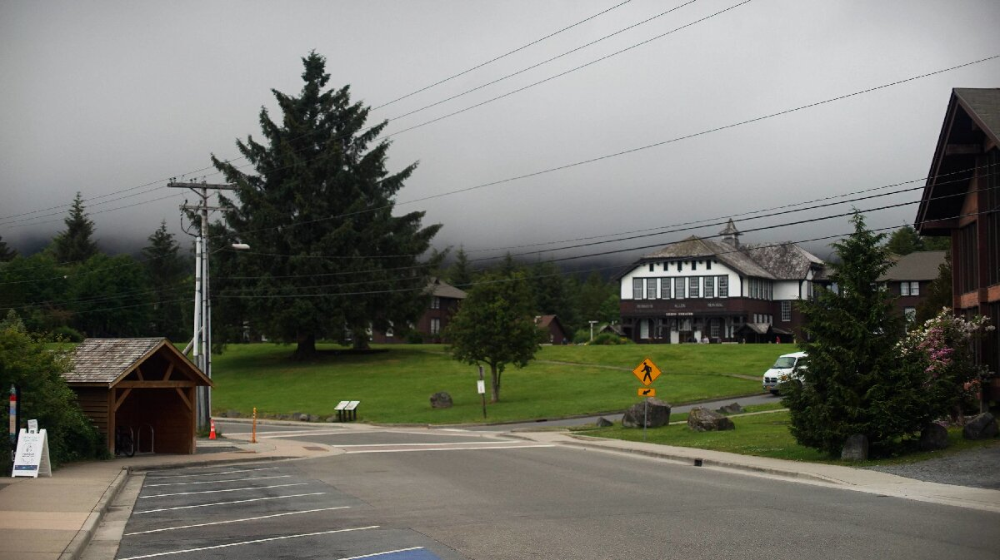Later in the day, we went for a walk towards O'Connell Bridge. Eliason Harbor was located in an industrial area, where buildings dedicated to fish processing occupied much of the waterfront. Further south, the stores, restaurant and green spaces appeared. A path followed the water's edge. It was a calm and lovely place, we walked there twice to enjoy the serenity and beautiful scenery. The roads here were not too busy, unlike in Ketchikan, cycling here was not a death sentence. |
|
| June 29th | Sitka Today I changed the engine's oil and filter. We plan to continue to rely on our own wings, but Calcifer II needs to work, there will be no one out there to tow us in and out of tight harbors. When doing maintenance on the engine, I noticed that the coolant level seemed low, but I wasn't sure how full it was supposed to be, having never before serviced that particular part of the engine. When leaving, I forgot to bring extra coolant along. I assumed that there was enough in the engine, and I didn't think we'd have to top it off because I was told to change it every 5 years, or so. It had not been 5 years yet, and we don't motor that much. The issue though was that it was not a good idea to top up coolant without know what was already there, and because the last change wasn't done by us, we didn't know what was put in there. Not ideal. Note:We switched our old Yanmar 2GM with a a rebuilt Yanmar 2GM20F in late 2021, when we did the switch the seller(someone in B.C renowned for his work on Marine engines) had topped it up with new coolant. We ought to have asked what it was, we just didn't think of it, having never had freshwater-cooled engine before. |
| June 30th | Sitka We hesitated to depart today, I kept thinking about the coolant, but despite this, we chose to leave. The engine was fine, initially, then I noticed less and less water coming out of the exhaust pipe. No alarm went off, but we figured it ringing was inevitable, so we switched the engine off, and I once again opened the engine room to investigate. There was algae in the strainer, again. I cleared it. We continued to sail slowly towards Kliuchevoi Bay, agonizing over the source of the problem all the while. Making the decision to go back to Sitka was tough, our pride was getting in the way, we were closer to our anchorage than to Sitka by then. But we thought it safer to go back, so we did. We sailed back to Sitka at a slow 2.3 knots, running the engine at very low speeds when the wind wasn't around to help. Our speed never exceeded 2.4 knots. Luckily, the wind rose a little for a short time and brought our speed up to 3.4 knots. |
| We arrived back into port at 1530, and crash landed into our former spot. The wind that had helped us get here was now a nuisance, pushing us away from our slip. We instead landed on the empty berth across from us. We used ropes to pull Pino back into its assigned slip, but Pino ended up laying diagonally between the two slips, and because of the wind I could't pull the bow over. Devine pushed on the stern and eventually, we were able to moor Pino properly. Oof. We spent the rest of the evening ruling out possible blockages in the engine's cooling lines as a problem. I opened the water pump and checked the impeller, all was good. We tightened the water pump belt to eliminate this as a cause. We wonder if the smoke we saw was actually steam, we just don't know. That was all we could do today, because it was Sunday and we had to wait for a week day to buy some new coolant. We had spoken to the people in Sidney who worked on our rebuilt engine and we found a compatible equivalent. Days like today suck, I am always hard on myself during such times, that I didn't do enough, that I didn't listen to the little voice in my head saying that leaving wasn't a good idea. I've been feeling like shit all day. Hopefully, some sleep will do me some good. I am so done with today. |
|
| July 1st | Sitka We slept deep, and well, it was often the case when the previous day's events were so shitty. At 0800, we went out to Napa, a 45-minute walk away to buy some coolant. The walk there was alongside a highway, but it wasn't stressful, the road was not too busy. We walked by many neighborhoods, trailheads, past the Raptor Center, where they nurse injured raptors back to health. We picked up some coolant and returned to Pino via the waterfront. 2 cruise ships were moored in the eastern anchorage, many of their occupants were already roaming around town, looking for things to do, see, or buy. |
| Back on the boat, we had lunch and then began to consider today's messy engine task. We learned a lot about our little engine, the learning on this boat does not stop. We drained the existing coolant and added its replacement along with its volume equivalent in distilled water. Then, we ran the engine to mix the two together. When watching the exhaust for smoke, Devine spotted some algae around the prop. We wondered how long it had been there for. Devine used the boat hook to tear it off. The engine seemed to let out a normal amount of water, we ran it in gear for a little while, but weren't sure if this was enough to recreate yesterday's problem. |
|
| The weakest part of any sailboat is its engine, Pino themself always performs beautifully. And of course, the second weakest link, was us. Tomorrow's forecast changed to 20 knots out of the west with gusts to 35 knots in the morning. Leaving Sitka was decidedly hard. There was always something. Our plan was to wake up early tomorrow to see what the weather gods were doing. I really hoped that we had solved the engine issue, and that it wouldn't be something worse, something that would give me another anxiety flare-up. |
|
| Week 10 | |
| July 2nd | Sitka While still in bed, we could hear the wind. The boat was rocked gently by a series of tiny wavelets. After looking at the forecast, we decided that leaving tomorrow was better, the wind wouldn't be as high. Our plan was to sail down the coast non-stop for a few days to get to Dixon Entrance, to experience overnight sailing again. We thought this option preferable to coastal hopping, because anchorages here were far apart, and having to arrive somewhere on time, before dark, was stressful. Another reason we wanted to do this was because we were both concerned with our little engine, doing more miles in open water by sail would be safer for us. |
| After lunch, we went for a walk through the Totem Trail Park, but there were tourists everywhere, way more than on any other day. Visitors took photos of the many totem poles, quickly, in passing, without really taking them in with their own eyes, and without bothering to read the accompanying plaques. Strange. We decided to take the long way back to Pino to avoid the crowds in town. While walking there, we saw signs reading: "Small Town Soul, no more tour buses!" We looked it up once we arrived back home. Small Town Soul was a group that formed with the aim of ensuring that Sitka wouldn't become overrun with tourists by limiting the amount of cruise ships that could come, with the well being of locals in mind. Towns consumed by overtourism lowers the quality of life of its residents, it transforms the city, sometimes in really awful ways, like with the overabundance of jewelry stores in Ketchikan. Sitka was not yet corrupted by over-tourism, but it could happen if people didn't take steps. Good luck, Sitka residents. |
|
| July 3rd | Sitka to Sandy Bay There was 15 knots out of the northwest forecast for today, ideal for us. We pushed off the dock, out of the breakwater and amongst the many islands and reefs present in Sitka Sound. A fog bank was waiting for us out there. There were 2 cruise ships broadcasting on AIS, we could make them out in the fog, but their outlines were faint. For a while it appeared that our paths would converge, but they soon turned away — phew! The wind was not up yet, we were motoring slowly to spare our fussy engine. It was cold, made worse because the fog was wetting our clothes. We had on several layers of clothing to help trap warmth, like when sailing northward in early May. It was summer, but it didn't feel like it... |
| It was only when we reached Bjorka Island(Watsíxh in Tlingit) that the wind manifested. We were sharing the waters with many fishing boats, all had their stabilizer arms out to keep from rolling in the swells. Our Pino had both sails up, we switched off the engine as soon as we felt a breeze. The wind from yesterday had left the seas messy, and big. Our sails helped to stabilize us, but it was a rough ride. After rounding a bunch of reefs we were finally able to point south, marking the beginning of our return trip. I tried cooking lunch, but the motion made me seasick. I was able to prepare Japanese curry, but I don't know why I thought making a two-pot meal would be a good idea. I served Devine their bowl, but I could not eat mine. I took the helm, steering kept my seasickness from getting worse. Running downwind with big seas was tough, sometimes the boat rolled too much and the motion backwinded the sails. |
|
| We were supposed to sail overnight today, but we decided to stop in Sandy Bay, near the southwestern end of Baranof Island. Sometimes, we change our minds about what we want to do. The thought of sleeping together in a warm bed was too enticing. The fog had not followed us around the corner, it had decided to stay in Sitka Sound. We ducked into Sandy Bay at 1930, entering with a north wind was easy because the entrance was shielded by land and rocks. We dropped the anchor in 10 m (33 ft, 44 ft at HW) and prepared sandwiches for dinner. After food, we went to bed, tired and tired. |
|
| July 4th | Sandy Bay to ongoing... We left Sandy Bay at 0700. The engine appeared to still have problems, there was too little water coming out of the exhaust and too much white smoke... or steam? We couldn't understand the problem. I wondered, were we slowly killing our engine right now by choosing to run it? We didn't know what to do, it ran, but the smoke wasn't reassuring. It was stressing me out. We made it out of the anchorage, but we switched it off as soon as we could. The anchorage was well-sheltered, getting out of there by oars alone would have been long, and tough. We sailed out painfully slowly, but at least we weren't overworking our engine. |
| We proceeded south very slowly, eventually nearing the southernmost tip of Baranof Island. The waves were still erratic, stealing what little wind there was out of our sails. It was frustrating, but once we left Cape Ommaney behind us the seas settled (the tide was running south out of Chatham Strait around that time), we had an amazing sail. We saw... I don't know how many whales today, so many whales! So many that we stopped calling out sightings to each other. We saw lots of black-footed albatrosses too, and some puffins! When sailing past the Hazy Islands, we could hear seals from afar, the islands were also home to a colony of seabirds. When downwind of the islands, we could also smell them. We had a bit of opposing current between the Hazy Islands and Coronation Island, but it wasn't too bad, it only affected us more because the wind got a bit light. | |
| We sailed overnight for the first time since our sail from Japan to Canada in 2020. The sun only really fell below the horizon for an hour and a half, there was persistent twilight, keeping the sky well-lit and making it easier to stay awake. We kept to our usual night shifts(my shifts: 0700 till 0900, 1200 to 0300 and 0600 to 0800). Devine had ripped the audio from a bunch of movies and listened to that at night to pass the time. I didn't feel like listening to anything, there was plenty out here to entertain me(there were lots of strange bird cries at night). The conditions were really ideal for night sailing, the only traffic we encountered were 2 cruise ships, carrying their sleeping guests comfortably from wonder to wonder. Devine had accidentally flicked the AIS switch off while turning the running lights on, it took me a while to realize that we weren't broadcasting a signal. The cruise ships were easy to see from afar at night, they were very well-lit, like part of the horizon was on fire. |
|
| The night was cold, even when sleeping, even when I was really well-bundled in a pile of blankets. Nights weren't the same without Devine's warmth. | |
| July 5th | ongoing to Port Bazan Come morning, we had made it to the west coast of Dall Island. The wind had not left us. I was tired though, I wasn't used to night shifts anymore, plus I was rudely yanked out of from my last sleep, mid-dream. We had breakfast, then coffee, and took turns reading, steering, and napping, then reading, steering and napping some more. |
| It appeared as though we would be sailing straight on through another night to Prince Rupert, but when we neared the Forrester Islands, we picked up the Canadian weather channel for Dixon Entrance. The wind would be very strong down there, too strong for overnight sailing in tricky, island & traffic-choked, waters. We looked at our chart, looking for a place to duck into for the night. Port Bazan was the closest anchorage, lying 24 NM away. We turned and aimed for it, there was no sense in throwing ourselves into hazardous conditions. Although I was also concerned about having to use the engine to get into the anchorage, that was potentially hazardous too. At least, we knew we could sail into it, the wind was pointing into the entrance. But we hoped that conditions would also allow us to leave... now that, was scary to think about. | |
| The seas were getting very rough, we double-reefed the mainsail. All of the hatches were shut, and we tethered ourselves to the boat. The wind waves kept increasing. Our bow was pointed at the entrance to Port Bazan. As I had said, the wind pointing into the entrance was good, it would permit us to sail in part of the way, but we were concerned about the waves in the entrance. At least, the entrance pass was wide, and we would have a chance to observe conditions from afar with binoculars, to see if we saw breaking waves in the entrance... we'd make up our mind about entering then. Anchorage entrances that open onto an ocean are always tricky. Port Bazan had both a north, and south entrance, we would be entering via the north pass, and hoped to leave again with the south pass, the orientation would maybe make it easier to leave... | |
| We arrived at the entrance, we saw no breaking waves, but the waves were erratic, despite this, we were in control. Devine was at the tiller, keeping us centered, while I worked the sails for the ever-shifting winds(wind travels differently near land, around islands, etc, it can lessen and rise, or switch direction suddenly). We were under sail alone, no engine. We had tried turning it on as a safety earlier, we had kept it in idle, but the oil pressure alarm rang and we had to keep it shut. Our planned anchoring spot was 2 NM away. The wind helped us through the pass and into quieter waters, but the deeper we went, the less wind there was to help us, and so, as a safety, we assembled our two giant 15-foot oars, and installed them into the cockpit winches. As the wind left us entirely, we proceeded to row Pino forward. It was really, really hard, and slow. It was 1000 by then, the sky was getting dimmer and dimmer, and the biting midges were out for blood. They were attacking any bit of exposed flesh. We were warm and tired, but the flies were really what made the situation terrible. We were too busy rowing to fend them off, they kept landing on our face and arms and hovering near our ears. Torture, that's what it was, we were in Dante's hell. While slowly rowing forward on calm waters, we kept the jib unfurled, in case the wind returned. Thankfully, some light, but unreliable, gusts helped us gain a bit more speed. In that moment, we were glad to have another way of moving Pino forward, other than with the sails, even if it wasn't efficient. It saved us. |
|
| We arrived at our planned anchoring spot at 1030. We dropped the anchor in 20 m (68 ft). We couldn't set the anchor right because we had no engine, and because there was no wind. Whatever. We were exhausted, sweaty, covered in bites... just feeling terrible overall. I was so tired of this shit, tired of being tired, and of worrying about this accursed engine. We went straight to bed, too tired to eat a meal. | |
| July 6th | Port Bazan We slept in until 0730. That night I dreamt about our engine, I was trying to troubleshoot it in my sleep. I woke up feeling anxious about our situation, but also eager to get to work on finding the problem. I also had to accept that maybe we wouldn't be able to fix it, and if that was the case, we had to have a plan. Could we get out of Port Bazan without an engine? What happens then if we do leave, getting into Prince Rupert to check back into Canada without an engine was going to be just as difficult, there was a lot of traffic there, lots of obstructions, too. At this moment I had even considered us sailing non-stop to Victoria from here(Canada really has too few check-in ports when coming in from offshore waters). My mind was very good at thinking up different scenarios, at planning ahead to keep us safe, but it also had the power to overwhelm. There was such a thing as 'having too many plans', my brain now felt clogged up, unusable. "What a shit superpower..." I thought, while crying. The pressure had built up inside of me, I had blown a gasket. Really though, I knew it was because I was still tired, and also because we still hadn't eaten anything. To try and remedy this, we made pancakes for breakfast. I wasn't very hungry, stress had a way of making my stomach feel full, but I forced myself to eat. |
| After breakfast, we went to work on the engine. Our plan was to check all of the cooling lines, both the freshwater and raw water lines, and to check the thermostat. We drained the coolant, removed the thermostat, and spent a while scraping the old gasket off. Our reason for removing it was because we'd had a cooling problem like this before with our old Yanmar 2GM. Because we had no replacement gasket in stock, we put some gasket maker(liquid sealant, made to withstand the heat of an engine) and sealed the space again without a thermostat. Running without a thermostat was not ideal, but we didn't have a replacement, and our engine was running too hot, so running cold for a while ought not be too dramatic, it might just mean that it wouldn't run at peak efficiency... but really, right now it just needed to run. We replaced the coolant. | |
| We then proceeded to remove one raw water hose at a time, starting the engine, and having the water from that particular section of hose empty into a bucket, to see if the flow of water was restricted at that point. We shut the engine each time we tested a new section of hose, all the way to the anti-siphon valve. Then, we inspected part of the exhaust elbow, we left it on the engine head because we didn't have a replacement gasket, and we knew it was a finicky one. Everything ran fine, no blockages. We ran the engine in gear, but again, we had no issues. This didn't mean that all was okay though, we've had many false positives in the past, but it was possible that we had fixed it. Our engine manual mentioned that a faulty thermostat could cause white smoke. We closed the engine room, hoping for the best. We cleaned up the mess we'd made from working on the engine, and then tried to relax a little. The weather today was nice, and warm. There were sea otters everywhere. This anchorage was calm, too, a perfect shelter. |
|
| July 7th | Port Bazan to Prince Rupert The wind was still blowing out there, but it seemed like it would ease off as the day went on. Unfortunately, it appeared that the only windy day was today, after that, the forecast called for a long series of calms. If we waited, we would be stuck here for a while. Devine was fine with waiting, I ought to have been fine with it too, but when nervous about something I needed to get it out of the way. There was going to be wind out there today, at least, enough to get us around Cape Muzon and into Dixon Entrance. Prince Rupert was 106 NM away from our current position. If our speed was good, we could be in Prince Rupert as soon as tomorrow. |
| We switched the engine on early, to let it warm up, and to give it a chance to fail early — it didn't. We lifted the anchor, and started making our way towards the southern exit. So far so good. There was wind funneling in from the entrance, accelerated by the land, this wind slowed our speed but Calcifer II wasn't showing signs of giving out yet. There was plenty of water coming out the exhaust, and a normal amount of smoke. Once outside of the pass, we had to motor a bit further to get away from shore. We could see there was wind ahead, just not near shore. Once we reached it, we shut the engine down. Phew, it behaved this time... maybe, just maybe we had fixed the problem after all. We had made it out of Port Bazan safely, I could now cross that off my mental list of "what ifs..." | |
| The wind was manageable, but got stronger as we began to round Cape Muzon. The waves got big, but Pino took them well. We had sailed in big waves like these before, the brain did not forget the fear, my hands knew to hold on to whatever strongpoint was nearest, and to remain there while focusing on riding the waves well. The ocean was not a gentle dancing partner today. Some current was coming into Dixon Entrance from Cordova Bay, even small opposing currents could cause swells to turn into high peaks and low valleys. I did my best to ignore their size, Pino needed to stay in sync with their movements, falling out of step could be dangerous out here. While on break, Devine was in the cabin below reading Santoka, but took over for me at 2100. I went inside to try and sleep, but I could never sleep right on my first 3 hour shift, Devine was the same, we could only half-sleep, a state that wasn't restful. Every noise manifested as an event in our dreams. |
|
| July 8th | Port Bazan to Prince Rupert I felt like I had been inside, in bed, for hours. I thought I had overslept. I got up, and went to check the time and saw that it was 1240! Devine had not woken me up! I opened the companionway door. "You didn't wake me up! You've been driving for 4 hours!" Devine smiled. "It's 1140." The timezone had changed during the night, the phone had changed from Sitka time back to Vancouver time. "Oh." I said. I went back to bed for an extra, luxurious, 20 minutes. |
| On my 1200 to 0300 shift, the wind left us entirely, but the large waves remained. I started the engine reluctantly, but it seemed fine. Going forward helped us take the waves better. The sky to my left was still somewhat lit up, and stayed that way until 0230. I could see our sails well, it was evident that there was really no wind to fill them with. Our wind meter continued to be dead, but we instead looked up at the arrow on the top of the mast to gauge the wind direction. At night we shined a bike light onto it. The arrow had reflectors which made it easy to see where it was pointing. It's funny that this rechargeable bike light, that we had purchased for cheap from Don Quixote in Japan back in 2019, outperformed any other high-tech flashlight we'd ever had aboard Pino. Japan sure knows how to build good things. | |
| Come morning, the sea was calm, calm, but we had a few tide waves from Rose Point(Haida Gwaii) to deal with. We weren't close, but it was still hindering us. It was only when nearing Brown Passage that we got 2 extra knots of speed. For a while, we were concerned that we wouldn't get to Prince Rupert before dark, that would be bad because we weren't allowed to stop anywhere in Canada before checking in. But now our speed increased to 6 knots, we were moving fast. When entering Brown Passage a fog bank engulfed us. A tanker was hiding within it, as indicated by AIS. We saw a Prince Rupert Pilot boat coming to meet it, but the fog bank soon devoured it. We could hear the tanker's horn, it wasn't far, we had to stay out of its way. When it passed, we pointed our bow towards the entrance to Metlakatla Pass. The wind had risen now, we had a good breeze carrying us past the Lucy Islands. I wasn't sure if going through Metlakatla Pass was a good idea, since the current would be running against us, but we had checked and saw that the peak current would only rise to .60 knots... so, we risked it. Using Metlakatla Pass would save us a lot of travel time and would ensure that we would arrive to Prince Rupert before nightfall. |
|
| The slowest we went was 2.6 knots, and only in the beginning, then we had some wind with us which gave us an extra knot of speed. We hadn't expected the wind to follow us through here, it was a welcome surprise. We passed through without any issues. The tide was high, making the passage feel less tight, we weren't as constrained depth-wise than the first time we had come through here on our way north. We tied to a dock at 1930. The sun was still with us, in fact, I got a bit sunburned on this trip(only after the fog bank dissipated). On arrival, I called the CBSA by phone and checked us back into Canada. We had made it back into home waters, and the engine had not failed us. Our stop in Port Bazan had been worthwhile, we had worked hard and gotten ourselves out of a really tricky situation. I was very, very proud of us. Both of us were exhausted, as we tend to be after a long sail, we prepared pad thai for dinner, then went straight to bed. |
|
| Week 11 | |
| July 9th | Prince Rupert We slept long, and hard. It was a slow morning aboard Pino, but I had to get dressed some time to go pay our moorage. The prices to stay on these docks had increased since we were last here, the summer rates had kicked in. My eyes widened when the bill was presented to me, the teenager working at the desk flashed a sympathetic smile, that's all he could really do, because in the end I still had to pay. It couldn't be helped, we were here and we needed to do laundry, to re-supply and do a couple of fuel runs. |
| It had been 40 days since we had washed our clothes and bedding. We took a shower, our last proper shower dated back to our time in Petersburg. Tonight, our clean bodies will sleep in a clean bed in clean clothes. Clean clean clean. | |
| After a grocery run, we stayed aboard to work on personal projects. | |
| July 10th | Prince Rupert Today was overcast and rainy. Devine resumed work on Markl while I went out on another grocery run, a pasta run. We must have pasta. After lunch, we topped off the fuel tank and walked over to the fuel dock next door to fill 2 Jerry cans. We filled them whenever we got the chance, because fueling stations in Northern BC were far apart, and the prices here were better. The route we would take going south wouldn't include docks, not until we reached Port Mcneill. |
| We topped up our water tank between rain showers. Once back inside, the rain continued, heavy and constant. We watched other boats arrive in port in these conditions, many of whom, like us, didn't have enclosed cockpits to shield them from the weather. "We feel your pain," we said, warm cups of tea in hand. "Soon, you'll be warm too!" | |
| We watched a movie and went to bed way too late... | |
| July 11th | Prince Rupert to Hunt Inlet Going to sleep late was not smart. We had to get up at 0500 today, it was rough! We found it difficult to want to leave because it was still somewhat dark, and grey out. Devine hit the snooze button, but it was too damn short, and anyway we had to go because the tide was switching directions early... |
| Prince Rupert Harbour is very long, it took us a while to exit because the current coming in from Metlakatla Pass was slowing us down. Today, we aimed to anchor in Captain Cove, the same anchorage we had stopped at on the way north, but the problem was that while the current in Prince Rupert Harbour ebbed south, the Skeena River ebbed northwest. Once we hit the Skeena River current, near Holland Point Rock, our speed plummeted... we knew we couldn't make it to Captain Cove like this, and so we diverted and went to anchor in Hunt Inlet on the north end of Porcher Island instead. | |
| Hunt Inlet was well protected from weather, but if the wind was strong out of the northwest it could make it tricky to leave. We were expecting the wind to turn in that direction tomorrow, but we thought it possible to leave early in the morning before conditions got too messy. | |
| The shores of Hunt Inlet were lined by summer homes, each with a personal dock. We were glad to find no mooring buoys taking up the anchoring room. The rain was waiting at the head of the inlet, but it was light, and it did not last. I was glad, I wasn't in the mood for a soaking. We motored to the inner bay, tucked behind a narrow. The tide was very, very low when we arrived, making the narrow waterway very intimidating to enter. We almost chickened out, especially after seeing some kelp bordering the channel — at least the kelp only appeared to cover the west shore, the east side was clear. We had 3 m (10 ft) under the keel when passing, and anchored inside in 12 m (40 ft, +15 at HW). |
|
| A sailboat joined us at anchor later, but they chose to go in the back bay. We took a nap in the afternoon. While sleeping, we could hear strange noises on the outside of the hull, a bumping and scraping sound. Was it a crab trap? A log? Floating debris? We had heard a few run-abouts go by, maybe one had set a trap nearby while we slept and the boat had swung into it? I was too comfortable to care, though. "I'll check later." Anyway, after a while the noise stopped. Later, as I was preparing dinner, I saw 2 pigeon guillemots swimming towards the boat, they swam closer and closer until they were so close we couldn't see them anymore through the window. Then, I heard that same bumping and scraping sound from before. "It was them!!" we said, ecstatic. The seabirds had been eating algae off the hull! Pino had a permanent green beard at this point, no amount of shaving could keep the growth in check, we had given up. "Keep at it!" we told them, if the birds eat it we won't have to scrape it! |
|
| July 12th | Hunt Inlet to Captain Cove We left Hunt Inlet at 0500, early early, before the start of northwest winds. The inlet was nice, but the fact that it was open to the fury of Chatham Sound was not ideal. We fought an army of biting midges on the way out — we were so sick of them. On quiet windless mornings, we had no protection. We clapped our hands so often that our palms started to hurt. Eventually, their numbers thinned until there were none, and we began motoring south towards Arthur Passage, with the current in our favor, with no Skeena River nonsense due to our position. We had the sails up, even if the wind was light. Even light winds could add to our speed. |
| The passage was uneventful. Once into the entrance to Captain Cove we saw a mast... another sailboat was at anchor in our planned spot — damn! Two porpoises came by to say hello, we said hello back before entering the anchorage. We saw our neighbors aboard kayaks, exploring the area. We anchored near them, in 12 m (40 ft, 55 at HW), and they paddled over to say hello. So many hellos today! We met Sandra and Dough sailing on Leigh Ann, an Alajuela sailboat. They had sailed to Mexico, Hawaii, and many times to Southeast Alaska. They invited us to happy hour later. | |
| We took a nap, then joined them on Leigh Ann at 1600. We shared stories all evening. It felt good to meet another cruising couple. We had not talked to many sailors on this trip. Most of the time we were anchored alone. We went back home at 2000, preparing a late dinner. | |
| July 13th | Captain Cove We slept badly last night, the wind had come up out of the north. It was very gusty, the gusts were so violent that it was a bit distressing at times. When waking up, we decided to stick around for another day, we both needed to sleep. We checked the weather later, the wind was supposed to be light that day, but it had increased to 10-20 knots of the northwest. We ought to have taken that weather window, I felt bad about missing it, but there was no sense thinking about it now because leaving was impossible because of the tide current. |
| I spent the day trying to keep my mind off the wind, playing Saturday Edition on the Playdate. Devine re-filled jars of food, and re-organized our pantry to make a proper inventory of our supplies. Leigh Ann had left, but another boat had come and anchored further to the east. | |
| July 14th | Captain Cove to Moncton Inlet Lagoon The night was again very gusty, we spent another terrible night at anchor. The wind forecast for today was still 10-20 knots out of the northwest. We left the anchorage early, the other sailboat followed us out, and caught up to us when in the south arm of Petrel Channel. We had some good wind in the bend, but it then died out and only returned when we approached Principe Channel past Wright Island. |
We had planned on anchoring in Colby Bay today, but the wind in Principe Channel was really good, beating into it to go there made zero sense, so we pointed south. We were going at 5 knots. When we reached the western end of Anger Island, we turned straight downwind. I was busy preparing lunch, but while the rice was cooking I hurried outside to set up the whisker pole. We knew we could set it up fast now that we had added that rope loop at the end. I arrived back at my cooking station before the rice had finished cooking. Setting up the whisker pole was always worth it when sailing downwind in protected waters. In the narrowest part of Principe Channel, the funnelling wind had us running at 6.8 knots! |
| We caught up to the other sailboat quickly, they were also going south, but were busy tacking from one side of the channel to the other, downwind. Running wing-on-wing was a lot less effort. | |
| We passed Patterson Inlet, and aimed for Moncton Inlet. 41 NM was enough distance for one day, plus we had to find somewhere safe to spend the next few days because of incoming bad weather. Moncton Inlet offered many good anchoring options, like the lagoon, and the north anchorage. | |
| As we turned into Moncton Inlet, the other sailboat sailed on. We tracked them for a while on AIS, it seemed like they were heading towards the north end of Campania Island. We planned to try for the lagoon first, it was closer, more protected, and the tide was right for entering it. The entrance to the lagoon was very shallow, we could only hope to enter it at high water, it was also very small, with only enough room for 2 small boats at anchor(or 1 big boat). We hoped no one else was there now. When passing, we had 0.9 m (3 ft) under the keel, we could see the bottom clearly. The lagoon was devoid of boats, so we anchored in the deepest waters, with 6 m (20 ft) under our keel at HW. It was a very nice, cozy anchorage, bordered by shallows. |
|
| It was sunny when we set the anchor, and so like always, a horsefly welcome committee came to greet us, which forced us to go indoors and fortify all of our hatches. A small sailboat joined us in the lagoon later, anchoring in a very shallow spot to the northwest of us. We hoped that they had checked the tides right, or that they drafted very little... we certainly couldn't have anchored there. We spent a very calm night here, it was a nice change from the relentless violent gusts in Captain Cove. |
|
| July 15th | Moncton Inlet Lagoon We awoke to light rain, with the other sailboat already gone. We had plans to stay here, until the wind was more favorable. As yesterday's advancements showed, with the right wind we could cover a lot of distance. Pino was slow when motoring, but fast under sail. |
| I spent the day drawing, while Devine progressed on Markl. A very quiet, rainy day. The lagoon was well-shielded from the weather, there was supposed to be 20-30 knots of wind out of the southeast out there, but we felt nothing. The northwest wind was supposed to return in a few days, we would wait in our cosy nook until then. | |
| The forecast had changed, with no northwest winds of any kind for the next few days. The wind from the south was quite strong at times. This was frustrating. Our lagoon was a safe place to weather this kind of wind, but being patient was hard. Having to wait to make progress was hard. If the wind eased up a bit, we'd have to sail into it, but it was tricky to do in open water, the sea state can really stifle windward progress. In all, waiting was only tolerable if there was a known fixed end to the waiting. Northbound sailors must be delighted, this wind would carry them far, and fast. A bad wind for me was a good wind for someone else out there. It was likely that we would have to contend with south winds until we reached McInnes Island. |
|
| Week 12 | |
| July 16th | Moncton Inlet Lagoon A sunny day, but the wind was still in the south. When the sun was out a breeze crept into the anchorage, but it barely disturbed its waters. Our nook was safe, our nook was good. We worked on our respective projects, passing time, hoping the forecast would later change in our favor. |
| We had to fight insects whenever we wanted to spend time outside, it was frustrating. We carried bite marks on our bodies, mostly on our arms and hands, they would strike whenever we were too busy to stop them. Early in the morning and late in the evening, the biting midges would come, they would wait, hoping for a taste. "Just a nip!"" They would say. "One nip each is all we ask! Then, we will leave you alone!" The problem with that offer was that there were always too many midges around, adding up to an unreasonable amount of nips. | |
| I solar cooked some brown rice for dinner to make some maki rolls. We had been anxiously waiting for our avocados to ripen, today was that day, but in our haste, we cut up one that wasn't quite ripe... nearly there, though. We should have waited. The avocado was tasteless, what a terrible waste. | |
| Checking the forecast on VHF, we saw that the south winds would lighten tomorrow, we would try for a short hop south to Campania Island. Listening to the VHF weather could be a bit tedious at times, depending at what point we caught the transmission, we sometimes had to wait a long while before hearing the bit that was relevant to us. We knew the weather station names by heart, and could match the radio voice's intonation perfectly. I really loved how the radio voice pronounced the name Nanakwa Shoal, a weather buoy in Douglas Channel. "Na-na-koua-shoooo!" Na-na-koua-shoooo had become a recurring meme onboard. | |
| July 17th | Moncton Inlet Lagoon to Dunn Passage(Campania Island) We woke up to a foggy world. We couldn't see past Pino's bow. The plan was still to leave today, hopefully this fog would clear when it came time to depart. We had to wait until the water was a bit higher before leaving, the entrance only had 1.2 m (3.9 ft) at zero tide. |
| We left the lagoon at 0930, hauling up the anchor was easy in these depths. I hauled up the entire rode by hand, with zero issues. We only used the cockpit winch to dislodge the anchor out of the mud, to spare my back. The fog lifted by the time we left, we motored out of the lagoon with 2.1 m (7 ft) under our keel, plenty of water. | |
| We expected some wind out there, but it was quiet, the waves were down. The fog bank had left Moncton Inlet, but it was still out here, but it thinned a lot by the time we got to it. We only got good sailing wind when reaching the end of Pitt Island, 10-15 knots out of the south. Devine went below to prepare some handmade juwari soba from buckwheat groats for lunch. I was very impressed! This was already a complicated dish to prepare at anchor, preparing it underway was a hell of an achievement. The noodles and broth were very tasty, they'd used some leftover fermented black bean paste to flavor the broth. | |
 While steering, we saw a rare weather event, for the first time ever: a 22° halo. "Ring around the sun or moon, rain will come real soon," I said, remembering a weather mnemonic I had memorized. An active weather system was on the way. While steering, we saw a rare weather event, for the first time ever: a 22° halo. "Ring around the sun or moon, rain will come real soon," I said, remembering a weather mnemonic I had memorized. An active weather system was on the way. |
|
| We were able to sail right up to the entrance to Dunn Passage on Campania Island. We slipped inside on quiet waters. The features of Dunn Passage reminded us of Higgins Passage on Price Island, both were a labyrinth of islets, with many passages to explore. We dropped our anchor up-channel, in 9 m (30 ft, 36 at HW). |
|
| July 18th | Dunn Passage(Campania Island) to Doig Bay When grinding coffee beans for breakfast, the bottom of the coffee grinder, holding the grounds, fell out. The floor was covered in coffee, mixed in with dust and things we had been too lazy to clean up. It wasn't a good way to start the day. We left Dunn Passage at 1030. Lifting the anchor off of the seafloor was damn hard, when we finally had it out of the water we saw why that was... we had brought up an entire kelp forest! The anchor was up, but we weren't drifting because the kelp was still attached to the sea floor, acting as a mooring. "Hooo damn!" I said. "That's a lot of kelp!" I thought we would have to cut it off, but I bent over the bow to try and untangle it first. I didn't want to cut kelp if I didn't have to. I was able to free our anchor and let the forest return to the depths, undamaged.  |
| The wind was forecast to be 10-15 knots out of the south, like yesterday, but it was lighter than this. We couldn't sail. We motored with the sails up, hoping the wind would eventually come to fill them, traveling down the west side of Campania Island. Both of us were outside, for a moment I thought I heard a call on the radio of someone mentioning Campania Island and the Canadian Coast Guard, when outside with the engine on, we don't always hear messages clearly. I went inside to wait to hear the message again. As we neared the southern tip of Campania Island, we heard the message again, but since I was inside I understood it clearly. A kayaker was stranded on the west side of Campania Island. The Canadian Coast Guard had replied, then relayed the message to all stations in the area. | |
| We hailed back the Coastguard, and then, in turn, the kayaker. To keep their identity private, we'll refer to them as MK. We learned that MK's kayak was compromised, they could still use it, but not in heavy seas. They needed a ride to a town. They had supplies, and weren't in immediate danger. When receiving their coordinates, we turned around and began to motor northwards towards their position. We were motoring against the current though, making for very slow progress, but it was fine, because MK had climbed up a hill to get good reception and needed time to get back to sea level to pack up their gear. The plan was to meet at a peninsula nearby, and for them to paddle over to us once we were in sight from shore. We couldn't get close to shore because of reefs and ocean waves, but it wouldn't be far to reach by kayak. |
|
| As soon as we neared the peninsula, 1 hour later, a thick fog bank rolled in. "Oh, shit..." We said. "MK won't be able to see us from shore in this." The Coastguard had insisted that MK not paddle out to us if they couldn't see us, it was too dangerous, but they had decided to try it anyway. We were very concerned. We didn't want to risk MK missing us and paddling further into open waters in these conditions. MK's radio calls weren't clear, and it seemed like there had been some confusion because they were paddling to us from further north. We had understood that their gear was waiting at the peninsula, it wasn't. MK would have to paddle a long while to get to us. Meanwhile, we were sitting still, bobbing in the waves. When we asked for status updates, MK said they were paddling at 3 knots toward our position, we motored a bit further north to cut some distance to meet up with them, but visibility was nil, and there were reefs everywhere. I was incredibly nervous. We decided that this was too foolhardy, so we asked that they return to shore and wait for better conditions.By then, the Canadian Coast Guard had come into contact with a rescue boat out of Hartley Bay, and informed us that it was coming to pick up MK. Since MK's radio didn't have good transmission range, a fishing boat anchored nearby relayed their messages back to the Coast Guard. Once we knew that the fast rescue boat was underway, we pointed back south again. It was better, in all, for MK to go to Hartley Bay. They could arrive in town today, and repair their kayak, or catch a ride elsewhere. Pino was a slow boat, it likely would have taken us 3 or more days to get to a city. We kept an eye on the position of the rescue boat with AIS, to make sure MK was picked up. On arrival, they deployed a motored dinghy, also equipped with AIS, which was able to pick them up right off the beach, without MK having to paddle out into the water. This was so much safer... I was glad, relieved. |
|
| It was slow going back to the southern tip of Campania Island, we had used up 2 hours trying to pick up MK. The current was already turning. Unfortunately, the ebb was very short(neap tide). We aimed for Chapple Inlet on Princess Royal Island. The fog was still unbelievably thick, we had a hard time keeping a heading, our eyes couldn't focus on anything. A weak wind started, we were glad because we had to cross all of Caamaño Sound and the wind would help us cross it faster. The ride there felt long, made longer by the absence of senses, and the cold brought on by the overabundant moisture in the air. |
|
| We passed through part of Emily Carr Inlet to get to our anchorage, the fog parted once we arrived, but only briefly, it returned as we passed a reef covered in birds. The birds were soon engulfed in a wet veil. We arrived at Doig Bay at 2030, very late. The biting midges were there, waiting, like always. We set the anchor in 12 m (40 ft, 46 at HW). Doig Bay didn't permit for much scope, swing room was extremely tight, but the wind was supposed to stay in the southeast, so if it did, we'd be fine. |
|
| July 19th | Doig Bay The anchor alarm rang at 0300, when the wind came up. It didn't surprise me because I was expecting it to. We had 45 m (150 ft) of rode out, but I had set the swing circle at 38 m (125 ft). I could see we were swinging far enough from shore, so I extended the range of our swing circle. Doig Bay was just a tiny open pocket, protected from wind waves out of the south by a small spit of land. The spit of land was very close, we didn't want to risk hitting it if the wind switched to the northeast. Usually, we pick spots that permit for better swinging room, but it was very late yesterday, we had to anchor somewhere... |
| A very quiet day at anchor. We missed walking, there were no walking trails out here, just rocky shores thick with trees. On quiet days, we made an effort to prepare good meals. Devine pan-roasted some pumpkin seeds, and served it over sushi rice with a side of agedashi tofu. It was perfect. Then, for dinner, we made chili. | |
| Today, I finished a drawing, while Devine alternated between reading and working on games. We couldn't go outside, not unless we wanted to battle the midges. Ah... those accursed midges. We missed being able to go outside, to just sit out there, unbothered. We were missing many things today, weren't we? We hadn't had internet in 10 days, we missed that too. The route we were taking did not have cell towers. We hoped to catch a signal when brushing by Klemtu. Tomorrow's plan was to head to either the anchorage west of Quigley Creek, or to Hague Point, although getting into Hague Point. looked a bit dicey. There were so many anchorages here with narrow, shallow entrances. |
|
| July 20th | Doig Bay to Meyer's Passage We left Doig Bay at 1030, and proceeded into Caamaño Sound in quiet seas. A rain cloud waited for us ahead, but dissipated before we got there — this happened a lot. The wind rose out of the west, we were surprised, the forecast had called for southwest winds today. We had the wind in the back, so we poled-out the jib, and ran downwind. Because we were making excellent progress with this wind, we moved the goal post further, onto an anchorage in Meyer's Passage. |
| Dolphins were riding at our bow. The white on their belly made it easy to track them underwater. A visit from dolphins always brightened our day. | |
| We arrived at Meyer's Passage at 1700, near when the current would turn. We weren't going through the narrows today, that would add too much travel time to an already long day. We aimed for an anchorage just before the narrows, it seemed good, very well-positioned. There was a lot of kelp afloat in the channel as we got near the entrance to the cove, I was at the bow, pointing to Devine where to go to avoid them, there was a lot laying in our path. We made it inside the cove safely, and anchored in 13 m (44 ft, 54 at HW). No one else was here, just us, the seals, the seabirds and the vampire midges. |
|
| July 21st | Meyer's Passage to Clothes Bay We left the cove at 0830, a bit earlier than we had planned — we were too impatient. The narrows we had to pass through were very shallow, we waited until we had at least another 0.6 m (2 ft) of water under our keel. A 2 kn current was already running in the channel. We proceeded through. It was very, very shallow, but we didn't have to worry about kelp, the current had dragged them all underwater, we could see them lying on the seafloor. The water was very clear, we could see what dangers awaited us if we drifted out of the deeper channel. Our keel was passing through a sort of trench, with 0.9 m (3 ft) of water under us at times, we didn't see less than this, thankfully. Some seals lay on a rock next to the E70 channel marker, checking us out as we drifted by, wondering why we weren't relaxing, why we weren't lying on a sun-warmed rock somewhere. "Why put yourselves through this?" They'd say. "We don't know." We answered. We really don't know. |
| The current helped us all the way to Split Head. "We'll be there soon!" We said, congratulating ourselves. This passage was only 11 NM long — short and easy! Once we arrived at the turn to go south through Finlayson Channel, for some reason we assumed the current would stay with us around the bend. We encountered a violent tide rip there, then, we stopped going forward. Scanning the horizon, we could see that the channel marker on the tip of Split Head stayed where it was. We were motoring at 3 knots, so there was 3 knots of current running against us here. | |
| Sometimes, we don't stay somewhere long enough to have time to study the next day's obstacles. We were too tired yesterday and went to bed right after eating dinner. If we had studied the area better we would have understood that the reason the current in Meyer's Passage didn't run with the current in Laredo Sound was because it was being sucked up by Tolmie Channel up north. We had assumed that the current here wouldn't be a problem, that it was going to be an easy ride to Klemtu — a big miscalculation. We were in Finlayson Channel, but we were stuck there, with Klemtu in view, far, far away. Both of us then heard our phone's familiar "Ka-cling!" sound, meaning that we had cell service again! We were excited! We decided to motor at a speed of zero for a while, keeping up with the current so that we could stay within cell service so that in turn we could check our messages, commit changes to online repos, and so we could call our families to tell them where we were, etc. The current was supposed to turn soon. Yes, we were burning fuel for internet, times were hard... Boats passed us on their way north, going with the current, unlike us. The scene must have been funny to them. |
|
| While talking to my sister on the phone, I noticed that suddenly there wasn't enough water coming out of the exhaust. I had become hypersensitive to this, because of all of the recent incidents we'd had. This shit again! I thought. I apologized to my sister, we had only been speaking for 5 minutes, but I had to hang up. I shut the engine, and dove into the engine room once again. "Sick of this." I mumbled as I checked the water strainer for debris. I found two little bladderwrack floats, this meant that some algae was likely fouling the system elsewhere. I took off a few hoses, found nothing, then took the hose off of the engine thruhull. I opened the thuhull and saw that the flow of water was severely restricted. Devine locked the tiller and joined me inside to help me clear the thruhull. We used a Jabsco hand pump(only ever used for water) to push the algae out from the thruhull from inside, our thruhull had an elbow, so we couldn't easily jam anything in there to clear the algae. I placed the pump hose onto the thruhull opening, over the hose barb, holding it down with one hand because it wasn't a perfect fit, while blocking the pump's air intake with another hand. Devine began to push air through — those hand pumps really packed a punch! When we heard a lot of bubbles coming out, we tried the thruhull again, the water was flowing out as it was supposed to! We tried the engine again, all was good. "Fucking hell," I said, looking outside to see if the current hadn't pushed Pino too far back into the channel, but everything was ok. "Laying on a sun-warmed rock somewhere sounds really nice right now." This engine fuckery was driving me up the wall. "I really am a terrible sibling," I said aloud to Devine. I felt like I was never there for them. This feeling was especially strong in me now because I had to quickly abort a call with my sister, whom I hadn't spoken to in months. It felt bad. Ah, the weight of it all... what is a rabbit to do? |
|
| The current soon eased up, allowing us to make progress towards Klemtu. The passage there felt eternal. We passed Klemtu at 1630. What a beautiful place! Laying at the foot of a mountain, surrounded by trees. It was perfect. The Kitasoo/Xai’xais big house was perched near the water, the large face carved on one of its faces was observing us as we went by. That day, all of the faces I saw seemed to ask me why I was doing this. I felt guilty. Really though, I knew why I was doing it. I loved this life, I loved being outside, loved frequent wildlife encounters, loved being in sync with the weather and the sea, I even valued the tough moments(usually not as they are happening, though) because those moments were really what taught me the most. I couldn't have it all. To have this, I must not have something else. We progressed towards Clothes Bay, south of Klemtu. A motor boat was already at anchor there, we found a spot near them in 9 m (30 ft, 36 at HW). |
|
| After dinner, we continued to check our messages. We weren't sure if the connection would continue to be good in this bay — it really was! I knew I had to clean up seawater out of the bilge, and in the engine room, but I really didn't feel like putting my head in there again today. We went to bed early, as we tend to do after a long frustrating day on the water. This day was supposed to be short, easy, but something always happens on this deep blue goddamn sea. Goddamn it, and goodnight. |
|
| Week 13 | |
| July 22nd | Clothes Bay Our neighbors had left this morning, so we decided to move to their spot, hoping that Star Island would help shield us from coming weather out of the south. The island helped reduce wind waves, but the wind curved around the land. We were expecting strong winds out of the southeast tomorrow. A low was heading towards us, with wind, rain, and a risk of waterspouts on the forecast. |
| Another sailboat joined us at anchor, taking our old spot. We worked on personal projects while catching up with happenings on the internet. | |
| We prepared okonomiyaki for dinner, cooking the cabbage separately instead of with the chickpea flour pancake to reduce cooking time. We weren't certain how much propane we had left, so we continued to look for ways to use up less fuel. | |
| July 23rd | Clothes Bay We woke up to a lot of rain. The wind had finally veered to the southeast, the rainy quadrant. This was our third day in Clothes Bay, waiting for weather to pass so we could make progress towards Bella Bella. |
| We lit a fire in the woodstove after breakfast, the cabin got cold on rainy days. It had been a while since we last needed to make a fire, we still had a lot of kindling and compressed wood bricks left over. I needed to break up more wood bricks, but this kind of weather did not permit it. The last time I cut up bricks was in Frosty Bay, a place that now felt far, far away, in place and in time. | |
| We stayed in the blankets all day. Rainy days didn't allow for prolonged time on the computer, our solar panels couldn't produce enough amps. We took turns playing games on the Playdate, reading books, and drawing. The rain had not stopped, not once, we weren't happy, but at least it helped to wash the salt and mud off the deck. | |
| July 24th | Clothes Bay Last night we learned that the deck iron leak was back. A river had emptied itself over Pino, and now still, water cascaded down the windows. I had heard trickling water near me as I slept. I searched for pooling water in the dark with my hands, and found a wet spot on top of the stove. We got up, cleaned up the water, and placed a bowl and a rag there to temporarily contain further leaks. Water accumulating on our cast iron stove was bad, even if it was painted it could still rust. We woke up at 0500 with plans to leave, but it was very dark and rainy still. I checked the weather and saw that the waterspout warning was still in effect. Leaving in unsettled weather was not a good idea. Haida Gwaii funneled west and north winds into south winds in this area often, making life for southbound vessels very difficult. The wind was supposed to switch back to the northwest later today, but as I had often repeated in this log, the current and wind changes were rarely favorable together. |
| The other sailboat had not left either, they stayed where they were. We had the woodstove running again today, to try and dry off the wet spot from yesterday's leak. It would be another quiet day at anchor, in which we watched seabirds taking turns on a very long log — prime seabird real estate. That particular log had been here for days, it didn't appear to ever leave Clothes Bay. Everyday, the log hosted a different number of birds, while some waded in the water near it, waiting for their turn on top of the esteemed log. |
|
| July 25th | Clothes Bay to Shearwater We left the anchorage at 0540, although getting Devine to get up today was a challenge. "I'm torturing you, aren't I?" I said, while rudely opening the blinds, allowing some daylight to brighten — or corrupt, as a sleepy Devine would say — our dark cocoon. |
| The sky was grey, but there was no rain. We motored out of the passage leading to Klemtu, dodging numerous logs. The ride south was uneventful, but it was cold, we had to double up on clothes to keep warm. "So... we're back to that!" Devine said, shivering, a cup of coffee that had long turned cold in hand. The sky brightened as we approached Seaforth Channel, we were able to shed our extra layers. A sailboat had caught up to us, we motored alongside each other for a long while. The good northwest wind was weak. Once we arrived near Ivory Island, at the northwest corner of Seaforth Channel, the wind instead rose out of the southwest. We shut the engine and sailed close-hauled, with the wind comfortably on our stern once around past the island. By sail, we caught up to the other sailboat quickly, but soon parted because we were aiming for Mouat Cove, and they, for Bella Bella. We watched them sail away, envious. "Wait, why aren't we going to Bella Bella today?" The wind and current were good, we could do it, and so we changed course again! We had taken the early ebb current south, but in Seaforth Channel the ebb ran west, and we had arrived at the beginning of the flood, so we were able to ride it to our destination. The flood in the area got sucked into the east part of Llama Passage. |
|
| We poled out the jib, but had to take it off quickly once we reached Hunter Channel, because the wind was now coming out of it and onto our beam. Just as we reached the Dryad Point Lighthouse, we saw the tip of the giant white bow of Northern Expedition, a BC ferry, as it was heading north to Prince Rupert. We furled the jib to slow our progress, to allow it to pass. The wind picked up after that, we went through a pass just after Saunders Island, sailing at 5-6 knots all the way to Shearwater. | |
| We took a slip at Shearwater Marina for the night, to buy some fresh produce and to top off our water tanks. The classic wooden sailboat Tally Ho was moored in the marina that day, a nice surprise! It was absolutely gorgeous, it was a real treat to see it in person. They were on their way to Haida Gwaii. The grocery here was well-stocked. We bought a lot of dry staples, some frozen sandwich bread(it's all they had) and some fresh vegetables. The marina was next to a boatyard with extensive recycling facilities, with bins for many different materials, like in Japan. |
|
| July 26th | Shearwater to Kisameet Cove Leaving the bed was difficult, but we had places to go, and we needed to complete a few more tasks that required the use of a dock. We prepared some peanut butter toasts for breakfast, we missed toasts, we mainly ate oatmeal for breakfast these past few months. This was a nice change. |
| Like Klemtu, Shearwater was a beautiful place, surrounded by water, trees, and plenty of wildlife. It was far from everything. The sure sign of a connection to the rest of the world was the BC ferry terminal. We ate coconut curry for lunch, then pushed off the dock at 1100 and went to moor onto another: the fuel dock. Prior to docking a floatplane went by ahead, also with plans to fuel up, we found a spot in front of them. Fuel here was not cheap, but we expected that. After that, we aimed to go through Llama Passage to anchor in Kisameet Bay, 19 NM away. |
|
| We had wind while in Llama passage, so we once again set up the pole for the jib, running downwind all the way up to Serpent's Point. We took the pole down there, the bend caused the wind to change direction. Again, the wind stayed with us, even through Fitz Hugh Sound. We motor-sailed the last 4 NM to the anchorage, the wind was weaker by then, and we wanted to arrive before 1800. | |
| Once in Kisameet Cove, we couldn't anchor where we had planned, because another sailboat was there, and past them, tucked in the northwest end of the bay, was a large mooring. On our way into the anchorage, we surprised a loon. The loon had ducked underwater to avoid us, but had now re-surfaced a bit too close, still. It let out a sound, a tremolo, which is a rapid, laughing, quivering vocalization that loons do when threatened(or when they're feeling aggressive) that we've come to refer to as "fuck you a-woo-woo." We anchored in 16 m (55 ft, at HW). There was no VHF reception for weather here, so we downloaded the McInnes Island to Pine Island weather forecast webpage using the satellite phone. Being able to request webpages was pretty cool, but it was necessary to have the exact URL on hand already. The contents of the page were converted to text-only, thankfully it wasn't too messy. We had plans to move a bit more south tomorrow, before the strong southerlies started up again on Sunday. |
|
| July 27th | Kisameet Cove to Kwakume Inlet We stayed in bed till 0630, what a luxury! After breakfast, we went outside to haul in the anchor rode. There were no midges around. As I hauled in the rode, Devine was gesturing towards me, asking me to come join them in the cockpit. "Look! Over there! A bear!" I secured the rode, and joined Devine near the stern to look at the scene. A bear mom and cub were swimming, they had just left a small islet, and were heading towards the King Island shore. "Ohhhhh wooooooow!" I said, reaching for the binoculars inside the cabin. This was our first ever bear sighting. We had given up on seeing a bear, and now, there were two right there in front of us! They were so damn beautiful, I could have cried. We had time to take in their features. They surfaced for a brief moment on a drying reef, scaring away all of the birds that had been perched on it; they soon went back into the water and disappeared into the trees ashore. Magical. We waited until they were out of sight before turning on the engine, neither of us wanted to disturb this scene. |
| We motored out of the anchorage, heading south towards Kwakume Inlet, 16 NM away. With no helpful wind on the forecast, we could only do short hops. While motoring along, I suddenly smelled something awful, like there was a propane leak... a big one. I smelled inside the cabin. Nothing. The propane locker? Nothing. The smell was outside. Then, I saw a whale spray near us. "Christ. I think the whale farted, or maybe it had a shit?" The whale was laying near the surface, letting out an occasional spray. This behavior, we later learned, was called logging. Apparently, the smell was also due to us being close enough to smell its breath. Whale breath was described by National Geographic as "...an unholy mingling of fart and fishiness—hundreds of gallons of air forcefully expelled from its lungs, laced with the fumes of half-digested krill, hundreds of pounds of these slow-dissolving crustaceans fermenting in its stomach." The wind came up as we neared Hakai Passage, helping us sail to Kwakume Inlet. |
|
We arrived at Kwakume Inlet at noon, just as the current was reversing. We motored around a rock in the middle of the entrance, and went to anchor southwest of the inner basin, south of a rock in the middle of the bay(showing at low tide). The rock was easy to see, a large seal was laying on it. The seal stayed until the tide rose enough that it had set them afloat. For a while, as water covered up the whole rock, it looked like the seal was just laying on top of the water. A Jesus seal miracle. |
|
| We anchored in 8 m (27 ft, 37 at HW). We were near the south shore for protection from tomorrow's upcoming weather, but in the meantime, the northwest winds caused our end of the bay to be a bit bumpy. The holding was good, in thick mud. We had managed not to piss off any loons today. Any day we hadn't pissed off a loon was a good day. | |
| The sun was out, so I solar-cooked some seitan and roasted some sunflower seeds. Devine roasted raw peanuts(in shell). We had accidentally bought a bag of unroasted peanuts in Sitka. Raw peanuts weren't bad, but we preferred the cooked flavor. The solar cooker roasted them to perfection. Later, Devine worked on Solresol while I prepared dinner. After dinner, I emptied the little bowl of seawater I had placed under the engine. The seawater cooling pump was leaking, the seal needed replacing and we didn't have a spare, for now, emptying the bowl after every motoring session was good enough. I preferred not to let the water drain into the oil pan where it could mix with other things, like oil or fuel droplets. The fuel bleeding screw was still leaking too, so I put a small pad to absorb the fuel overtop of the screw. This engine would require a lot of maintenance after this trip... |
|
| July 28th | Kwakume Inlet The sun has left us once more. I had tried fixing the leak in the deck iron again, squirting ever more filler into the cracks. I hoped it would work. There were fewer biting midges now. It was crazy to think that something so small could have such a big effect on us, and that their bite could mark us in a lasting way. We hadn't encountered them in our last two anchorages. |
| 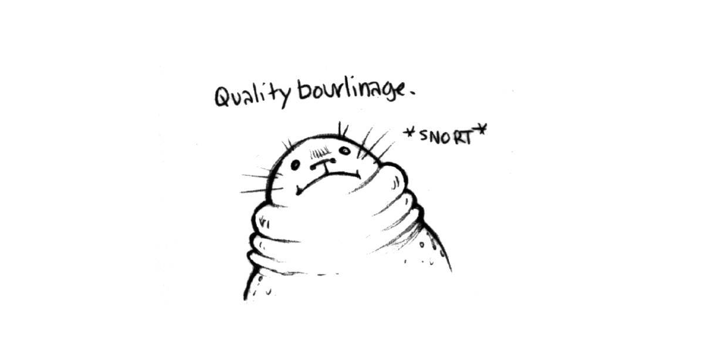As soon as the tide went out enough, the Jesus seal returned to their spot on the rock, planking over the top of the water. The water today was smooth, we could see them well, planking out there for all to see. "Bourlinage" was the art of piling on blubber, it was a term that Devine & I had made up while on a long passage. We often made up words and adopted them into our everyday conversations immediately. In this way, Pino was a small isolated country, and overtime, its residents had developed their own patois. Southeast winds weren't bothering us here, as I'd said, the water here was glass-like, with only the rain disturbing the surface. I put on extra layers of clothes, I felt cold because of the dampness. We hadn't started the woodstove yet, we preferred to add layers, to wait and see if it was enough before burning wood. We had to warm our bodies first. |
|
| I spent the day drawing, there wasn't enough power to use a computer. The battery was old, and couldn't keep a charge as well as it used to. Otherwise, we cooked good food, and tried to catch a glimpse of wildlife in the gap between rain streaks on the windows. We would make another small leap tomorrow. We had 2 options: one for good weather, that was 16 NM away, and another for bad weather, that was 7 NM away. I wanted to return within cell range, and soon, because my younger sibling was expecting, I didn't want to miss the announcement. |
|
| Week 14 | |
| July 29th | Kwakume Inlet to Green Island Anchorage We left at 0730, I already knew just by looking outside that we wouldn't make it to our 16 NM anchorage today. The wind was light, sputtering out of the south, but sometimes even weak wind was enough to mess with our speed. We aimed for Green Island Anchorage, 7 NM was still progress, and hopefully, VHF reception would be better there. |
| The ride was cold, like early spring weather. I had 2 jackets layered over a thick wool sweater. My hands were frozen, I had stashed my gloves away somewhere thinking we wouldn't need them again, because it was summer, was it not? Sometimes I put things away in places that at the time I think are smart, and I trust my future self to be smart too and to remember it, but I often don't. Though really, it might have been because it was never a smart place to begin with. We could see 3 boats at anchor in Green Island Anchorage on AIS, we hoped there weren't more, not all boats were fitted with tracking systems, and those that did didn't necessarily keep them on while at anchor. It was a roomy anchorage, but space wasn't infinite. The boat we were moored with in Kisameet Bay was there, along with a big powerboat and another sailboat(who left as we anchored). We anchored in 7 m (24 ft, 29 at HW) of water. We were glad that there was still room for us. Someone had put a crab trap down in the anchorage, restricting anchoring space... how disappointing. |
|
| We were able to charge our laptops underway with the alternator, the rheostat(see regulator) we had installed worked well, but we had to keep an eye on it. The alternator was a useful backup on grey days, when we had to motor. Still, despite having charged laptops, Devine spent time reading, and I continued to draw, and later, to read. This anchorage was very pretty. VHF reception was not perfect, but good enough. I could hear the broadcast for the Salish Sea, it meant we were getting closer to our home waters. The rain had not returned today, the sky was still grey but bright enough that we could capture a few amps with our solar panels. We prepared chili for dinner, a comforting dish that would also be a comfort tomorrow as a left-over. |
|
| July 30th | Green Island Anchorage All of our neighbors had left. Pino was alone. It wasn't cold out today, but the boat was humid so we lit a small fire. I had patched the deck iron again the other day, it hadn't leaked again since then. We had to keep an eye on new crack formations, and had to fill them as they came. The wind was in the south. I was feeling a bit restless today, Devine too, we were both eager to stretch our legs. But there were no walking trails here, all we could do was row around in the dinghy. |
| I fixed holes in my wool sweaters again today, they were fragile, or I was maybe too rough with them. Soon, my sweaters would be made up entirely of scars. | |
| July 31st | Green Island Anchorage Two sailboats joined us in the anchorage. They were going north, taking advantage of these endless southerlies. The wind rose to 15-25 knots out of the southeast today, our spot was well protected, but we did get wavelets. Green Island Anchorage had many openings, that in certain winds, especially strong winds, allowed wavelets to wander in. |
| The rain fell heavily, and so we did what we usually did on low-power days(which was everyday lately). We read books in the day, and I read again aloud to Devine at night. We were reading Truman Capote's In Cold Blood, a thrilling read. We both looked forward to evening storytime. The wind calmed down later in the day, it was supposed to veer back to the northwest tomorrow. |
|
| August 1st | Green Island Anchorage to Millbrook Cove The forecast was kind to have stayed the same! At this point in the trip, we were both really, really fed up of having to listen to VHF weather. I'd said it before, but the Canadian weather radio broadcast recording was so damn long! "Get to the bit relevant to where we are... come on, come ooon!" We knew other people benefitted from hearing the other bits, but it did little to suppress our whining. What was most frustrating was that sometimes when arriving at the weather bit useful to us, the signal would break, or become noisy, making the forecast undecipherable, then we had to listen to the whole damn thing once again. Reception wasn't 100% clear in many anchorages, we often had to listen to long moments of noise before the radio voice came through clearly again. To save on time, I liked to cook as I was listening to a broadcast, I stopped when the bit I needed came up. I would write down the changes in a notebook, and update them with the new weather as it was released. Sometimes the weather changed dramatically, especially in times of disturbed weather. I liked hearing about the position of weather systems, and what it meant for the waters where we were. |
| We left our nook and proceeded south, aiming for Millbrook Cove. Our morning on the water was uneventful, the wind was 5-15 knots out of the northwest, but it hadn't helped us much. The wind was supposed to rise later, only after the current has turned of course always. Part of us would have liked to continue past Cape Caution, wind conditions would have been right for it, but the tide god wagged their index finger at us, repeating "ah ah ah!" in a Dennis Nedry sort of way. You win again, tide. | |
| We saw many boats on the water today, going north and south. The water was full of runabouts, belonging to the North Coast's numerous summer fishing lodges. We took a shortcut over to Millbrook Cove, disturbing a very large flock of seabirds as we did — the biggest we'd seen on the water so far. The birds paddled away lazily as we glided past. When we arrived near the entrance, we saw 2 people in a dinghy, fishing. Their boat was likely anchored in Millbrook Cove. We realized that they were the owners of St-Ledger, a boat we had seen in our last 2 anchorages. We anchored behind them. They must have laughed when they saw us coming, their boat was always one step ahead of us. |
|
| Once at anchor, we shared an NA beer, and solar-cooked some seitan. Michael, aboard St-Ledger, came by to say hello and to offer us some fish — a nice gesture, but we had to politely decline, because we did not eat fish. We learned that he and his partner had built their boat, they had sailed it around the world for 30 years. We talked about their travels, and he mentioned in passing that he had raced aboard our boat once, when it used to belong to Pino's former owner, back when the boat was still named Irish Whiskey. | |
| August 2nd | Millbrook Cove to Allison Harbour A mosquito had tormented us last night. The midges were gone, yes, but another predator had emerged. They had stolen blood, and many precious hours of sleep. The alarm rang at 0550. We snoozed for 10 minutes, then up up up! Raising the anchor after having just woken up, with the taste of sleep still in my mouth, was rough, but at least, the anchor had come up easily. As soon as we lifted anchor and left, we saw St-Ledger was also hoisting theirs — for once, we were ahead of them, but it didn't last, they caught up to us by motor outside of the anchorage. St-Ledger disappeared into a fog bank ahead, aiming for Port Hardy. The fog bank obstructed our vision for a long time, we ate our respective breakfasts while trapped in its soggy arms. Once in a while, narrow openings would form in it, through which we could see hints of phantasmic green hills and blue sky, an unfinished painting of a better world. |
| Eventually, the fog released us. We began rounding Cape Caution. The wind was down, but the waves were up. It took a long while to get around the cape, the current there was a big hindrance. The waves were building, even if we had stayed well clear of Slingby Channel. The waves were ugly everywhere. It was only when we arrived near Allison Harbour that the waves became less threatening, we had gained a bit more speed too, but I was tired, and felt sea sick. The waves had been bad all morning. The seasickness affected us both, neither of us could eat, which was fine, because neither of us would have been able to cook down there. | |
| We sailed past numerous reefs and islands to get to Allison Harbour. On the way, we spotted a grey whale! The first this year. We motored into Allison Harbour on flat waters, cooking was again possible so Devine began to prepare corn pone while I steered us into the bay towards our planned anchoring spot. The long inlet acted as a wind tunnel... I hadn't expected that, I thought it was well-protected from northwest winds. We anchored in 9 m (29 ft, HW), in our breezy alley, hoping the wind would die down overnight so we could sleep without worrying. We couldn't get a good VHF signal in here to check if the weather had changed. Going straight to Port McNeill tomorrow would have been nice, but 34 NM was too long, a short run to Blunden Harbour would be better, plus that anchorage was within cell range — Allison Harbour was not so blessed. |
|
 I had mentioned being restless recently, I still was, but I was tired most of all. Tired of the constant planning and waiting. I needed time off from my time off. I knew I felt this way because it had been a long, rough day, and because writing these logs at peak tiredness in the evenings colored my memory of events for the worse. A morning log would likely have more pep in it. A Rek with pep, what does that look like even? I had mentioned being restless recently, I still was, but I was tired most of all. Tired of the constant planning and waiting. I needed time off from my time off. I knew I felt this way because it had been a long, rough day, and because writing these logs at peak tiredness in the evenings colored my memory of events for the worse. A morning log would likely have more pep in it. A Rek with pep, what does that look like even? |
|
| August 3rd | Allison Harbour to Blunden Harbour We awoke to a foggy world once again, the shore was close but we couldn't see it. It was thick. We had plans to leave at 0730, fog or no fog. After oatmeal and coffee, we got ready to leave. The fog had lifted, but the sky was grey and low, so low we couldn't see the top of any mountain. I hoisted the anchor, but the chain came up very muddy, more muddy than I'd ever experienced. It accumulated on the chain stopper as each link passed through it, producing a sound which I could best describe as "glip-globbing," creating a nasty brown wet mountain at the bow. The mud piled up on my anchoring gloves too, and because the gloves were old and full of holes the mud oozed inside and onto my hands. My rain bibs were splattered with sea things. I had become "the mud." I always rinsed my hands with the pressure sprayer after working with the anchor, but today’s anchor hoisting required some serious dousing. I couldn't go inside the cabin to fetch my unfinished cup of coffee, the mud monster had to wait outside. Devine was kind enough to hand it to me. |
| The fog was still out there in Queen Charlotte Strait, but it was drifting towards open waters. A BC ferry ship went by, its upper half clouded over with fog, making it look like only half a ship was going by. The waters here were often calm in the mornings. We fought a bit of current on our way out, but once into Richards Channel, it began to help us. The current had not helped us much of late, this was a nice change. We eventually wandered back into cell coverage again, Devine went inside to try and push some changes to their projects, check emails, etc. I focused on checking the weather for today, it seemed like the wind had changed to 10-20 knots out of the southwest instead of the same wind but out of the northwest yesterday afternoon, no wonder Allison Harbour was so breezy, it was open to that direction! |
|
| The current really had us moving! We stayed ahead of the fog bank, and the more south we went, the more blue sky appeared overhead. There was always floating debris near tide lines, accumulations of tangled bull kelp, bladderwrack, and driftwood. We'd also find murrelets there, many tiny beautiful seabirds hidden amongst the algae and wood floats. I spotted many logs ahead that we had to avoid, but they kept disappearing. I thought that maybe the waves were swallowing them up briefly, but no, they were sea otters. Their pale fluffy faces stared at us as we went past. As soon as we moved past the Jeanette Islands, the ocean waves disappeared. |
|
| The wind started as we arrived near Blunden Harbour, "thanks for nothing wind!" I'd read that this anchorage could get very breezy, that it was like anchoring in Queen Charlotte Strait, minus the fetch — this turned out to be very true. The wind was blowing hard there when we got in. 2 other boats lay at anchor, we anchored behind them in 9 m (32 ft, HW) of water. We preferred to anchor behind boats instead of ahead of them, whenever possible, this way we could add as much scope as we wanted. We had internet here, so we caught up on messages, prepared our monthly newsletter, processed webring applications, fixed bugs... lots to do, lots to do! |
|
| August 4th | Blunden Harbour to Port McNeill The wind was usually calm by night, so we slept well. We lifted anchor at 0900, timed with the current, ready to cross the strait to Port McNeill. The sea was quiet, there was no fog anywhere near us, but we couldn't see the Vancouver Island shore. The air was thick, and cold. I wore a pair of gloves to keep warm. We saw many seabirds, huddled up, gossiping, arguing maybe... who knows! Some were gathered in such high numbers and screeched so loudly that for a while it appeared that the world was only made up of birds. Seabird planet. We also saw a raft of sea otters(yes, a raft is what you use to refer to a group of sea otters, isn't that awesome?), with 10-20 sea otters hanging out together as we arrived near Malcom Island. |
| While looking at targets on Navionics, we saw a float plane was coming out of the pass leading to Port McNeill. "Whoa! Float planes register on AIS?" It was odd to see. Navionics showed a little plane icon instead of the usual triangle for boats. | |
| When arriving in the gap between Vancouver Island and Malcolm Island, the sky had turned entirely blue. We arrived in Port McNeill at 1400, glad to find an empty berth, although it was downwind of us, making it tough to land. Devine was able to jump on the dock, bridging a rather large gap that I was too afraid to attempt myself. Devine grabbed the stern line. "Amidship line! Amidship line!" I said, then tossed it to them, but failed, then did it again quickly. Devine grabbed it and was able to secure the boat. "Real bad throw." They said, "I know, I know..." I said, embarrassed by my performance. Docking was always stressful. | |
| As soon as Pino was tethered, we went out for a supply run. As we walked on the dock towards the main ramp, I heard my name being called out, "Rekka!" The voice came from far away. I looked around, but couldn't see where it had come from, maybe I had imagined it. Then I heard it again. "Rekka!" We had both heard it clearly that time, so we took a few steps back and saw 2 people waving at us from the North Island Marina docks, across from the Port McNeill public dock. Glenn and Lynda were there, friends from the Victoria Causeway docks on Commodore. I went to pay our moorage and Devine went over to say hello. When I came out, Devine was there waiting for me. "We'll meet up with them later at the pub, after our errands." | |
| When at the pub, Lynda and Glenn told us that they had gone around the island, clockwise from Victoria, and had arrived here a few days ago. We shared stories of our respective trips, then went next door for some burgers and fries(we had an amazing bean burger). | |
| While heading back towards Pino, we saw a group of people on the dock, daring one guy to jump in the freezing cold water. The guy was in his swimming trunks, and looked afraid, he didn't want to do it. His so-called friends kept saying he "wasn't a man," or that he was "a pussy." We felt bad that men had to regularly deal with that kind of abuse, bullied into doing something they didn't wish to do at the risk of being seen as less of a man. "You don't have to, you know..." we said to him, in passing. "Oh no no I have to." He said, and we knew why he said that. In the end, he had jumped in... it went fine, but it was a sad thing to witness. | |
| August 5th | Port McNeill We loaded the boat with supplies. I had plans to pick up extra engine oil and cover material for our dry toilet, but I hadn't realized that today was a holiday, B.C day. Many stores were shut. I would have to go and pick up these items tomorrow morning instead, before leaving. Since I couldn't complete those particular tasks, I returned to Pino to clean salt and mud off of the deck. I also spent time removing barnacles from Pino's stern and rudder. I removed the ones I could see, the rest would have to wait. I cleaned the galley too, scaring away dust bunnies and rotting things, things that had fallen behind the stove and that we had forgotten to pick up. They were now hairy, purply and stinky, moments away from growing legs. |
| We met up with Glenn and Lynda again to give the Southeast Alaska chart card back to them. We used to not rely on the little chartplotter SY Dakota had given us in 2022, but we had used it a lot this year. It was nice to have 3 different references for charts(chartplotter, Navionics on an old iphone, and physical charts). We could check for details that were present in one, but maybe absent in another. They told us we ought to try and visit Sointula on Malcolm Island, we had heard of it but weren't sure if it was worth visiting. | |
| Week 15 | |
| August 6th | Port McNeill to Sointula I completed the errands I was meant to do yesterday, now that shops were open again. We dropped by Commodore to say goodbye, but they weren't home, and so we took off at 1130, bound for Sointula. A big kelp bank blocked the quick way to Malcolm Island, extending way east of the Port McNeill ledge. We worked around it, watching seabirds and sea lions wading in it, unbothered, content, unlike us... because going around had added a few more miles to what was supposed to be a very short journey. Once clear of the kelp, we resumed our progress towards the Malcolm Island docks. I completed the errands I was meant to do yesterday, now that shops were open again. We dropped by Commodore to say goodbye, but they weren't home, and so we took off at 1130, bound for Sointula. A big kelp bank blocked the quick way to Malcolm Island, extending way east of the Port McNeill ledge. We worked around it, watching seabirds and sea lions wading in it, unbothered, content, unlike us... because going around had added a few more miles to what was supposed to be a very short journey. Once clear of the kelp, we resumed our progress towards the Malcolm Island docks.We moored onto the south docks at the end of a finger. Moorage here was reasonable, at 35$ per night without power for our boat. A lot of fishing boats were moored onto these docks, as well as a few sailboats with interesting rigs. We saw many concrete and wooden sailboats in varying stages of decomposition, some were well-cared for, but most were growing mossy and decrepit.  |
| We walked to town, stopping at the museum on the way. The museum housed a lot of antique Finnish tools and clothes, as well as old photographs and books documenting the lives of the settlers when they had first arrived here in 1901. Like all communes, they had shaky beginnings, but the values of the community, like equality between genders, lived on today. We watched a short film chronicling the beginnings as well as the modern history of Sointula. The museum was a truly worthwhile stop. When we left, the grey skies had gone and we walked to the park at the south end of the island to stretch our legs, but it was getting very hot out, so we walked back to Pino, finding shelter under trees along the way. The Co-op store was shut today, but we had plans to visit it tomorrow morning. We decided to stick around for 1 more day, we wanted to try the hiking trails in town, our legs demanded it. |
|
| August 7th | Sointula Under the cover of a grey morning sky, we walked our 20 lbs propane tank to the nearest gas station to refill it. We took turns carrying it. It wasn't empty, but we wanted to make sure we wouldn't run out. We weighed it at the gas station, there was still 2 lbs of propane left in it. We were glad to have made the effort to refill it, but we both dreaded the walk back with a full tank. Devine waited with the tank outside of the Co-op store, while I went inside to check out what was on the shelves. A local took pity on Devine, standing out there with a full heavy tank, and offered us a ride back to the docks. Under the cover of a grey morning sky, we walked our 20 lbs propane tank to the nearest gas station to refill it. We took turns carrying it. It wasn't empty, but we wanted to make sure we wouldn't run out. We weighed it at the gas station, there was still 2 lbs of propane left in it. We were glad to have made the effort to refill it, but we both dreaded the walk back with a full tank. Devine waited with the tank outside of the Co-op store, while I went inside to check out what was on the shelves. A local took pity on Devine, standing out there with a full heavy tank, and offered us a ride back to the docks. |
| After lunch, we went for a hike. The trail was around 4 km long, ending on a place called Big Lake. The trail was well-maintained, and very pretty. We found many seats carved into fallen logs, covered in moss, like we had stumbled into a fairy-tale world. Our legs weren't used to trekking in forests anymore, but we knew we'd build up our strength again over time. We went back to Pino at 1530. A day out in the sun wore us out, we went to bed early. |
|
| August 8th | Sointula to Boat Bay The flood only started at 1300, so we had to wait a while before heading out. Leaving later too, we thought, would maybe give time for the afternoon wind to build up. When we left, the wind wasn't there. "Oh it'll come! It's coming! We'll get some wind, yes we will!" we said, as we motored away from Sointula. On the way out, our little engine choked on some algae again. I found more bladderwrack in the strainer, this was a repeat of our ride to Klemtu, in which we again used the hand pump to free the obstruction in the thruhull. We got it out quicker this time, but we were annoyed, this was happening way too often! Damn bladderwrack floats! The tidelines here were full of them, they were hard to avoid. Whenever we saw some afloat in a tideline that we couldn't work around, I yelled "No! Don't you dare go in there! I forbid it! Tell your friends!" |
| We were back underway soon enough, but the wind never came. Later we learned that the forecast in Queen Charlotte Strait had changed from 15 knots, to light. We felt not one of those 15 knots. "Where was the storm?!" we yelled, quoting The Dresser, a movie we both quite liked. "A collision of cotton balls!" 2 cruiseships went by, heading into Johnstone Strait, sending us flying in their wake. The people on those ships would arrive in Victoria tonight, while it would take a boat like us days to do the same trip. We lived at a very different pace. |
|
| We hit some kind of countercurrent when south of the Hanson Islands(um-bop!), which slowed us down a ton for about an hour. It appeared as though we wouldn't make it to Port Harvey today. We aimed for Boat Bay instead, a tiny bay offering fair protection from the wind in the strait(not from southeast, though). We didn't have many options, so we thought we'd try it. We felt a west wind when near Boat Bay, but it wasn't strong, not yet. We saw some tents laid ashore when we arrived, there were people camped out on elevated wooden platforms. There was also an inflatable boat moored onto a floating dock in the lee of Swain Point. We could hear someone cutting wood with a chainsaw. We anchored in 9 m (32 ft). Some breeze did make it into the bay, but nothing crazy. Checking the weather buoy at Fanny Island, I could see it was blowing 25 knots down south. The wind funnels a lot further south, as Johnstrait becomes more constricted by land. We were looking forward to good sailing wind, something we thought that the upcoming part of Johnstone Strait was sure to offer us. We wanted to have Pino move faster than 3.5 knots. At this point, Pino's bottom was really dirty though, we knew that didn't help. The algae beard was back, in strength... |
|
| August 9th | Boat Bay to Forward HarbourThe wind was quiet last night, it was supposed to rise tonight, but we would be gone by then. We thought of aiming for Port Neville, or for Port Harvey. It was good to have options. We would leave at 1300. We would have to fight a bit of current for 1 hour, but we preferred to try to make progress earlier to arrive at our anchorage on time. At this hour, there was plenty of fog out there. |
| I prepared lunch, but before I could finish I got a call from my mom! I knew what this was...! My younger sister had her baby! That same morning I had sent my sister a message, wishing her a happy birthday (because today was her birthday). Her baby was born on the same day as her! They would forever share a birthday! I thought this was amazing. I talked to my mom and dad for a while, it helped to pass the time and to combat my usual pre-departure jitters.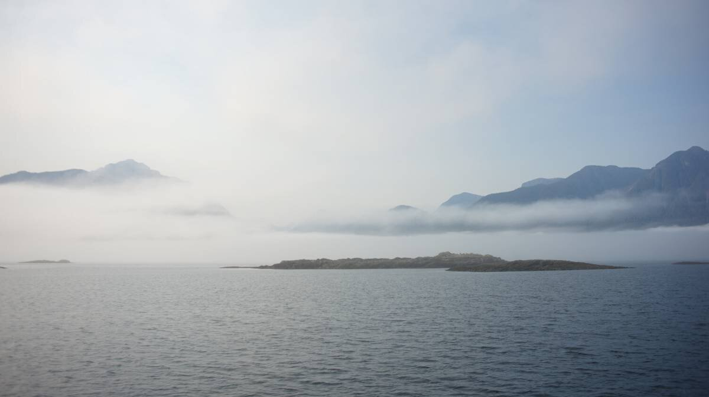We left Boat Bay right after the phone call. The wind had risen, it would help us overcome the contrary current. We put 2 reefs in the main, poled-out the jib, and off we went! The fog lay ahead still, but was slowly burning off. We motor-sailed at first, then when the wind rose enough we switched it off, enjoying the calm. |
|
| It had been a while since we'd had a proper sail. The fog burned off entirely by then. Because our speed was good, we bypassed Port Harvey. Another sailboat was sailing alongside us, under headsail alone, we were together for a really long time. When nearing Port Neville, the wind increased a lot. The wind was always stronger in this area. The white caps were quick to form. The Fanny Bay weather buoy reported 23 knots, with gusts to 28 knots. We had the wind in the back, so it was very manageable. We had put 2 reefs in for this area. We had read many condition reports recorded by this particular buoy, and had seen that between 1400 and onward, that the wind woud be high. We were zooming at 6.6 knots! We turned into Sunderland Channel, the wind and waves chasing us through. We thought the sail up this channel would be more tame, but it was still very exciting! The wind kept on gusting, we were running under the mainsail alone now, the wind was a bit too offset for the jib to be out. Our speed was still 5.5 knots though, enough to get us to Forward Harbour before the current switched directions. |
|
| Near the entrance to Forward Harbour, some seabirds lay in the water, moving only at the very last second. "Go around!" they seemed to say. The anchorage was very busy, we had counted 8 boats, all were taking up the shallowest spots. We had to anchor in 21 m (70 ft) of water. There was no more room in anything below that line. We ate dinner at 2000, read a little, then fell asleep. |
|
| August 10th | Forward Harbour to Bickley Bay We woke at 0800, all our neighbors were gone. All of them. That's how it was around here, boats didn't stay long. The wind was lighter in the morning, so all of the boats likely wanted to head northward and not have to fight the wind to do it. The wind was set to rise to 30-35 knots later in the day. We planned to cross Whirlpool Rapids at 1400, then to make it to Greene Point Rapids with a current running(at a maximum of 3 knots) at 1730. We could probably get there before then, and would have to deal with far less current. In general, we preferred to run rapids at slack, but the area between the 2 rapids did not have many good anchorages, at least none that could grant us quick entry and exit(many were up-channel). We aimed to stop in Bickley Bay, 17 NM away. |
| While we waited for 1400, Devine pointed out to me that Cortes Island was only 35 NM away from here in a straight line. It was so close! But with many rapids yet to traverse, the road there was long, with many forced stops, and precisely timed arrivals and departures. We had lunch, then proceeded to haul up the anchor. The wind had risen a little already, making the hoisting game a bit more challenging. I could only hoist the rope rode to 125 ft, then we had to use the cockpit winch to pull in the rest. We experienced a few snags today, like the rode getting caught in the anchor locker closing pin, then the chain to rode shackle getting stuck on the edge of the bow roller, well... not stuck, but we had to re-align it to get it to pass correctly. When there are big gusts, the boat jerks hard to starboard, or port, and we have to wait until the boat is better aligned with the wind again before resuming the rode hauling work. |
|
| After lifting the anchor, we raised the main with 2 reefs in it. The wind would not be gentle today. We proceeded over to Whirlpool Rapids, arriving at the turn of the current, as it started to flood(south) at slack tide. The wind was with us already then, at our stern. We poled out the jib, turning Pino into a very wide target once again. 2 boats were fighting the tide and the wind, heading into the other direction. We did not envy them. As soon as we exited Wellsbore Channel, the wind and waves kicked up, hitting us on the beam. We rolled in the jib and let the wind carry us through Chancellor Channel. Our run up this channel was very fast. We had arrived 1 hour before peak flood current at Greene Point Rapids, with the current running at 2.8 knots. We went on through with no issues, we saw a few boils and small whirlpools, but nothing alarming. |
|
| The wind accelerated as we got near Bickley Bay, getting the mainsail down was a challenge. The bay was big, but open, and crab traps occupied the best anchoring spots. We had to anchor in 15 m (50 ft HW) of water. Because of the big winds, I put out a 4:1 anchoring scope, which turned out to be a great idea because it got very breezy! The wind circled around the point and swirled into the bay. We would get hit with powerful gusts every 10 minutes. We slept very, very badly, some of those gusts were scary. The wind was blowing at 30-35 knots in Johnstone Strait. We had read in the Waggoner guide that the holding here was bad, but the anchor held all night despite that crazy wind. Anchoring in the Cordero Islands, or in Tallac Bay, might have been a better choice. Bickley Bay might have been fine in settled weather. We had already put a cross on stopping in Shoal Bay, because we assumed the place would be too packed at this time of the year. |
|
| August 10th | Bickley Bay to Hathayim Marine Park Waking up tired sucks. We crawled out of bed at 0830, lured out by the promise of coffee. We were 26 NM away from Hathayim Marine Park on Cortes Island, 26 NM away from an extended time of rest in a protected place, but we had yet another set of rapids to cross. The plan was to leave at noon, beat against a bit of current(1 knot max, the wind would help us overcome this), to arrive at Dent Rapids at 1517, so that we could in turn pass Gillard Rapids, then maybe the Yucultas. The tidal exchange wasn't big right now, so we thought we could pass all 3 in one go, like we had done on our way north. |
| We left Bickley Bay at noon. I had prepared lunch ahead of time so it would be ready when we got hungry, that way we wouldn't have to cook while sailing. There was wind in Cordero Channel, and the current was not a problem. We progressed well, sailing past Shoal Bay, seeing with our own eyes that it was indeed very busy there, then past Nodales Channel. The wind stayed with us until we reached the Denham Islands, then we began to experience disturbed waters, and felt some of the effects of the dreaded Dent Rapids, laying ahead. We pushed on at 2.5 knots, going slow, aiming to arrive at 1517. Other boats joined us, a few small motor boats, 2 big ones, and a sailboat. All went through ahead of us, but we arrived at Dent Rapids as planned. The waters were fine, smooth and only disturbed by wind. We ran wing-on-wing, the breeze propelled us through Gillard Passage. We arrived there 15 minutes after slack, but because the tidal exchange wasn't huge, we didn't struggle. We arrived on the other side in Big Bay, and saw that the public dock was full... no problem, the Yucultas were calm and we had eyes on Cortes Island! We experienced zero disturbances in the Yucultas, and glided on into Calm Channel. The Yucultas were teeming with sports boats, idling on calm waters. There were also many float planes and helicopters whirring above our heads. We were officially back in busy waters again! |
|
| The wind only left us when we arrived at the north end of Read Island. From here, we could see the notch on Cortes Island, denoting the entrance to Hathayim Marine Park. Calm Channel was such a gorgeous place, and the weather was just perfect. The surrounding mountains, flat waters, and the evening sky was such a comfort! We were back in familiar waters again, we knew every indentation in the land, all of the bights and bays. We saw boats stern-tied inside many of those bights, nested in quiet places on various small islands, away from the crowds and the noise. August was a busy time in Desolation Sound, boats that wanted to be left alone had plenty of nooks to choose from, weather permitting. |
|
| When near the top of Cortes Island, we saw a whale breaching, doing several tail slaps. Watching the whale action kept us busy, entertained, it helped to shorten the distance to the entrance. A light breeze started when we got near, reducing our cruising speed a little, delaying our arrival. Sometimes the wind helped, sometimes it didn't. The sun was very low in the sky when we passed the B.C. Parks sign at the entrance. In the first basin, we could see a lot of boats lying at anchor. The outer and inner bays were packed. We motored around, looking for a Pino-sized gap amongst all of the moored boats. We found such a place, dropped anchor, and breathed a sigh of relief. We had done it. We had gone to Southeast Alaska and back. It was strange to share an anchorage with so many boats (there were about 40 around us). Boats here knew how to anchor close, while giving each other room to swing. |
|
| It was very dark by the time the anchor was down. While I was adjusting the rode at the bow, I could hear Devine inside, making popcorn. "Yesss!" I said as I tied off the rode, hurrying inside. "I am so ready for this!" | |
| Note: I did not document the rest of the trip to Victoria, but we returned there on October 1st 2024. The ride back was slow, we stayed near Cortes island for a few weeks, then stopped in many other anchorages. | |
— The end —
Thank you for reading through this very long, very detailed account of our sail from Victoria to Sitka, and back. We hope that this re-telling of events has provided valuable insight into the kind of planning, timing, as well as both the physical and mental fortitude, required for attempting this kind of trip.
The log transcription was completed on March 5th 2025.
As always, thank you for your support.
Rek & Devine